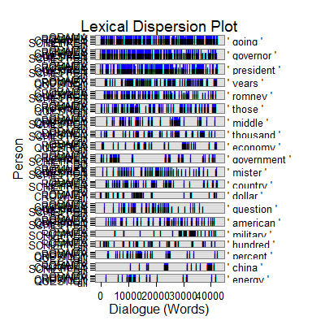

discourse_connector(text.var, grouping.var, n.before = 1, tot = FALSE, n.after = n.before, ord.inds = TRUE, markup = c("<<", ">>"), name = NULL, ...)discourse_connector_logical(text.var, grouping.var, n.before = 1, tot = FALSE, n.after = n.before, ord.inds = TRUE, markup = c("<<", ">>"), name = NULL, fun1, fun2 = NULL, ...)
TRUE condenses sub-units (e.g., sentences)
into turns of talk for that grouping.var.TRUE inds is ordered least to greatest.c("", "") to not mark the discourse
connectors.termco and
trans_context.termco and
trans_context.termco.Returns returns a list of 2-3:
countsA termco object of discourse connector counts.
Context 1A trans_context object of the discourse connectors in context. Note the name of this object is supplied by names element one.
Context 2...nAn optional (not returned if regex is of length one) trans_context object of the discourse connectors in context. Note the name of this (these) object(s) is supplied by names element 2...n.
Extract discourse connectors in context. This is the flexible default template for modular use in specific discourse connector functions.
Kalajahi, S. A. R., Abdullah, A. N., Mukundan, J., & Tannacito, D. J. (2012) Discourse connectors: An overview of the history, definition and classification of the term. World Applied Sciences Journal, 19(11), 1659-1673.
## Marker with one type (just: "I") out1 <- with(pres_debates2012[1:200, ], discourse_connector(dialogue, person, names = c("I"), regex = "\\bI('[a-z]+)*\\b", terms = list(I = c(" I ", " I'")) )) out1[[1]]person word.count I 1 OBAMA 943 12(1.27%) 2 ROMNEY 1349 31(2.30%) 3 LEHRER 316 4(1.27%)out1[[2]]=================================== Event 1: [lines 2-4] LEHRER: But what do you support the voucher system, Governor? ** ROMNEY: What <<I>> support is no change for current retirees and near retirees to Medicare. ROMNEY: And the president supports taking dollar seven hundred sixteen billion out of that program. =================================== Event 2: [lines 6-8] ROMNEY: So that's that's number one. ** ROMNEY: Number two is for people coming along that are young, what <<I>> do to make sure that we can keep Medicare in place for them is to allow them either to choose the current Medicare program or a private plan. ROMNEY: Their choice. =================================== Event 3: [lines 13-15] ROMNEY: And by the way, if the government can be as efficient as the private sector and offer premiums that are as low as the private sector, people will be happy to get traditional Medicare or they'll be able to get a private plan. ** ROMNEY: <<I>> know my own view is <<I'd>> rather have a private plan. ROMNEY: I'd just assume not have the government telling me what kind of health care I get. =================================== Event 4: [lines 14-16] ROMNEY: I know my own view is I'd rather have a private plan. ** ROMNEY: <<I'd>> just assume not have the government telling me what kind of health care <<I>> get. ROMNEY: I'd rather be able to have an insurance company. =================================== Event 5: [lines 15-17] ROMNEY: I'd just assume not have the government telling me what kind of health care I get. ** ROMNEY: <<I'd>> rather be able to have an insurance company. ROMNEY: If I don't like them, I can get rid of them and find a different insurance company. =================================== Event 6: [lines 16-18] ROMNEY: I'd rather be able to have an insurance company. ** ROMNEY: If <<I>> don't like them, <<I>> can get rid of them and find a different insurance company. ROMNEY: But people make their own choice. =================================== Event 7: [lines 21-23] ROMNEY: We have to make sure this program is there for the long term. ** ROMNEY: That's the plan that <<I've>> put forward. ROMNEY: And, by the way the idea came not even from Paul Ryan or or Senator Wyden, who's the co author of the bill with with Paul Ryan in the Senate, but also it came from Bill Bill Clinton's chief of staff. =================================== Event 8: [lines 24-26] ROMNEY: This is an idea that's been around a long time, which is saying, hey, let's see if we can't get competition into the Medicare world so that people can get the choice of different plans at lower cost, better quality. ** ROMNEY: <<I>> believe in competition. OBAMA: Jim, if I if I can just respond very quickly, first of all, every study has shown that Medicare has lower administrative costs than private insurance does, which is why seniors are generally pretty happy with it. =================================== Event 9: [lines 25-27] ROMNEY: I believe in competition. ** OBAMA: Jim, if <<I>> if <<I>> can just respond very quickly, first of all, every study has shown that Medicare has lower administrative costs than private insurance does, which is why seniors are generally pretty happy with it. OBAMA: And private insurers have to make a profit. =================================== Event 10: [lines 35-37] OBAMA: And that's why they were supportive of the approach that we took. ** OBAMA: One last point <<I>> want to make. OBAMA: We do have to lower the cost of health care, not just in Medicare and Medicaid| =================================== Event 11: [lines 44-46] OBAMA: Is that a is that a separate topic? ** LEHRER: Yeah, we're going to yeah, <<I>> want to get to it. OBAMA: I'm sorry. =================================== Event 12: [lines 45-47] LEHRER: Yeah, we're going to yeah, I want to get to it. ** OBAMA: <<I'm>> sorry. LEHRER: But all I want to do is go very quickly| =================================== Event 13: [lines 46-48] OBAMA: I'm sorry. ** LEHRER: But all <<I>> want to do is go very quickly| ROMNEY: Let's get back to Medicare. =================================== Event 14: [lines 70-72] ROMNEY: You can't have a free market work if you don't have regulation. ** ROMNEY: As a businessperson, <<I>> had to have <<I>> need to know the regulations. ROMNEY: I needed them there. =================================== Event 15: [lines 71-73] ROMNEY: As a businessperson, I had to have I need to know the regulations. ** ROMNEY: <<I>> needed them there. ROMNEY: You couldn't have people opening up banks in their in their garage and making loans. =================================== Event 16: [lines 73-75] ROMNEY: You couldn't have people opening up banks in their in their garage and making loans. ** ROMNEY: <<I>> mean, you have to have regulations so that you can have an economy work. ROMNEY: Every free economy has good regulation. =================================== Event 17: [lines 84-86] ROMNEY: Dodd Frank was passed. ** ROMNEY: And it includes within it a number of provisions that <<I>> think has some unintended consequences that are harmful to the economy. ROMNEY: One is it designates a number of banks as too big to fail, and they're effectively guaranteed by the federal government. =================================== Event 18: [lines 86-88] ROMNEY: One is it designates a number of banks as too big to fail, and they're effectively guaranteed by the federal government. ** ROMNEY: This is the biggest kiss that's been given to to New York banks <<I've>> ever seen. ROMNEY: This is an enormous boon for them. =================================== Event 19: [lines 93-95] LEHRER: Do you want to repeal Dodd Frank? ** ROMNEY: Well, <<I>> would repeal and replace it. ROMNEY: We're not going to get rid of all regulation. =================================== Event 20: [lines 103-105] LEHRER: Let's let him respond let's let him respond to this specific on Dodd Frank and what the governor just said. ** OBAMA: <<I>> think this is a great example. OBAMA: The reason we have been in such a enormous economic crisis was prompted by reckless behavior across the board. =================================== Event 21: [lines 117-119] OBAMA: Now, Governor Romney has said he wants to repeal Dodd Frank. ** OBAMA: And, you know, <<I>> appreciate and it appears we've got some agreement that a marketplace to work has to have some regulation. OBAMA: But in the past, Governor Romney has said he just want to repeal Dodd Frank, roll it back. =================================== Event 22: [lines 121-123] OBAMA: Because if you do, then Governor Romney is your candidate. ** OBAMA: But that's not what <<I>> believe. ROMNEY: Sorry, but that's just not that's just not the facts. =================================== Event 23: [lines 124-126] ROMNEY: Look, we have to have regulation on Wall Street. ** ROMNEY: That's why <<I'd>> have regulation. ROMNEY: But I wouldn't designate five banks as too big to fail and give them a blank check. =================================== Event 24: [lines 125-127] ROMNEY: That's why I'd have regulation. ** ROMNEY: But <<I>> wouldn't designate five banks as too big to fail and give them a blank check. ROMNEY: That's one of the unintended consequences of Dodd Frank. =================================== Event 25: [lines 142-144] ROMNEY: Sometimes they didn't come out with a clear regulation. ** ROMNEY: <<I>> will make sure we don't hurt the functioning of our of our marketplace and our business, because <<I>> want to bring back housing and get good jobs. LEHRER: All right. =================================== Event 26: [lines 144-146] LEHRER: All right. ** LEHRER: <<I>> think we have another clear difference between the two of you. LEHRER: Now, let's move to health care where I know there is a clear difference, and that has to do with the Affordable Care Act, Obamacare. =================================== Event 27: [lines 145-147] LEHRER: I think we have another clear difference between the two of you. ** LEHRER: Now, let's move to health care where <<I>> know there is a clear difference, and that has to do with the Affordable Care Act, Obamacare. LEHRER: And it's a two minute new new segment, and that means two minutes each. =================================== Event 28: [lines 151-153] LEHRER: Why? ** ROMNEY: <<I>> sure do. ROMNEY: Well, in part, it comes, again, from my experience. =================================== Event 29: [lines 153-155] ROMNEY: Well, in part, it comes, again, from my experience. ** ROMNEY: You know, <<I>> was in New Hampshire. ROMNEY: A woman came to me and she said, look, I can't afford insurance for myself or my son. =================================== Event 30: [lines 154-156] ROMNEY: You know, I was in New Hampshire. ** ROMNEY: A woman came to me and she said, look, <<I>> can't afford insurance for myself or my son. ROMNEY: I met a couple in Appleton, Wisconsin, and they said, we're thinking of dropping our insurance, we can't afford it. =================================== Event 31: [lines 155-157] ROMNEY: A woman came to me and she said, look, I can't afford insurance for myself or my son. ** ROMNEY: <<I>> met a couple in Appleton, Wisconsin, and they said, we're thinking of dropping our insurance, we can't afford it. ROMNEY: And the number of small businesses I've gone to that are saying they're dropping insurance because they can't afford it, the cost of health care is just prohibitive. =================================== Event 32: [lines 156-158] ROMNEY: I met a couple in Appleton, Wisconsin, and they said, we're thinking of dropping our insurance, we can't afford it. ** ROMNEY: And the number of small businesses <<I've>> gone to that are saying they're dropping insurance because they can't afford it, the cost of health care is just prohibitive. ROMNEY: And and we've got to deal with cost. =================================== Event 33: [lines 164-166] ROMNEY: Expensive things hurt families. ** ROMNEY: So that's one reason <<I>> don't want it. ROMNEY: Second reason, it cuts dollar seven hundred sixteen billion from Medicare to pay for it. =================================== Event 34: [lines 166-168] ROMNEY: Second reason, it cuts dollar seven hundred sixteen billion from Medicare to pay for it. ** ROMNEY: <<I>> want to put that money back in Medicare for our seniors. ROMNEY: Number three, it puts in place an unelected board that's going to tell people ultimately what kind of treatments they can have. =================================== Event 35: [lines 168-170] ROMNEY: Number three, it puts in place an unelected board that's going to tell people ultimately what kind of treatments they can have. ** ROMNEY: <<I>> don't like that idea. ROMNEY: Fourth, there was a survey done of small businesses across the country, said, what's been the effect of Obamacare on your hiring plans? =================================== Event 36: [lines 171-173] ROMNEY: And three quarters of them said it makes us less likely to hire people. ** ROMNEY: <<I>> just don't know how the president could have come into office, facing twenty three million people out of work, rising unemployment, an economic crisis at the at the kitchen table, and spend his energy and passion for two years fighting for Obamacare instead of fighting for jobs for the American people. ROMNEY: It has killed jobs. =================================== Event 37: [lines 176-178] LEHRER: Mister President, the argument against repeal? ** OBAMA: Well, four years ago, when <<I>> was running for office, <<I>> was traveling around and having those same conversations that Governor Romney talks about. OBAMA: And it wasn't just that small businesses were seeing costs skyrocket and they couldn't get affordable coverage even if they wanted to provide it to their employees. =================================== Event 38: [lines 192-194] OBAMA: Number two, if you don't have health insurance, we're essentially setting up a group plan that allows you to benefit from group rates that are typically eighteen percent lower than if you're out there trying to get insurance on the individual market. ** OBAMA: Now, the last point <<I'd>> make before| LEHRER: Two minutes two minutes is up, sir. =================================== Event 39: [lines 194-196] LEHRER: Two minutes two minutes is up, sir. ** OBAMA: No, <<I>> think <<I>> had five seconds before you interrupted me, was the irony is that we've seen this model work really well in Massachusetts, because Governor Romney did a good thing, working with Democrats in the state to set up what is essentially the identical model and as a consequence people are covered there. OBAMA: It hasn't destroyed jobs.plot(out1)## Marker with two types (both: "I" & "you") out2 <- with(pres_debates2012[1:200, ], discourse_connector(dialogue, person, names = c("I", "you"), regex = list( I = "I('[a-z]+)*\\b", you = "(\\b[Yy]ou('[a-z]+)*\\b)" ), terms = list( I = c(" I ", " I'"), you = c(" you ", " you'") ) )) out2[[1]]person word.count I you 1 OBAMA 943 12(1.27%) 28(2.97%) 2 ROMNEY 1349 31(2.30%) 15(1.11%) 3 LEHRER 316 4(1.27%) 11(3.48%)out2[[2]]=================================== Event 1: [lines 2-4] LEHRER: But what do you support the voucher system, Governor? ** ROMNEY: What <<I>> support is no change for current retirees and near retirees to Medicare. ROMNEY: And the president supports taking dollar seven hundred sixteen billion out of that program. =================================== Event 2: [lines 6-8] ROMNEY: So that's that's number one. ** ROMNEY: Number two is for people coming along that are young, what <<I>> do to make sure that we can keep Medicare in place for them is to allow them either to choose the current Medicare program or a private plan. ROMNEY: Their choice. =================================== Event 3: [lines 13-15] ROMNEY: And by the way, if the government can be as efficient as the private sector and offer premiums that are as low as the private sector, people will be happy to get traditional Medicare or they'll be able to get a private plan. ** ROMNEY: <<I>> know my own view is <<I'd>> rather have a private plan. ROMNEY: I'd just assume not have the government telling me what kind of health care I get. =================================== Event 4: [lines 14-16] ROMNEY: I know my own view is I'd rather have a private plan. ** ROMNEY: <<I'd>> just assume not have the government telling me what kind of health care <<I>> get. ROMNEY: I'd rather be able to have an insurance company. =================================== Event 5: [lines 15-17] ROMNEY: I'd just assume not have the government telling me what kind of health care I get. ** ROMNEY: <<I'd>> rather be able to have an insurance company. ROMNEY: If I don't like them, I can get rid of them and find a different insurance company. =================================== Event 6: [lines 16-18] ROMNEY: I'd rather be able to have an insurance company. ** ROMNEY: If <<I>> don't like them, <<I>> can get rid of them and find a different insurance company. ROMNEY: But people make their own choice. =================================== Event 7: [lines 21-23] ROMNEY: We have to make sure this program is there for the long term. ** ROMNEY: That's the plan that <<I've>> put forward. ROMNEY: And, by the way the idea came not even from Paul Ryan or or Senator Wyden, who's the co author of the bill with with Paul Ryan in the Senate, but also it came from Bill Bill Clinton's chief of staff. =================================== Event 8: [lines 24-26] ROMNEY: This is an idea that's been around a long time, which is saying, hey, let's see if we can't get competition into the Medicare world so that people can get the choice of different plans at lower cost, better quality. ** ROMNEY: <<I>> believe in competition. OBAMA: Jim, if I if I can just respond very quickly, first of all, every study has shown that Medicare has lower administrative costs than private insurance does, which is why seniors are generally pretty happy with it. =================================== Event 9: [lines 25-27] ROMNEY: I believe in competition. ** OBAMA: Jim, if <<I>> if <<I>> can just respond very quickly, first of all, every study has shown that Medicare has lower administrative costs than private insurance does, which is why seniors are generally pretty happy with it. OBAMA: And private insurers have to make a profit. =================================== Event 10: [lines 35-37] OBAMA: And that's why they were supportive of the approach that we took. ** OBAMA: One last point <<I>> want to make. OBAMA: We do have to lower the cost of health care, not just in Medicare and Medicaid| =================================== Event 11: [lines 44-46] OBAMA: Is that a is that a separate topic? ** LEHRER: Yeah, we're going to yeah, <<I>> want to get to it. OBAMA: I'm sorry. =================================== Event 12: [lines 45-47] LEHRER: Yeah, we're going to yeah, I want to get to it. ** OBAMA: <<I'm>> sorry. LEHRER: But all I want to do is go very quickly| =================================== Event 13: [lines 46-48] OBAMA: I'm sorry. ** LEHRER: But all <<I>> want to do is go very quickly| ROMNEY: Let's get back to Medicare. =================================== Event 14: [lines 70-72] ROMNEY: You can't have a free market work if you don't have regulation. ** ROMNEY: As a businessperson, <<I>> had to have <<I>> need to know the regulations. ROMNEY: I needed them there. =================================== Event 15: [lines 71-73] ROMNEY: As a businessperson, I had to have I need to know the regulations. ** ROMNEY: <<I>> needed them there. ROMNEY: You couldn't have people opening up banks in their in their garage and making loans. =================================== Event 16: [lines 73-75] ROMNEY: You couldn't have people opening up banks in their in their garage and making loans. ** ROMNEY: <<I>> mean, you have to have regulations so that you can have an economy work. ROMNEY: Every free economy has good regulation. =================================== Event 17: [lines 84-86] ROMNEY: Dodd Frank was passed. ** ROMNEY: And it includes within it a number of provisions that <<I>> think has some unintended consequences that are harmful to the economy. ROMNEY: One is it designates a number of banks as too big to fail, and they're effectively guaranteed by the federal government. =================================== Event 18: [lines 86-88] ROMNEY: One is it designates a number of banks as too big to fail, and they're effectively guaranteed by the federal government. ** ROMNEY: This is the biggest kiss that's been given to to New York banks <<I've>> ever seen. ROMNEY: This is an enormous boon for them. =================================== Event 19: [lines 93-95] LEHRER: Do you want to repeal Dodd Frank? ** ROMNEY: Well, <<I>> would repeal and replace it. ROMNEY: We're not going to get rid of all regulation. =================================== Event 20: [lines 103-105] LEHRER: Let's let him respond let's let him respond to this specific on Dodd Frank and what the governor just said. ** OBAMA: <<I>> think this is a great example. OBAMA: The reason we have been in such a enormous economic crisis was prompted by reckless behavior across the board. =================================== Event 21: [lines 117-119] OBAMA: Now, Governor Romney has said he wants to repeal Dodd Frank. ** OBAMA: And, you know, <<I>> appreciate and it appears we've got some agreement that a marketplace to work has to have some regulation. OBAMA: But in the past, Governor Romney has said he just want to repeal Dodd Frank, roll it back. =================================== Event 22: [lines 121-123] OBAMA: Because if you do, then Governor Romney is your candidate. ** OBAMA: But that's not what <<I>> believe. ROMNEY: Sorry, but that's just not that's just not the facts. =================================== Event 23: [lines 124-126] ROMNEY: Look, we have to have regulation on Wall Street. ** ROMNEY: That's why <<I'd>> have regulation. ROMNEY: But I wouldn't designate five banks as too big to fail and give them a blank check. =================================== Event 24: [lines 125-127] ROMNEY: That's why I'd have regulation. ** ROMNEY: But <<I>> wouldn't designate five banks as too big to fail and give them a blank check. ROMNEY: That's one of the unintended consequences of Dodd Frank. =================================== Event 25: [lines 142-144] ROMNEY: Sometimes they didn't come out with a clear regulation. ** ROMNEY: <<I>> will make sure we don't hurt the functioning of our of our marketplace and our business, because <<I>> want to bring back housing and get good jobs. LEHRER: All right. =================================== Event 26: [lines 144-146] LEHRER: All right. ** LEHRER: <<I>> think we have another clear difference between the two of you. LEHRER: Now, let's move to health care where I know there is a clear difference, and that has to do with the Affordable Care Act, Obamacare. =================================== Event 27: [lines 145-147] LEHRER: I think we have another clear difference between the two of you. ** LEHRER: Now, let's move to health care where <<I>> know there is a clear difference, and that has to do with the Affordable Care Act, Obamacare. LEHRER: And it's a two minute new new segment, and that means two minutes each. =================================== Event 28: [lines 151-153] LEHRER: Why? ** ROMNEY: <<I>> sure do. ROMNEY: Well, in part, it comes, again, from my experience. =================================== Event 29: [lines 153-155] ROMNEY: Well, in part, it comes, again, from my experience. ** ROMNEY: You know, <<I>> was in New Hampshire. ROMNEY: A woman came to me and she said, look, I can't afford insurance for myself or my son. =================================== Event 30: [lines 154-156] ROMNEY: You know, I was in New Hampshire. ** ROMNEY: A woman came to me and she said, look, <<I>> can't afford insurance for myself or my son. ROMNEY: I met a couple in Appleton, Wisconsin, and they said, we're thinking of dropping our insurance, we can't afford it. =================================== Event 31: [lines 155-157] ROMNEY: A woman came to me and she said, look, I can't afford insurance for myself or my son. ** ROMNEY: <<I>> met a couple in Appleton, Wisconsin, and they said, we're thinking of dropping our insurance, we can't afford it. ROMNEY: And the number of small businesses I've gone to that are saying they're dropping insurance because they can't afford it, the cost of health care is just prohibitive. =================================== Event 32: [lines 156-158] ROMNEY: I met a couple in Appleton, Wisconsin, and they said, we're thinking of dropping our insurance, we can't afford it. ** ROMNEY: And the number of small businesses <<I've>> gone to that are saying they're dropping insurance because they can't afford it, the cost of health care is just prohibitive. ROMNEY: And and we've got to deal with cost. =================================== Event 33: [lines 164-166] ROMNEY: Expensive things hurt families. ** ROMNEY: So that's one reason <<I>> don't want it. ROMNEY: Second reason, it cuts dollar seven hundred sixteen billion from Medicare to pay for it. =================================== Event 34: [lines 166-168] ROMNEY: Second reason, it cuts dollar seven hundred sixteen billion from Medicare to pay for it. ** ROMNEY: <<I>> want to put that money back in Medicare for our seniors. ROMNEY: Number three, it puts in place an unelected board that's going to tell people ultimately what kind of treatments they can have. =================================== Event 35: [lines 168-170] ROMNEY: Number three, it puts in place an unelected board that's going to tell people ultimately what kind of treatments they can have. ** ROMNEY: <<I>> don't like that idea. ROMNEY: Fourth, there was a survey done of small businesses across the country, said, what's been the effect of Obamacare on your hiring plans? =================================== Event 36: [lines 171-173] ROMNEY: And three quarters of them said it makes us less likely to hire people. ** ROMNEY: <<I>> just don't know how the president could have come into office, facing twenty three million people out of work, rising unemployment, an economic crisis at the at the kitchen table, and spend his energy and passion for two years fighting for Obamacare instead of fighting for jobs for the American people. ROMNEY: It has killed jobs. =================================== Event 37: [lines 176-178] LEHRER: Mister President, the argument against repeal? ** OBAMA: Well, four years ago, when <<I>> was running for office, <<I>> was traveling around and having those same conversations that Governor Romney talks about. OBAMA: And it wasn't just that small businesses were seeing costs skyrocket and they couldn't get affordable coverage even if they wanted to provide it to their employees. =================================== Event 38: [lines 192-194] OBAMA: Number two, if you don't have health insurance, we're essentially setting up a group plan that allows you to benefit from group rates that are typically eighteen percent lower than if you're out there trying to get insurance on the individual market. ** OBAMA: Now, the last point <<I'd>> make before| LEHRER: Two minutes two minutes is up, sir. =================================== Event 39: [lines 194-196] LEHRER: Two minutes two minutes is up, sir. ** OBAMA: No, <<I>> think <<I>> had five seconds before you interrupted me, was the irony is that we've seen this model work really well in Massachusetts, because Governor Romney did a good thing, working with Democrats in the state to set up what is essentially the identical model and as a consequence people are covered there. OBAMA: It hasn't destroyed jobs.out2[[3]]=================================== Event 1: [lines 1-3] LEHRER: We'll talk about specifically about health care in a moment. ** LEHRER: But what do <<you>> support the voucher system, Governor? ROMNEY: What I support is no change for current retirees and near retirees to Medicare. =================================== Event 2: [lines 29-31] OBAMA: That's what they do. ** OBAMA: And so <<you've>> got higher administrative costs, plus profit on top of that. OBAMA: And if you are going to save any money through what Governor Romney's proposing, what has to happen is, is that the money has to come from somewhere. =================================== Event 3: [lines 30-32] OBAMA: And so you've got higher administrative costs, plus profit on top of that. ** OBAMA: And if <<you>> are going to save any money through what Governor Romney's proposing, what has to happen is, is that the money has to come from somewhere. OBAMA: And when you move to a voucher system, you are putting seniors at the mercy of those insurance companies. =================================== Event 4: [lines 31-33] OBAMA: And if you are going to save any money through what Governor Romney's proposing, what has to happen is, is that the money has to come from somewhere. ** OBAMA: And when <<you>> move to a voucher system, <<you>> are putting seniors at the mercy of those insurance companies. OBAMA: And over time, if traditional Medicare has decayed or fallen apart, then they're stuck. =================================== Event 5: [lines 56-58] LEHRER: All right. ** LEHRER: Can we can the two of <<you>> agree that the voters have a choice a clear choice between the two| ROMNEY: Absolutely. =================================== Event 6: [lines 58-60] ROMNEY: Absolutely. ** LEHRER: of <<you>> on Medicare? ROMNEY: Absolutely. =================================== Event 7: [lines 65-67] LEHRER: And in your case, Mister President, is there should there be more? ** LEHRER: Beginning with <<you>>. LEHRER: This is not a new two minute segment to start. =================================== Event 8: [lines 69-71] ROMNEY: Regulation is essential. ** ROMNEY: <<You>> can't have a free market work if <<you>> don't have regulation. ROMNEY: As a businessperson, I had to have I need to know the regulations. =================================== Event 9: [lines 72-74] ROMNEY: I needed them there. ** ROMNEY: <<You>> couldn't have people opening up banks in their in their garage and making loans. ROMNEY: I mean, you have to have regulations so that you can have an economy work. =================================== Event 10: [lines 73-75] ROMNEY: You couldn't have people opening up banks in their in their garage and making loans. ** ROMNEY: I mean, <<you>> have to have regulations so that <<you>> can have an economy work. ROMNEY: Every free economy has good regulation. =================================== Event 11: [lines 76-78] ROMNEY: At the same time, regulation can become excessive. ** LEHRER: Is it excessive now, do <<you>> think? ROMNEY: In some places, yes. =================================== Event 12: [lines 81-83] ROMNEY: No, it can become out of date. ** ROMNEY: And what's happened with some of the legislation that's been passed during the president's term, <<you've>> seen regulation become excessive, and it's hurt it's hurt the economy. ROMNEY: Let me give you an example. =================================== Event 13: [lines 82-84] ROMNEY: And what's happened with some of the legislation that's been passed during the president's term, you've seen regulation become excessive, and it's hurt it's hurt the economy. ** ROMNEY: Let me give <<you>> an example. ROMNEY: Dodd Frank was passed. =================================== Event 14: [lines 92-94] ROMNEY: In Dodd Frank| ** LEHRER: Do <<you>> want to repeal Dodd Frank? ROMNEY: Well, I would repeal and replace it. =================================== Event 15: [lines 95-97] ROMNEY: We're not going to get rid of all regulation. ** ROMNEY: <<You>> have to have regulation. ROMNEY: And there are some parts of Dodd Frank that make all the sense in the world. =================================== Event 16: [lines 97-99] ROMNEY: And there are some parts of Dodd Frank that make all the sense in the world. ** ROMNEY: <<You>> need transparency, <<you>> need to have leverage limits for| LEHRER: Well, here's a specific| =================================== Event 17: [lines 106-108] OBAMA: Now, it wasn't just on Wall Street. ** OBAMA: <<You>> had loan officers were that were giving loans and mortgages that really shouldn't have been given, because the folks didn't qualify. OBAMA: You had people who were borrowing money to buy a house that they couldn't afford. =================================== Event 18: [lines 107-109] OBAMA: You had loan officers were that were giving loans and mortgages that really shouldn't have been given, because the folks didn't qualify. ** OBAMA: <<You>> had people who were borrowing money to buy a house that they couldn't afford. OBAMA: You had credit agencies that were stamping these as Aone great investments when they weren't. =================================== Event 19: [lines 108-110] OBAMA: You had people who were borrowing money to buy a house that they couldn't afford. ** OBAMA: <<You>> had credit agencies that were stamping these as Aone great investments when they weren't. OBAMA: But you also had banks making money hand over fist, churning out products that the bankers themselves didn't even understand, in order to make big profits, but knowing that it made the entire system vulnerable. =================================== Event 20: [lines 109-111] OBAMA: You had credit agencies that were stamping these as Aone great investments when they weren't. ** OBAMA: But <<you>> also had banks making money hand over fist, churning out products that the bankers themselves didn't even understand, in order to make big profits, but knowing that it made the entire system vulnerable. OBAMA: So what did we do? =================================== Event 21: [lines 112-114] OBAMA: We stepped in and had the toughest reforms on Wall Street since the one thousand nine hundred thirtys. ** OBAMA: We said <<you've>> got banks, <<you've>> got to raise your capital requirements. OBAMA: You can't engage in some of this risky behavior that is putting Main Street at risk. =================================== Event 22: [lines 113-115] OBAMA: We said you've got banks, you've got to raise your capital requirements. ** OBAMA: <<You>> can't engage in some of this risky behavior that is putting Main Street at risk. OBAMA: We've going to make sure that you've got to have a living will so so we can know how you're going to wind things down if you make a bad bet so we don't have other taxpayer bailouts. =================================== Event 23: [lines 114-116] OBAMA: You can't engage in some of this risky behavior that is putting Main Street at risk. ** OBAMA: We've going to make sure that <<you've>> got to have a living will so so we can know how <<you're>> going to wind things down if <<you>> make a bad bet so we don't have other taxpayer bailouts. OBAMA: In the meantime, by the way, we also made sure that all the help that we provided those banks was paid back every single dime, with interest. =================================== Event 24: [lines 117-119] OBAMA: Now, Governor Romney has said he wants to repeal Dodd Frank. ** OBAMA: And, <<you>> know, I appreciate and it appears we've got some agreement that a marketplace to work has to have some regulation. OBAMA: But in the past, Governor Romney has said he just want to repeal Dodd Frank, roll it back. =================================== Event 25: [lines 120-122] OBAMA: And so the question is: Does anybody out there think that the big problem we had is that there was too much oversight and regulation of Wall Street? ** OBAMA: Because if <<you>> do, then Governor Romney is your candidate. OBAMA: But that's not what I believe. =================================== Event 26: [lines 131-133] ROMNEY: Let me mention another regulation in Dodd Frank. ** ROMNEY: <<You>> say we were giving mortgages to people who weren't qualified. ROMNEY: That's exactly right. =================================== Event 27: [lines 134-136] ROMNEY: It's one of the reasons for the great financial calamity we had. ** ROMNEY: And so Dodd Frank correctly says we need to have qualified mortgages, and if <<you>> give a mortgage that's not qualified, there are big penalties, except they didn't ever go on and define what a qualified mortgage was. ROMNEY: It's been two years. =================================== Event 28: [lines 139-141] ROMNEY: Try and get a mortgage these days. ** ROMNEY: It's hurt the housing market because Dodd Frank didn't anticipate putting in place the kinds of regulations <<you>> have to have. ROMNEY: It's not that Dodd Frank always was wrong with too much regulation. =================================== Event 29: [lines 144-146] LEHRER: All right. ** LEHRER: I think we have another clear difference between the two of <<you>>. LEHRER: Now, let's move to health care where I know there is a clear difference, and that has to do with the Affordable Care Act, Obamacare. =================================== Event 30: [lines 147-149] LEHRER: And it's a two minute new new segment, and that means two minutes each. ** LEHRER: And <<you>> go first, Governor Romney. LEHRER: You want it repealed. =================================== Event 31: [lines 148-150] LEHRER: And you go first, Governor Romney. ** LEHRER: <<You>> want it repealed. LEHRER: You want the Affordable Care Act repealed. =================================== Event 32: [lines 149-151] LEHRER: You want it repealed. ** LEHRER: <<You>> want the Affordable Care Act repealed. LEHRER: Why? =================================== Event 33: [lines 153-155] ROMNEY: Well, in part, it comes, again, from my experience. ** ROMNEY: <<You>> know, I was in New Hampshire. ROMNEY: A woman came to me and she said, look, I can't afford insurance for myself or my son. =================================== Event 34: [lines 158-160] ROMNEY: And and we've got to deal with cost. ** ROMNEY: And, unfortunately, when when when <<you>> look at Obamacare, the Congressional Budget Office has said it will cost dollar two thousand five hundred a year more than traditional insurance. ROMNEY: So it's adding to cost. =================================== Event 35: [lines 183-185] OBAMA: So we did work on this, alongside working on jobs, because this is part of making sure that middle class families are secure in this country. ** OBAMA: And let me tell <<you>> exactly what Obamacare did. OBAMA: Number one, if you've got health insurance, it doesn't mean a government takeover. =================================== Event 36: [lines 184-186] OBAMA: And let me tell you exactly what Obamacare did. ** OBAMA: Number one, if <<you've>> got health insurance, it doesn't mean a government takeover. OBAMA: You keep your own insurance. =================================== Event 37: [lines 185-187] OBAMA: Number one, if you've got health insurance, it doesn't mean a government takeover. ** OBAMA: <<You>> keep your own insurance. OBAMA: You keep your own doctor. =================================== Event 38: [lines 186-188] OBAMA: You keep your own insurance. ** OBAMA: <<You>> keep your own doctor. OBAMA: But it does say insurance companies can't jerk you around. =================================== Event 39: [lines 187-189] OBAMA: You keep your own doctor. ** OBAMA: But it does say insurance companies can't jerk <<you>> around. OBAMA: They can't impose arbitrary lifetime limits. =================================== Event 40: [lines 189-191] OBAMA: They can't impose arbitrary lifetime limits. ** OBAMA: They have to let <<you>> keep your kid on their insurance your insurance plan until <<you're>> twenty six years old. OBAMA: And it also says that you're going to have to get rebates if insurance companies are spending more on administrative costs and profits than they are on actual care. =================================== Event 41: [lines 190-192] OBAMA: They have to let you keep your kid on their insurance your insurance plan until you're twenty six years old. ** OBAMA: And it also says that <<you're>> going to have to get rebates if insurance companies are spending more on administrative costs and profits than they are on actual care. OBAMA: Number two, if you don't have health insurance, we're essentially setting up a group plan that allows you to benefit from group rates that are typically eighteen percent lower than if you're out there trying to get insurance on the individual market. =================================== Event 42: [lines 191-193] OBAMA: And it also says that you're going to have to get rebates if insurance companies are spending more on administrative costs and profits than they are on actual care. ** OBAMA: Number two, if <<you>> don't have health insurance, we're essentially setting up a group plan that allows <<you>> to benefit from group rates that are typically eighteen percent lower than if <<you're>> out there trying to get insurance on the individual market. OBAMA: Now, the last point I'd make before| =================================== Event 43: [lines 194-196] LEHRER: Two minutes two minutes is up, sir. ** OBAMA: No, I think I had five seconds before <<you>> interrupted me, was the irony is that we've seen this model work really well in Massachusetts, because Governor Romney did a good thing, working with Democrats in the state to set up what is essentially the identical model and as a consequence people are covered there. OBAMA: It hasn't destroyed jobs. =================================== Event 44: [lines 199-200] LEHRER: All right, Governor. ** LEHRER: Governor, tell tell the president directly why <<you>> think what he just said is wrong about Obamacare?## Save externally use .doc or .txt ## print(out2[[2]], file="you_I.doc") ## Key Words in Context ## Determine top 15 words topterms <- qdap::freq_terms( qdap::pres_debates2012[["dialogue"]], top = 20, at.least = 5, stopwords = c(qdapDictionaries::contractions[[1]], qdapDictionaries::Top200Words) ) ## Marker with top 15 words out3 <- with(pres_debates2012, discourse_connector(dialogue, person, names = c("top15"), regex = list( top15 = qdapRegex::pastex(qdapRegex::group(qdapRegex::bind(topterms[[1]]))) ), terms = list( top15 = qdap::spaste(topterms[[1]]) ) )) out3[[1]]person word.count top15 1 OBAMA 18317 727(3.97%) 2 ROMNEY 19923 818(4.11%) 3 CROWLEY 1670 155(9.28%) 4 LEHRER 765 55(7.19%) 5 QUESTION 583 36(6.17%) 6 SCHIEFFER 1445 80(5.54%)out3[[2]]=================================== Event 1: [lines 3-5] ROMNEY: What I support is no change for current retirees and near retirees to Medicare. ** ROMNEY: And the <<president>> supports taking <<dollar>> seven <<hundred>> sixteen billion out of that program. LEHRER: And what about the vouchers? =================================== Event 2: [lines 9-11] ROMNEY: They get to choose and they'll have at least two plans that will be entirely at no cost to them. ** ROMNEY: So they don't have to pay additional money, no additional <<dollar>> six <<thousand>>. ROMNEY: That's not going to happen. =================================== Event 3: [lines 10-12] ROMNEY: So they don't have to pay additional money, no additional dollar six thousand. ** ROMNEY: That's not <<going>> to happen. ROMNEY: They'll have at least two plans. =================================== Event 4: [lines 12-14] ROMNEY: They'll have at least two plans. ** ROMNEY: And by the way, if the <<government>> can be as efficient as the private sector and offer premiums that are as low as the private sector, people will be happy to get traditional Medicare or they'll be able to get a private plan. ROMNEY: I know my own view is I'd rather have a private plan. =================================== Event 5: [lines 14-16] ROMNEY: I know my own view is I'd rather have a private plan. ** ROMNEY: I'd just assume not have the <<government>> telling me what kind of health care I get. ROMNEY: I'd rather be able to have an insurance company. =================================== Event 6: [lines 19-21] ROMNEY: The other thing we have to do to save Medicare? ** ROMNEY: We have to have the benefits high for <<those>> that are low income, but for higher income people, we're <<going>> to have to lower some of the benefits. ROMNEY: We have to make sure this program is there for the long term. =================================== Event 7: [lines 30-32] OBAMA: And so you've got higher administrative costs, plus profit on top of that. ** OBAMA: And if you are <<going>> to save any money through what Governor Romney's proposing, what has to happen is, is that the money has to come from somewhere. OBAMA: And when you move to a voucher system, you are putting seniors at the mercy of those insurance companies. =================================== Event 8: [lines 31-33] OBAMA: And if you are going to save any money through what Governor Romney's proposing, what has to happen is, is that the money has to come from somewhere. ** OBAMA: And when you move to a voucher system, you are putting seniors at the mercy of <<those>> insurance companies. OBAMA: And over time, if traditional Medicare has decayed or fallen apart, then they're stuck. =================================== Event 9: [lines 44-46] OBAMA: Is that a is that a separate topic? ** LEHRER: Yeah, we're <<going>> to yeah, I want to get to it. OBAMA: I'm sorry. =================================== Event 10: [lines 48-50] ROMNEY: Let's get back to Medicare. ** LEHRER: before we leave the <<economy>>| ROMNEY: Let's get back to Medicare. =================================== Event 11: [lines 50-52] ROMNEY: Let's get back to Medicare. ** ROMNEY: The <<president>> said that the <<government>> can provide the service at lower cost and without a profit. LEHRER: All right. =================================== Event 12: [lines 62-64] LEHRER: All right. ** LEHRER: So to finish quickly, briefly, on the <<economy>>, what is your view about the level of federal regulation of the <<economy>> right now? LEHRER: Is there too much? =================================== Event 13: [lines 67-69] LEHRER: This is not a new two minute segment to start. ** LEHRER: And we'll go for a few minutes, and then we're <<going>> to go to health care, OK? ROMNEY: Regulation is essential. =================================== Event 14: [lines 73-75] ROMNEY: You couldn't have people opening up banks in their in their garage and making loans. ** ROMNEY: I mean, you have to have regulations so that you can have an <<economy>> work. ROMNEY: Every free economy has good regulation. =================================== Event 15: [lines 74-76] ROMNEY: I mean, you have to have regulations so that you can have an economy work. ** ROMNEY: Every free <<economy>> has good regulation. ROMNEY: At the same time, regulation can become excessive. =================================== Event 16: [lines 81-83] ROMNEY: No, it can become out of date. ** ROMNEY: And what's happened with some of the legislation that's been passed during the <<president>>'s term, you've seen regulation become excessive, and it's hurt it's hurt the <<economy>>. ROMNEY: Let me give you an example. =================================== Event 17: [lines 84-86] ROMNEY: Dodd Frank was passed. ** ROMNEY: And it includes within it a number of provisions that I think has some unintended consequences that are harmful to the <<economy>>. ROMNEY: One is it designates a number of banks as too big to fail, and they're effectively guaranteed by the federal government. =================================== Event 18: [lines 85-87] ROMNEY: And it includes within it a number of provisions that I think has some unintended consequences that are harmful to the economy. ** ROMNEY: One is it designates a number of banks as too big to fail, and they're effectively guaranteed by the federal <<government>>. ROMNEY: This is the biggest kiss that's been given to to New York banks I've ever seen. =================================== Event 19: [lines 88-90] ROMNEY: This is an enormous boon for them. ** ROMNEY: There've been one <<hundred>> twenty two community and small banks have closed since Dodd Frank. ROMNEY: So there's one example. =================================== Event 20: [lines 94-96] ROMNEY: Well, I would repeal and replace it. ** ROMNEY: We're not <<going>> to get rid of all regulation. ROMNEY: You have to have regulation. =================================== Event 21: [lines 102-104] LEHRER: No, let's not. ** LEHRER: Let's let him respond let's let him respond to this specific on Dodd Frank and what the <<governor>> just said. OBAMA: I think this is a great example. =================================== Event 22: [lines 111-113] OBAMA: So what did we do? ** OBAMA: We stepped in and had the toughest reforms on Wall Street since the one <<thousand>> nine <<hundred>> thirtys. OBAMA: We said you've got banks, you've got to raise your capital requirements. =================================== Event 23: [lines 114-116] OBAMA: You can't engage in some of this risky behavior that is putting Main Street at risk. ** OBAMA: We've <<going>> to make sure that you've got to have a living will so so we can know how you're <<going>> to wind things down if you make a bad bet so we don't have other taxpayer bailouts. OBAMA: In the meantime, by the way, we also made sure that all the help that we provided those banks was paid back every single dime, with interest. =================================== Event 24: [lines 115-117] OBAMA: We've going to make sure that you've got to have a living will so so we can know how you're going to wind things down if you make a bad bet so we don't have other taxpayer bailouts. ** OBAMA: In the meantime, by the way, we also made sure that all the help that we provided <<those>> banks was paid back every single dime, with interest. OBAMA: Now, Governor Romney has said he wants to repeal Dodd Frank. =================================== Event 25: [lines 119-121] OBAMA: But in the past, Governor Romney has said he just want to repeal Dodd Frank, roll it back. ** OBAMA: And so the <<question>> is: Does anybody out there think that the big problem we had is that there was too much oversight and regulation of Wall Street? OBAMA: Because if you do, then Governor Romney is your candidate. =================================== Event 26: [lines 135-137] ROMNEY: And so Dodd Frank correctly says we need to have qualified mortgages, and if you give a mortgage that's not qualified, there are big penalties, except they didn't ever go on and define what a qualified mortgage was. ** ROMNEY: It's been two <<years>>. ROMNEY: We don't know what a qualified mortgage is yet. =================================== Event 27: [lines 158-160] ROMNEY: And and we've got to deal with cost. ** ROMNEY: And, unfortunately, when when when you look at Obamacare, the Congressional Budget Office has said it will cost <<dollar>> two <<thousand>> five <<hundred>> a year more than traditional insurance. ROMNEY: So it's adding to cost. =================================== Event 28: [lines 160-162] ROMNEY: So it's adding to cost. ** ROMNEY: And as a matter of fact, when the <<president>> ran for office, he said that, by this year, he would have brought down the cost of insurance for each family by <<dollar>> two <<thousand>> five <<hundred>> a family. ROMNEY: Instead, it's gone up by that amount. =================================== Event 29: [lines 165-167] ROMNEY: So that's one reason I don't want it. ** ROMNEY: Second reason, it cuts <<dollar>> seven <<hundred>> sixteen billion from Medicare to pay for it. ROMNEY: I want to put that money back in Medicare for our seniors. =================================== Event 30: [lines 167-169] ROMNEY: I want to put that money back in Medicare for our seniors. ** ROMNEY: Number three, it puts in place an unelected board that's <<going>> to tell people ultimately what kind of treatments they can have. ROMNEY: I don't like that idea. =================================== Event 31: [lines 169-171] ROMNEY: I don't like that idea. ** ROMNEY: Fourth, there was a survey done of small businesses across the <<country>>, said, what's been the effect of Obamacare on your hiring plans? ROMNEY: And three quarters of them said it makes us less likely to hire people. =================================== Event 32: [lines 171-173] ROMNEY: And three quarters of them said it makes us less likely to hire people. ** ROMNEY: I just don't know how the <<president>> could have come into office, facing twenty three million people out of work, rising unemployment, an economic crisis at the at the kitchen table, and spend his <<energy>> and passion for two <<years>> fighting for Obamacare instead of fighting for jobs for the American people. ROMNEY: It has killed jobs. =================================== Event 33: [lines 174-176] ROMNEY: And the best course for health care is to do what we did in my state: craft a plan at the state level that fits the needs of the state. ** ROMNEY: And then let's focus on getting the costs down for people, rather than raising it with the <<dollar>> two <<thousand>> five <<hundred>> additional premium. LEHRER: Mister President, the argument against repeal? =================================== Event 34: [lines 176-178] LEHRER: Mister President, the argument against repeal? ** OBAMA: Well, four <<years>> ago, when I was running for office, I was traveling around and having <<those>> same conversations that Governor Romney talks about. OBAMA: And it wasn't just that small businesses were seeing costs skyrocket and they couldn't get affordable coverage even if they wanted to provide it to their employees. =================================== Event 35: [lines 178-180] OBAMA: And it wasn't just that small businesses were seeing costs skyrocket and they couldn't get affordable coverage even if they wanted to provide it to their employees. ** OBAMA: It wasn't just that this was the biggest driver of our federal deficit, our overall health care costs, but it was families who were worried about <<going>> bankrupt if they got sick, millions of families, all across the <<country>>. OBAMA: If they had a pre existing condition, they might not be able to get coverage at all. =================================== Event 36: [lines 182-184] OBAMA: And so as a consequence, they're paying their premiums, somebody gets really sick, lo and behold, they don't have enough money to pay the bills, because the insurance companies say that they've hit the limit. ** OBAMA: So we did work on this, alongside working on jobs, because this is part of making sure that <<middle>> class families are secure in this <<country>>. OBAMA: And let me tell you exactly what Obamacare did. =================================== Event 37: [lines 184-186] OBAMA: And let me tell you exactly what Obamacare did. ** OBAMA: Number one, if you've got health insurance, it doesn't mean a <<government>> takeover. OBAMA: You keep your own insurance. =================================== Event 38: [lines 189-191] OBAMA: They can't impose arbitrary lifetime limits. ** OBAMA: They have to let you keep your kid on their insurance your insurance plan until you're twenty six <<years>> old. OBAMA: And it also says that you're going to have to get rebates if insurance companies are spending more on administrative costs and profits than they are on actual care. =================================== Event 39: [lines 190-192] OBAMA: They have to let you keep your kid on their insurance your insurance plan until you're twenty six years old. ** OBAMA: And it also says that you're <<going>> to have to get rebates if insurance companies are spending more on administrative costs and profits than they are on actual care. OBAMA: Number two, if you don't have health insurance, we're essentially setting up a group plan that allows you to benefit from group rates that are typically eighteen percent lower than if you're out there trying to get insurance on the individual market. =================================== Event 40: [lines 191-193] OBAMA: And it also says that you're going to have to get rebates if insurance companies are spending more on administrative costs and profits than they are on actual care. ** OBAMA: Number two, if you don't have health insurance, we're essentially setting up a group plan that allows you to benefit from group rates that are typically eighteen <<percent>> lower than if you're out there trying to get insurance on the individual market. OBAMA: Now, the last point I'd make before| =================================== Event 41: [lines 199-201] LEHRER: All right, Governor. ** LEHRER: Governor, tell tell the <<president>> directly why you think what he just said is wrong about Obamacare? ROMNEY: Well, I did with my first statement. =================================== Event 42: [lines 206-208] ROMNEY: So entirely on a partisan basis, instead of bringing America together and having a discussion on this important topic, you pushed through something that you and Nancy Pelosi and Harry Reid thought was the best answer and drove it through. ** ROMNEY: What we did in a legislature eighty seven <<percent>> Democrat, we worked together; two <<hundred>> legislators in my legislature, only two voted against the plan by the time we were finished. ROMNEY: What were some differences? =================================== Event 43: [lines 209-211] ROMNEY: We didn't raise taxes. ** ROMNEY: You've raised them by <<dollar>> one trillion under Obamacare. ROMNEY: We didn't cut Medicare. =================================== Event 44: [lines 211-213] ROMNEY: We didn't cut Medicare. ** ROMNEY: Of course, we don't have Medicare, but we didn't cut Medicare by <<dollar>> seven <<hundred>> sixteen billion. ROMNEY: We didn't put in place a board that can tell people ultimately what treatments they're going to receive. =================================== Event 45: [lines 212-214] ROMNEY: Of course, we don't have Medicare, but we didn't cut Medicare by dollar seven hundred sixteen billion. ** ROMNEY: We didn't put in place a board that can tell people ultimately what treatments they're <<going>> to receive. ROMNEY: We didn't also do something that I think a number of people across this country recognize, which is put put people in a position where they're going to lose the insurance they had and they wanted. =================================== Event 46: [lines 213-215] ROMNEY: We didn't put in place a board that can tell people ultimately what treatments they're going to receive. ** ROMNEY: We didn't also do something that I think a number of people across this <<country>> recognize, which is put put people in a position where they're <<going>> to lose the insurance they had and they wanted. ROMNEY: Right now, the CBO says up to twenty million people will lose their insurance as Obamacare goes into effect next year. =================================== Event 47: [lines 215-217] ROMNEY: Right now, the CBO says up to twenty million people will lose their insurance as Obamacare goes into effect next year. ** ROMNEY: And likewise, a study by McKinsey and Company of American businesses said thirty <<percent>> of them are anticipating dropping people from coverage. ROMNEY: So for those reasons, for the tax, for Medicare, for this board, and for people losing their insurance, this is why the American people don't want Medicare don't want Obamacare. =================================== Event 48: [lines 216-218] ROMNEY: And likewise, a study by McKinsey and Company of American businesses said thirty percent of them are anticipating dropping people from coverage. ** ROMNEY: So for <<those>> reasons, for the tax, for Medicare, for this board, and for people losing their insurance, this is why the American people don't want Medicare don't want Obamacare. ROMNEY: It's why Republicans said, do not do this, and the Republicans had had the plan. =================================== Event 49: [lines 222-224] ROMNEY: I think something this big, this important has to be done on a bipartisan basis. ** ROMNEY: And we have to have a <<president>> who can reach across the aisle and fashion important legislation with the input from both parties. OBAMA: Governor Romney said this has to be done on a bipartisan basis. =================================== Event 50: [lines 239-241] OBAMA: Now, so what this board does is basically identifies best practices and says, let's use the purchasing power of Medicare and Medicaid to help to institutionalize all these good things that we do. ** OBAMA: And the fact of the matter is that, when Obamacare is fully implemented, we're <<going>> to be in a position to show that costs are <<going>> down. OBAMA: And over the last two years, health care premiums have gone up it's true but they've gone up slower than any time in the last fifty years. =================================== Event 51: [lines 240-242] OBAMA: And the fact of the matter is that, when Obamacare is fully implemented, we're going to be in a position to show that costs are going down. ** OBAMA: And over the last two <<years>>, health care premiums have gone up it's true but they've gone up slower than any time in the last fifty <<years>>. OBAMA: So we're already beginning to see progress. =================================== Event 52: [lines 244-246] OBAMA: Let me make one last point. ** OBAMA: Governor Romney says, we should replace it, I'm just <<going>> to repeal it, but but we can replace it with something. OBAMA: But the problem is, he hasn't described what exactly we'd replace it with, other than saying we're going to leave it to the states. =================================== Event 53: [lines 245-247] OBAMA: Governor Romney says, we should replace it, I'm just going to repeal it, but but we can replace it with something. ** OBAMA: But the problem is, he hasn't described what exactly we'd replace it with, other than saying we're <<going>> to leave it to the states. OBAMA: But the fact of the matter is that some of the prescriptions that he's offered, like letting you buy insurance across state lines, there's no indication that that somehow is going to help somebody who's got a pre existing condition be able to finally buy insurance. =================================== Event 54: [lines 246-248] OBAMA: But the problem is, he hasn't described what exactly we'd replace it with, other than saying we're going to leave it to the states. ** OBAMA: But the fact of the matter is that some of the prescriptions that he's offered, like letting you buy insurance across state lines, there's no indication that that somehow is <<going>> to help somebody who's got a pre existing condition be able to finally buy insurance. OBAMA: In fact, it's estimated that by repealing Obamacare, you're looking at fifty million people losing health insurance| =================================== Event 55: [lines 250-252] OBAMA: at a time when it's vitally important. ** LEHRER: Let's let the <<governor>> explain what you would do| ROMNEY: Well| =================================== Event 56: [lines 258-260] ROMNEY: That's already offered in the private marketplace. ** ROMNEY: You don't have to have the <<government>> mandate that for that to occur. ROMNEY: But let's come back to something the president and I agree on, which is the key task we have in health care is to get the cost down so it's more affordable for families. =================================== Event 57: [lines 259-261] ROMNEY: You don't have to have the government mandate that for that to occur. ** ROMNEY: But let's come back to something the <<president>> and I agree on, which is the key task we have in health care is to get the cost down so it's more affordable for families. ROMNEY: And then he has as a model for doing that a board of people at the government, an unelected board, appointed board, who are going to decide what kind of treatment you ought to have. =================================== Event 58: [lines 260-262] ROMNEY: But let's come back to something the president and I agree on, which is the key task we have in health care is to get the cost down so it's more affordable for families. ** ROMNEY: And then he has as a model for doing that a board of people at the <<government>>, an unelected board, appointed board, who are <<going>> to decide what kind of treatment you ought to have. ROMNEY: In my opinion, the government is not effective in in bringing down the cost of almost anything. =================================== Event 59: [lines 261-263] ROMNEY: And then he has as a model for doing that a board of people at the government, an unelected board, appointed board, who are going to decide what kind of treatment you ought to have. ** ROMNEY: In my opinion, the <<government>> is not effective in in bringing down the cost of almost anything. ROMNEY: As a matter of fact, free people and free enterprises trying to find ways to do things better are able to be more effective in bringing down the cost than the government will ever be. =================================== Event 60: [lines 262-264] ROMNEY: In my opinion, the government is not effective in in bringing down the cost of almost anything. ** ROMNEY: As a matter of fact, free people and free enterprises trying to find ways to do things better are able to be more effective in bringing down the cost than the <<government>> will ever be. ROMNEY: Your example of the Cleveland Clinic is my case in point, along with several others I could describe. =================================== Event 61: [lines 271-273] ROMNEY: Innermountain Healthcare does it superbly well, Mayo Clinic is doing it superbly well, Cleveland Clinic, others. ** ROMNEY: But the right answer is not to have the federal <<government>> take over health care and start mandating to the providers across America, telling a patient and a doctor what kind of treatment they can have. ROMNEY: That's the wrong way to go. =================================== Event 62: [lines 281-283] OBAMA: There's a reason why Governor Romney set up the plan that he did in Massachusetts. ** OBAMA: It wasn't a <<government>> takeover of health care. OBAMA: It was the largest expansion of private insurance. =================================== Event 63: [lines 286-288] OBAMA: But when when Governor Romney says that he'll replace it with something, but can't detail how it will be in fact replaced and the reason he set up the system he did in Massachusetts was because there isn't a better way of dealing with the preexisting conditions problem. ** OBAMA: It just reminds me of, you know, he says that he's <<going>> to close deductions and loopholes for his tax plan. OBAMA: That's how it's going to be paid for, but we don't know the details. =================================== Event 64: [lines 287-289] OBAMA: It just reminds me of, you know, he says that he's going to close deductions and loopholes for his tax plan. ** OBAMA: That's how it's <<going>> to be paid for, but we don't know the details. OBAMA: He says that he's going to replace Dodd Frank, Wall Street reform, but we don't know exactly which ones. =================================== Event 65: [lines 288-290] OBAMA: That's how it's going to be paid for, but we don't know the details. ** OBAMA: He says that he's <<going>> to replace Dodd Frank, Wall Street reform, but we don't know exactly which ones. OBAMA: He won't tell us. =================================== Event 66: [lines 290-292] OBAMA: He won't tell us. ** OBAMA: He now says he's <<going>> to replace Obamacare and ensure that all the good things that are in it are <<going>> to be in there and you don't have to worry. OBAMA: And at some point, I think the American people have to ask themselves, is the reason that Governor Romney is keeping all these plans to replace secret because they're too good? =================================== Event 67: [lines 292-294] OBAMA: And at some point, I think the American people have to ask themselves, is the reason that Governor Romney is keeping all these plans to replace secret because they're too good? ** OBAMA: Is it is it because that somehow <<middle>> class families are <<going>> to benefit too much from them? OBAMA: No. =================================== Event 68: [lines 295-297] OBAMA: The reason is, is because, when we reform Wall Street, when we tackle the problem of pre existing conditions, then, you know, these are tough problems and we've got to make choices. ** OBAMA: And the choices we've made have been ones that ultimately are benefiting <<middle>> class families all across the <<country>>. LEHRER: We're going to move to| =================================== Event 69: [lines 296-298] OBAMA: And the choices we've made have been ones that ultimately are benefiting middle class families all across the country. ** LEHRER: We're <<going>> to move to| ROMNEY: No. =================================== Event 70: [lines 300-302] LEHRER: No, but| ** ROMNEY: Which is which is my experience as a <<governor>> is if I come in and and lay down a piece of legislation and say, It's my way or the highway, I don't get a lot done. ROMNEY: What I do is the same way that Tip O'Neill and Ronald Reagan worked together some years ago. =================================== Event 71: [lines 301-303] ROMNEY: Which is which is my experience as a governor is if I come in and and lay down a piece of legislation and say, It's my way or the highway, I don't get a lot done. ** ROMNEY: What I do is the same way that Tip O'Neill and Ronald Reagan worked together some <<years>> ago. ROMNEY: When Ronald Reagan ran for office, he laid out the principles that he was going to foster. =================================== Event 72: [lines 302-304] ROMNEY: What I do is the same way that Tip O'Neill and Ronald Reagan worked together some years ago. ** ROMNEY: When Ronald Reagan ran for office, he laid out the principles that he was <<going>> to foster. ROMNEY: He said he was going to lower tax rates. =================================== Event 73: [lines 303-305] ROMNEY: When Ronald Reagan ran for office, he laid out the principles that he was going to foster. ** ROMNEY: He said he was <<going>> to lower tax rates. ROMNEY: He said he was going to broaden the base. =================================== Event 74: [lines 304-306] ROMNEY: He said he was going to lower tax rates. ** ROMNEY: He said he was <<going>> to broaden the base. ROMNEY: You've said the same thing, you're going to simplify the tax code, broaden the base. =================================== Event 75: [lines 305-307] ROMNEY: He said he was going to broaden the base. ** ROMNEY: You've said the same thing, you're <<going>> to simplify the tax code, broaden the base. ROMNEY: Those are my principles. =================================== Event 76: [lines 307-309] ROMNEY: Those are my principles. ** ROMNEY: I want to bring down the tax burden on <<middle>> income families. ROMNEY: And I'm going to work together with Congress to say, OK, what what are the various ways we could bring down deductions, for instance? =================================== Event 77: [lines 308-310] ROMNEY: I want to bring down the tax burden on middle income families. ** ROMNEY: And I'm <<going>> to work together with Congress to say, OK, what what are the various ways we could bring down deductions, for instance? ROMNEY: One way, for instance, would be to have a single number. =================================== Event 78: [lines 310-312] ROMNEY: One way, for instance, would be to have a single number. ** ROMNEY: Make up a number, <<dollar>> twenty five <<thousand>>, <<dollar>> fifty <<thousand>>. ROMNEY: Anybody can have deductions up to that amount. =================================== Event 79: [lines 322-324] ROMNEY: And I said that at that time. ** ROMNEY: The federal <<government>> taking over health care for the entire nation and whisking aside the tenth Amendment, which gives states the rights for these kinds of things, is not the course for America to have a stronger, more vibrant <<economy>>. LEHRER: That is a terrific segue to our next segment, and is the role of government. =================================== Event 80: [lines 323-325] ROMNEY: The federal government taking over health care for the entire nation and whisking aside the tenth Amendment, which gives states the rights for these kinds of things, is not the course for America to have a stronger, more vibrant economy. ** LEHRER: That is a terrific segue to our next segment, and is the role of <<government>>. LEHRER: And and let's see. =================================== Event 81: [lines 325-327] LEHRER: And and let's see. ** LEHRER: Role of <<government>>. LEHRER: And it is you are first on this, Mister President. =================================== Event 82: [lines 327-329] LEHRER: And it is you are first on this, Mister President. ** LEHRER: And the <<question>> is this. LEHRER: Do you believe, both of you but you had the first two minutes on this, Mister President do you believe there's a fundamental difference between the two of you as to how you view the mission of the federal government? =================================== Event 83: [lines 328-330] LEHRER: And the question is this. ** LEHRER: Do you believe, both of you but you had the first two minutes on this, Mister President do you believe there's a fundamental difference between the two of you as to how you view the mission of the federal <<government>>? OBAMA: Well, I definitely think there are differences. =================================== Event 84: [lines 331-333] LEHRER: And do you yeah. ** OBAMA: The first role of the federal <<government>> is to keep the American people safe. OBAMA: That's its most basic function. =================================== Event 85: [lines 334-336] OBAMA: And as commander in chief, that is something that I've worked on and thought about every single day that I've been in the Oval Office. ** OBAMA: But I also believe that <<government>> has the capacity, the federal <<government>> has the capacity to help open up opportunity and create ladders of opportunity and to create frameworks where the American people can succeed. OBAMA: Look, the genius of America is the free enterprise system and freedom and the fact that people can go out there and start a business, work on an idea, make their own decisions. =================================== Event 86: [lines 337-339] OBAMA: But as Abraham Lincoln understood, there are also some things we do better together. ** OBAMA: So, in the <<middle>> of the Civil War, Abraham Lincoln said, let's help to finance the Transcontinental Railroad, let's start the National Academy of Sciences, let's start land grant colleges, because we want to give these gateways of opportunity for all Americans, because if all Americans are getting opportunity, we're all <<going>> to be better off. OBAMA: That doesn't restrict people's freedom. =================================== Event 87: [lines 340-342] OBAMA: That enhances it. ** OBAMA: And so what I've tried to do as <<president>> is to apply <<those>> same principles. OBAMA: And when it comes to education what I've said is we've got to reform schools that are not working. =================================== Event 88: [lines 344-346] OBAMA: Wasn't a top down approach, Governor. ** OBAMA: What we've said is to states, we'll give you more money if you initiate refor Miss And as a consequence, you had forty six states around the <<country>> who have made a real difference. OBAMA: But what I've also said is let's hire another one hundred thousand math and science teachers to make sure we maintain our technological lead and our people are skilled and able to succeed. =================================== Event 89: [lines 345-347] OBAMA: What we've said is to states, we'll give you more money if you initiate refor Miss And as a consequence, you had forty six states around the country who have made a real difference. ** OBAMA: But what I've also said is let's hire another one <<hundred>> <<thousand>> math and science teachers to make sure we maintain our technological lead and our people are skilled and able to succeed. OBAMA: And hard pressed states right now can't all do that. =================================== Event 90: [lines 347-349] OBAMA: And hard pressed states right now can't all do that. ** OBAMA: In fact we've seen layoffs of hundreds of thousands of teachers over the last several <<years>>, and Governor Romney doesn't think we need more teachers. OBAMA: I do, because I think that that is the kind of investment where the federal government can help. =================================== Event 91: [lines 348-350] OBAMA: In fact we've seen layoffs of hundreds of thousands of teachers over the last several years, and Governor Romney doesn't think we need more teachers. ** OBAMA: I do, because I think that that is the kind of investment where the federal <<government>> can help. OBAMA: It can't do it all, but it can make a difference. =================================== Event 92: [lines 351-353] OBAMA: And as a consequence we'll have a better trained workforce and that will create jobs because companies want to locate in places where we've got a skilled workforce. ** LEHRER: Two minutes, Governor, on the role of <<government>>. LEHRER: Your view? =================================== Event 93: [lines 358-360] ROMNEY: Every school district, every state should make that decision on their own. ** ROMNEY: The role of <<government>>: Look behind us. ROMNEY: The Constitution and the Declaration of Independence. =================================== Event 94: [lines 360-362] ROMNEY: The Constitution and the Declaration of Independence. ** ROMNEY: The role of <<government>> is to promote and protect the principles of <<those>> documents. ROMNEY: First, life and liberty. =================================== Event 95: [lines 362-364] ROMNEY: First, life and liberty. ** ROMNEY: We have a responsibility to protect the lives and liberties of our people, and that means a <<military>> second to none. ROMNEY: I do not believe in cutting our military. =================================== Event 96: [lines 363-365] ROMNEY: We have a responsibility to protect the lives and liberties of our people, and that means a military second to none. ** ROMNEY: I do not believe in cutting our <<military>>. ROMNEY: I believe in maintaining the strength of America's military. =================================== Event 97: [lines 364-366] ROMNEY: I do not believe in cutting our military. ** ROMNEY: I believe in maintaining the strength of America's <<military>>. ROMNEY: Second, in that line that says we are endowed by our creator with our rights, I believe we must maintain our commitment to religious tolerance and freedom in this country. =================================== Event 98: [lines 365-367] ROMNEY: I believe in maintaining the strength of America's military. ** ROMNEY: Second, in that line that says we are endowed by our creator with our rights, I believe we must maintain our commitment to religious tolerance and freedom in this <<country>>. ROMNEY: That statement also says that we are endowed by our creator with the right to pursue happiness as we choose. =================================== Event 99: [lines 367-369] ROMNEY: That statement also says that we are endowed by our creator with the right to pursue happiness as we choose. ** ROMNEY: I interpret that as, one, making sure that <<those>> people who are less fortunate and can't care for themselves are cared by by one another. ROMNEY: We're a nation that believes that we're all children of the same god and we care for those that have difficulties, those that are elderly and have problems and challenges, those that are disabled. =================================== Event 100: [lines 368-370] ROMNEY: I interpret that as, one, making sure that those people who are less fortunate and can't care for themselves are cared by by one another. ** ROMNEY: We're a nation that believes that we're all children of the same god and we care for <<those>> that have difficulties, <<those>> that are elderly and have problems and challenges, <<those>> that are disabled. ROMNEY: We care for them. =================================== Event 101: [lines 371-373] ROMNEY: And we we look for discovery and innovation, all these things desired out of the American heart to provide the pursuit of happiness for our citizens. ** ROMNEY: But we also believe in maintaining for individuals the right to pursue their dreams and not to have the <<government>> substitute itself for the rights of free individuals. ROMNEY: And what we're seeing right now is, in my view, a a trickle down government approach, which has government thinking it can do a better job than free people pursuing their drea Miss And it's not working. =================================== Event 102: [lines 372-374] ROMNEY: But we also believe in maintaining for individuals the right to pursue their dreams and not to have the government substitute itself for the rights of free individuals. ** ROMNEY: And what we're seeing right now is, in my view, a a trickle down <<government>> approach, which has <<government>> thinking it can do a better job than free people pursuing their drea Miss And it's not working. ROMNEY: And the proof of that is twenty three million people out of work. =================================== Event 103: [lines 376-378] ROMNEY: The proof of that is we've gone from thirty two million on food stamps to forty seven million on food stamps. ** ROMNEY: The proof of that is that fifty <<percent>> of college graduates this year can't find work. LEHRER: All right. =================================== Event 104: [lines 381-383] LEHRER: All right. ** LEHRER: Let's go through some specifics in terms of what how each of you views the role of <<government>>. LEHRER: How do education. =================================== Event 105: [lines 383-385] LEHRER: How do education. ** LEHRER: Does the federal <<government>> have a responsibility to improve the quality of public education in America? ROMNEY: Well, the primary responsibility for education is is, of course, at the state and local level. =================================== Event 106: [lines 385-387] ROMNEY: Well, the primary responsibility for education is is, of course, at the state and local level. ** ROMNEY: But the federal <<government>> also can play a very important role. ROMNEY: And I and I agree with Secretary Arne Duncan, he's some ideas he's put forward on Race to the Top, not all of them, but some of them I agree with and and congratulate him for pursuing that. =================================== Event 107: [lines 387-389] ROMNEY: And I and I agree with Secretary Arne Duncan, he's some ideas he's put forward on Race to the Top, not all of them, but some of them I agree with and and congratulate him for pursuing that. ** ROMNEY: The federal <<government>> can get local and and state schools to do a better job. ROMNEY: My own view, by the way, is I've added to that. =================================== Event 108: [lines 390-392] ROMNEY: I happen to believe, I want the kids that are getting federal dollars from IDEA or Title I these are disabled kids or or or poor kids or or lower income kids, rather, I want them to be able to go to the school of their choice. ** ROMNEY: So all federal funds, instead of <<going>> to the to the state or to the school district, I'd have go, if you will, follow the child and let the parent and the child decide where to send their their their student. LEHRER: How do you see the federal government's responsibility to, as I say, to improve the quality of public education in this country? =================================== Event 109: [lines 391-393] ROMNEY: So all federal funds, instead of going to the to the state or to the school district, I'd have go, if you will, follow the child and let the parent and the child decide where to send their their their student. ** LEHRER: How do you see the federal <<government>>'s responsibility to, as I say, to improve the quality of public education in this <<country>>? OBAMA: Well, as I've indicated, I think that it has a significant role to play. =================================== Event 110: [lines 394-396] OBAMA: Through our Race to the Top program, we've worked with Republican and Democratic governors to initiate major reforms, and they're having an impact right now. ** LEHRER: Do you think you have a difference with your views and and <<those>> of Governor Romney on about education and the federal <<government>>? OBAMA: You know, this is where budgets matter, because budgets reflect choices. =================================== Event 111: [lines 400-402] OBAMA: This seems to be a trend. ** OBAMA: But but what it did do is to if you extrapolated how much money we're talking about, you'd look at cutting the education budget by up to twenty <<percent>>. OBAMA: When it comes to community colleges, we are seeing great work done out there all over the country because we have the opportunity to train people for jobs that exist right now. =================================== Event 112: [lines 401-403] OBAMA: But but what it did do is to if you extrapolated how much money we're talking about, you'd look at cutting the education budget by up to twenty percent. ** OBAMA: When it comes to community colleges, we are seeing great work done out there all over the <<country>> because we have the opportunity to train people for jobs that exist right now. OBAMA: And one of the things I suspect Governor Romney and I probably agree on is getting businesses to work with community colleges so that they're setting up their training progra Miss | =================================== Event 113: [lines 405-407] OBAMA: Let me just finish the point. ** OBAMA: The where they're partnering so that they're designing training progra Miss And people who are <<going>> through them know that there's a job waiting for them if they complete it. OBAMA: That makes a big difference, but that requires some federal support. =================================== Event 114: [lines 408-410] OBAMA: Let me just say one final example. ** OBAMA: When it comes to making college affordable, whether it's two year or four year, one of the things that I did as <<president>> was we were sending <<dollar>> sixty billion to banks and lenders as middlemen for the student loan program, even though the loans were guaranteed. OBAMA: So there was no risk for the banks or the lenders, but they were taking billions out of the system. =================================== Event 115: [lines 414-416] OBAMA: Governor Romney, I genuinely believe cares about education, but when he tells a student that, you know, you should borrow money from your parents to go to college, you know, that indicates the degree to which, you know, there may not be as much of a focus on the fact that folks like myself, folks like Michelle, kids probably who attend University of Denver, just don't have that option. ** OBAMA: And for us to be able to make sure that they've got that opportunity and they can walk through that door, that is vitally important not just to <<those>> kids. OBAMA: It's how we're going to grow this economy over the long term. =================================== Event 116: [lines 415-417] OBAMA: And for us to be able to make sure that they've got that opportunity and they can walk through that door, that is vitally important not just to those kids. ** OBAMA: It's how we're <<going>> to grow this <<economy>> over the long term. LEHRER: We're running out of time, gentlemen. =================================== Event 117: [lines 417-419] LEHRER: We're running out of time, gentlemen. ** ROMNEY: Mister President, Mister President, you're entitled as the <<president>> to your own airplane and to your own house, but not to your own facts. ROMNEY: All right, I'm not going to cut education funding. =================================== Event 118: [lines 418-420] ROMNEY: Mister President, Mister President, you're entitled as the president to your own airplane and to your own house, but not to your own facts. ** ROMNEY: All right, I'm not <<going>> to cut education funding. ROMNEY: I don't have any plan to cut education funding and and grants that go to people going to college. =================================== Event 119: [lines 419-421] ROMNEY: All right, I'm not going to cut education funding. ** ROMNEY: I don't have any plan to cut education funding and and grants that go to people <<going>> to college. ROMNEY: I'm planning on to grow. =================================== Event 120: [lines 423-425] ROMNEY: But you make a very good point, which is that the place you put your money just makes a pretty clear indication of where your heart is. ** ROMNEY: You put <<dollar>> ninety billion into into green jobs. ROMNEY: And I look, I'm all in favor of green energy. =================================== Event 121: [lines 424-426] ROMNEY: You put dollar ninety billion into into green jobs. ** ROMNEY: And I look, I'm all in favor of green <<energy>>. ROMNEY: dollar ninety billion, that would have that would have hired two million teachers. =================================== Event 122: [lines 425-427] ROMNEY: And I look, I'm all in favor of green energy. ** ROMNEY: <<dollar>> ninety billion, that would have that would have hired two million teachers. ROMNEY: dollar ninety billion. =================================== Event 123: [lines 426-428] ROMNEY: dollar ninety billion, that would have that would have hired two million teachers. ** ROMNEY: <<dollar>> ninety billion. ROMNEY: And these businesses, many of them have gone out of business, I think about half of them, of the ones have been invested in have gone out of business. =================================== Event 124: [lines 429-431] ROMNEY: A number of them happened to be owned by people who were contributors to your campaigns. ** ROMNEY: Look, the right course for America's <<government>>, we were talking about the role of <<government>>, is not to become the economic player, picking winners and losers, telling people what kind of health treatment they can receive, taking over the health care system that has existed in this <<country>> for a long, long time and has produced the best health records in the world. ROMNEY: The right answer for government is say, How do we make the private sector become more efficient and more effective? =================================== Event 125: [lines 430-432] ROMNEY: Look, the right course for America's government, we were talking about the role of government, is not to become the economic player, picking winners and losers, telling people what kind of health treatment they can receive, taking over the health care system that has existed in this country for a long, long time and has produced the best health records in the world. ** ROMNEY: The right answer for <<government>> is say, How do we make the private sector become more efficient and more effective? ROMNEY: How do we get schools to be more competitive? =================================== Event 126: [lines 446-448] LEHRER: We've got we've got barely have three minutes left. ** LEHRER: I'm not <<going>> to grade the two of you and say your answers have been too long or I've done a poor job. OBAMA: You've done a great job. =================================== Event 127: [lines 449-451] LEHRER: Oh, well, no. ** LEHRER: But the fact is <<government>> the role of <<government>> and governing, we've lost a pod in other words. LEHRER: So we only have three three minutes left in the in the debate before we go to your closing statements. =================================== Event 128: [lines 451-453] LEHRER: So we only have three three minutes left in the in the debate before we go to your closing statements. ** LEHRER: And so I want to ask finally here, and remember, we've got three minutes total time here and the <<question>> is this. LEHRER: Many of the legislative functions of the federal government right now are in a state of paralysis as a result of partisan gridlock. =================================== Event 129: [lines 452-454] LEHRER: And so I want to ask finally here, and remember, we've got three minutes total time here and the question is this. ** LEHRER: Many of the legislative functions of the federal <<government>> right now are in a state of paralysis as a result of partisan gridlock. LEHRER: If elected, in your case, if re elected, in your case, what would you do about that? =================================== Event 130: [lines 455-457] LEHRER: Governor? ** ROMNEY: Jim, I had the great experience it didn't seem like it at the time of being elected in a state where my legislature was eighty seven <<percent>> Democrat. ROMNEY: And that meant I figured out from day one I had to get along and I had to work across the aisle to get anything done. =================================== Event 131: [lines 459-461] ROMNEY: We cut taxes nineteen times. ** LEHRER: But what would you do as <<president>>? ROMNEY: We as president, I will sit on day one actually, the day after I get elected I'll sit down with leaders the Democratic leaders, as well as Republican leaders, and continue as we did in my state we met every Monday for a couple hours, talked about the issues and the challenges in the in the in our state in that case. =================================== Event 132: [lines 460-462] LEHRER: But what would you do as president? ** ROMNEY: We as <<president>>, I will sit on day one actually, the day after I get elected I'll sit down with leaders the Democratic leaders, as well as Republican leaders, and continue as we did in my state we met every Monday for a couple hours, talked about the issues and the challenges in the in the in our state in that case. ROMNEY: We have to work on a collaborative basis, not because we're going to compromise our principle, but because there's common ground. =================================== Event 133: [lines 461-463] ROMNEY: We as president, I will sit on day one actually, the day after I get elected I'll sit down with leaders the Democratic leaders, as well as Republican leaders, and continue as we did in my state we met every Monday for a couple hours, talked about the issues and the challenges in the in the in our state in that case. ** ROMNEY: We have to work on a collaborative basis, not because we're <<going>> to compromise our principle, but because there's common ground. ROMNEY: And the challenges America faces right now look, the reason I'm in this race is there are people that are really hurting today in this country. =================================== Event 134: [lines 462-464] ROMNEY: We have to work on a collaborative basis, not because we're going to compromise our principle, but because there's common ground. ** ROMNEY: And the challenges America faces right now look, the reason I'm in this race is there are people that are really hurting today in this <<country>>. ROMNEY: And we face this deficit could crush the future generations. =================================== Event 135: [lines 471-473] LEHRER: Mister President? ** OBAMA: Well, first of all, I think Governor Romney's <<going>> to have a busy first day, because he's also <<going>> to repeal Obamacare, which will not be very popular among Democrats as you're sitting down with them. OBAMA: But, look, my philosophy has been, I will take ideas from anybody, Democrat or Republican, as long as they're advancing the cause of making middle class families stronger and giving ladders of opportunity to the middle class. =================================== Event 136: [lines 472-474] OBAMA: Well, first of all, I think Governor Romney's going to have a busy first day, because he's also going to repeal Obamacare, which will not be very popular among Democrats as you're sitting down with them. ** OBAMA: But, look, my philosophy has been, I will take ideas from anybody, Democrat or Republican, as long as they're advancing the cause of making <<middle>> class families stronger and giving ladders of opportunity to the <<middle>> class. OBAMA: That's how we cut taxes for middle class families and small businesses. =================================== Event 137: [lines 473-475] OBAMA: But, look, my philosophy has been, I will take ideas from anybody, Democrat or Republican, as long as they're advancing the cause of making middle class families stronger and giving ladders of opportunity to the middle class. ** OBAMA: That's how we cut taxes for <<middle>> class families and small businesses. OBAMA: That's how we cut a trillion dollars of spending that wasn't advancing that cause. =================================== Event 138: [lines 477-479] OBAMA: That's how we repealed don't ask/don't tell. ** OBAMA: That's how we ended the war in Iraq, as I promised, and that's how we're <<going>> to wind down the war in Afghanistan. OBAMA: That's how we went after Al Qaida and bin Laden. =================================== Event 139: [lines 484-486] OBAMA: Absolutely, because that was a fight that needed to be had. ** OBAMA: When when we were fighting about whether or not we were <<going>> to make sure that Americans had more security with their health insurance and they said no, yes, that was a fight that we needed to have. LEHRER: NA =================================== Event 140: [lines 493-495] OBAMA: And I want to thank the University of Denver. ** OBAMA: You know, four <<years>> ago, we were <<going>> through a major crisis. OBAMA: And yet my faith and confidence in the American future is undiminished. =================================== Event 141: [lines 497-499] OBAMA: The auto workers that you meet in Toledo or Detroit take such pride in building the best cars in the world, not just because of a paycheck, but because it gives them that sense of pride, that they're helping to build America. ** OBAMA: And so the <<question>> now is how do we build on <<those>> strengths. OBAMA: And everything that I've tried to do, and everything that I'm now proposing for the next four years in terms of improving our education system or developing American energy or making sure that we're closing loopholes for companies that are shipping jobs overseas and focusing on small businesses and companies that are creating jobs here in the United States, or closing our deficit in a responsible, balanced way that allows us to invest in our future. =================================== Event 142: [lines 498-500] OBAMA: And so the question now is how do we build on those strengths. ** OBAMA: And everything that I've tried to do, and everything that I'm now proposing for the next four <<years>> in terms of improving our education system or developing American <<energy>> or making sure that we're closing loopholes for companies that are shipping jobs overseas and focusing on small businesses and companies that are creating jobs here in the United States, or closing our deficit in a responsible, balanced way that allows us to invest in our future. OBAMA: All those things are designed to make sure that the American people, their genius, their grit, their determination, is is channeled and and they have an opportunity to succeed. =================================== Event 143: [lines 499-501] OBAMA: And everything that I've tried to do, and everything that I'm now proposing for the next four years in terms of improving our education system or developing American energy or making sure that we're closing loopholes for companies that are shipping jobs overseas and focusing on small businesses and companies that are creating jobs here in the United States, or closing our deficit in a responsible, balanced way that allows us to invest in our future. ** OBAMA: All <<those>> things are designed to make sure that the American people, their genius, their grit, their determination, is is channeled and and they have an opportunity to succeed. OBAMA: And everybody's getting a fair shot. =================================== Event 144: [lines 502-504] OBAMA: And everybody's getting a fair share everybody's doing a fair share, and everybody's playing by the same rules. ** OBAMA: You know, four <<years>> ago, I said that I'm not a perfect man and I wouldn't be a perfect <<president>>. OBAMA: And that's probably a promise that Governor Romney thinks I've kept. =================================== Event 145: [lines 504-506] OBAMA: And that's probably a promise that Governor Romney thinks I've kept. ** OBAMA: But I also promised that I'd fight every single day on behalf of the American people, the <<middle>> class, and all <<those>> who were striving to get into the <<middle>> class. OBAMA: I've kept that promise and if you'll vote for me, then I promise I'll fight just as hard in a second term. =================================== Event 146: [lines 510-512] ROMNEY: This is a this is an important election and I'm concerned about America. ** ROMNEY: I'm concerned about the direction America has been taking over the last four <<years>>. ROMNEY: I I know this is bigger than an election about the two of us as individuals. =================================== Event 147: [lines 515-517] ROMNEY: What kind of America do you want to have for yourself and for your children. ** ROMNEY: And there really are two very different paths that we began speaking about this evening, and over the course of this month we're <<going>> to have two more presidential debates and a vice presidential debate. ROMNEY: We're talk about those two paths. =================================== Event 148: [lines 516-518] ROMNEY: And there really are two very different paths that we began speaking about this evening, and over the course of this month we're going to have two more presidential debates and a vice presidential debate. ** ROMNEY: We're talk about <<those>> two paths. ROMNEY: But they lead in very different directions. =================================== Event 149: [lines 520-522] ROMNEY: You can look at the record. ** ROMNEY: There's no <<question>> in my mind that if the <<president>> were to be reelected you'll continue to see a <<middle>> class squeeze with incomes <<going>> down and prices <<going>> up. ROMNEY: I'll get incomes up again. =================================== Event 150: [lines 523-525] ROMNEY: You'll see chronic unemployment. ** ROMNEY: We've had forty three straight months with unemployment above eight <<percent>>. ROMNEY: If I'm president I will create help create twelve million new jobs in this country with rising incomes. =================================== Event 151: [lines 524-526] ROMNEY: We've had forty three straight months with unemployment above eight percent. ** ROMNEY: If I'm <<president>> I will create help create twelve million new jobs in this <<country>> with rising incomes. ROMNEY: If the president's reelected, Obamacare will be fully installed. =================================== Event 152: [lines 525-527] ROMNEY: If I'm president I will create help create twelve million new jobs in this country with rising incomes. ** ROMNEY: If the <<president>>'s reelected, Obamacare will be fully installed. ROMNEY: In my view that's going to mean a whole different way of life for people who counted on the insurance plan they had in the past. =================================== Event 153: [lines 526-528] ROMNEY: If the president's reelected, Obamacare will be fully installed. ** ROMNEY: In my view that's <<going>> to mean a whole different way of life for people who counted on the insurance plan they had in the past. ROMNEY: Many will lose it. =================================== Event 154: [lines 528-530] ROMNEY: Many will lose it. ** ROMNEY: You're <<going>> to see health premiums go up by some <<dollar>> two <<thousand>> five <<hundred>> per family. ROMNEY: If I'm elected we won't have Obama. =================================== Event 155: [lines 531-533] ROMNEY: We'll put in place the kind of principles that I put in place in my own state and allow each state to craft their own programs to get people insured and we'll focus on getting the cost of health care down. ** ROMNEY: If the <<president>> were to be reelected you're <<going>> to see a <<dollar>> seven <<hundred>> sixteen billion cut to Medicare. ROMNEY: You'll have four million people who will lose Medicare Advantage. =================================== Event 156: [lines 534-536] ROMNEY: You'll have hospital and providers that'll no longer accept Medicare patients. ** ROMNEY: I'll restore that <<dollar>> seven <<hundred>> sixteen billion to Medicare. ROMNEY: And finally, military. =================================== Event 157: [lines 535-537] ROMNEY: I'll restore that dollar seven hundred sixteen billion to Medicare. ** ROMNEY: And finally, <<military>>. ROMNEY: The president's reelected you'll see dramatic cuts to our military. =================================== Event 158: [lines 536-538] ROMNEY: And finally, military. ** ROMNEY: The <<president>>'s reelected you'll see dramatic cuts to our <<military>>. ROMNEY: The secretary of defense has said these would be even devastating. =================================== Event 159: [lines 538-540] ROMNEY: The secretary of defense has said these would be even devastating. ** ROMNEY: I will not cut our commitment to our <<military>>. ROMNEY: I will keep America strong and get America's middle class working again. =================================== Event 160: [lines 539-541] ROMNEY: I will not cut our commitment to our military. ** ROMNEY: I will keep America strong and get America's <<middle>> class working again. ROMNEY: Thank you, Jim. =================================== Event 161: [lines 556-558] CROWLEY: And because I am the optimistic sort, I'm sure the candidates will oblige by keeping their answers concise and on point. ** CROWLEY: Each candidate has as much as two minutes to respond to a common <<question>>, and there will be a two minute follow up. CROWLEY: The audience here in the hall has agreed to be polite and attentive no cheering or booing or outbursts of any sort. =================================== Event 162: [lines 561-563] CROWLEY: We have a lot of folks who've been waiting all day to talk to you, so I want to get right to it. ** CROWLEY: Governor Romney, as you know, you won the coin toss, so the first <<question>> will go to you. CROWLEY: And I want to turn to a first time voter, Jeremy Epstein, who has a question for you. =================================== Event 163: [lines 562-564] CROWLEY: Governor Romney, as you know, you won the coin toss, so the first question will go to you. ** CROWLEY: And I want to turn to a first time voter, Jeremy Epstein, who has a <<question>> for you. QUESTION: Mister President, Governor Romney, as a twenty year old college student, all I hear from professors, neighbors and others is that when I graduate, I will have little chance to get employment. =================================== Event 164: [lines 566-568] ROMNEY: Thank you, Jeremy. ** ROMNEY: I appreciate your your <<question>>, and thank you for being here this evening and to all of <<those>> from Nassau County that have come, thank you for your time. ROMNEY: Thank you to Hofstra University and to Candy Crowley for organizing and leading this this event. =================================== Event 165: [lines 569-571] ROMNEY: Thank you, Mister President, also for being part of this this debate. ** ROMNEY: Your <<question>> your <<question>> is one that's being asked by college kids all over this <<country>>. ROMNEY: I was in Pennsylvania with someone who had just graduated this was in Philadelphia and she said, I've got my degree. =================================== Event 166: [lines 578-580] ROMNEY: And also make sure that when they get out of college, there's a job. ** ROMNEY: When I was <<governor>> of Massachusetts, to get a high school degree, you had to pass an exam. ROMNEY: If you graduated in the top quarter of your airlines, we gave you a John and Abigail Adams scholarship, four years tuition free in the college of your choice in Massachusetts, it's a public institution. =================================== Event 167: [lines 579-581] ROMNEY: When I was governor of Massachusetts, to get a high school degree, you had to pass an exam. ** ROMNEY: If you graduated in the top quarter of your airlines, we gave you a John and Abigail Adams scholarship, four <<years>> tuition free in the college of your choice in Massachusetts, it's a public institution. ROMNEY: I want to make sure we keep our Pell grant program growing. =================================== Event 168: [lines 581-583] ROMNEY: I want to make sure we keep our Pell grant program growing. ** ROMNEY: We're also <<going>> to have our loan program, so that people are able to afford school. ROMNEY: But the key thing is to make sure you can get a job when you get out of school. =================================== Event 169: [lines 583-585] ROMNEY: But the key thing is to make sure you can get a job when you get out of school. ** ROMNEY: And what's happened over the last four <<years>> has been very, very hard for America's young people. ROMNEY: I want you to be able to get a job. =================================== Event 170: [lines 585-587] ROMNEY: I want you to be able to get a job. ** ROMNEY: I know what it takes to get this <<economy>> <<going>>. ROMNEY: With half of college kids graduating this year without a college excuse me, without a job. =================================== Event 171: [lines 590-592] ROMNEY: So more debt and less jobs. ** ROMNEY: I'm <<going>> to change that. ROMNEY: I know what it takes to create good jobs again. =================================== Event 172: [lines 593-595] ROMNEY: I know what it takes to make sure that you have the kind of opportunity you deserve. ** ROMNEY: And kids across this <<country>> are <<going>> to recognize, we're bringing back an <<economy>>. ROMNEY: It's not going to be like the last four years. =================================== Event 173: [lines 594-596] ROMNEY: And kids across this country are going to recognize, we're bringing back an economy. ** ROMNEY: It's not <<going>> to be like the last four <<years>>. ROMNEY: The middle class has been crushed over the last four years, and jobs have been too scarce. =================================== Event 174: [lines 595-597] ROMNEY: It's not going to be like the last four years. ** ROMNEY: The <<middle>> class has been crushed over the last four <<years>>, and jobs have been too scarce. ROMNEY: I know what it takes to bring them back, and I'm going to do that, and make sure that when you graduate when do you graduate? =================================== Event 175: [lines 596-598] ROMNEY: The middle class has been crushed over the last four years, and jobs have been too scarce. ** ROMNEY: I know what it takes to bring them back, and I'm <<going>> to do that, and make sure that when you graduate when do you graduate? QUESTION: two thousand fourteen. =================================== Event 176: [lines 597-599] ROMNEY: I know what it takes to bring them back, and I'm going to do that, and make sure that when you graduate when do you graduate? ** QUESTION: two <<thousand>> fourteen. ROMNEY: two thousand fourteen. =================================== Event 177: [lines 598-600] QUESTION: two thousand fourteen. ** ROMNEY: two <<thousand>> fourteen. ROMNEY: When you come out in two thousand fourteen, I presume I'm going to be president. =================================== Event 178: [lines 599-601] ROMNEY: two thousand fourteen. ** ROMNEY: When you come out in two <<thousand>> fourteen, I presume I'm <<going>> to be <<president>>. ROMNEY: I'm going to make sure you get a job. =================================== Event 179: [lines 600-602] ROMNEY: When you come out in two thousand fourteen, I presume I'm going to be president. ** ROMNEY: I'm <<going>> to make sure you get a job. ROMNEY: Thanks Jeremy. =================================== Event 180: [lines 607-609] OBAMA: Not just to you, but to the entire nation. ** OBAMA: Now, the most important thing we can do is to make sure that we are creating jobs in this <<country>>. OBAMA: But not just jobs, good paying jobs. =================================== Event 181: [lines 612-614] OBAMA: And there are a bunch of things we can do to make sure your future is bright. ** OBAMA: Number one, I want to build manufacturing jobs in this <<country>> again. OBAMA: Now when Governor Romney said we should let Detroit go bankrupt. =================================== Event 182: [lines 614-616] OBAMA: Now when Governor Romney said we should let Detroit go bankrupt. ** OBAMA: I said we're <<going>> to bet on American workers and the American auto industry and it's come surging back. OBAMA: I want to do that in industries, not just in Detroit, but all across the country and that means we change our tax code so we're giving incentives to companies that are investing here in the United States and creating jobs here. =================================== Event 183: [lines 615-617] OBAMA: I said we're going to bet on American workers and the American auto industry and it's come surging back. ** OBAMA: I want to do that in industries, not just in Detroit, but all across the <<country>> and that means we change our tax code so we're giving incentives to companies that are investing here in the United States and creating jobs here. OBAMA: It also means we're helping them and small businesses to export all around the world to new markets. =================================== Event 184: [lines 618-620] OBAMA: Number two, we've got to make sure that we have the best education system in the world. ** OBAMA: And the fact that you're <<going>> to college is great, but I want everybody to get a great education and we've worked hard to make sure that student loans are available for folks like you, but I also want to make sure that community colleges are offering slots for workers to get retrained for the jobs that are out there right now and the jobs of the future. OBAMA: Number three, we've got to control our own energy. =================================== Event 185: [lines 619-621] OBAMA: And the fact that you're going to college is great, but I want everybody to get a great education and we've worked hard to make sure that student loans are available for folks like you, but I also want to make sure that community colleges are offering slots for workers to get retrained for the jobs that are out there right now and the jobs of the future. ** OBAMA: Number three, we've got to control our own <<energy>>. OBAMA: Now, not only oil and natural gas, which we've been investing in; but also, we've got to make sure we're building the energy source of the future, not just thinking about next year, but ten years from now, twenty years from now. =================================== Event 186: [lines 620-622] OBAMA: Number three, we've got to control our own energy. ** OBAMA: Now, not only oil and natural gas, which we've been investing in; but also, we've got to make sure we're building the <<energy>> source of the future, not just thinking about next year, but ten <<years>> from now, twenty <<years>> from now. OBAMA: That's why we've invested in solar and wind and biofuels, energy efficient cars. =================================== Event 187: [lines 621-623] OBAMA: Now, not only oil and natural gas, which we've been investing in; but also, we've got to make sure we're building the energy source of the future, not just thinking about next year, but ten years from now, twenty years from now. ** OBAMA: That's why we've invested in solar and wind and biofuels, <<energy>> efficient cars. OBAMA: We've got to reduce our deficit, but we've got to do it in a balanced way. =================================== Event 188: [lines 625-627] OBAMA: And let's take the money that we've been spending on war over the last decade to rebuild America, roads, bridges schools. ** OBAMA: We do <<those>> things, not only is your future <<going>> to be bright but America's future is <<going>> to bright as well. CROWLEY: Let me ask you for more immediate answer and begin with Mister Romney just quickly what what can you do? =================================== Event 189: [lines 627-629] CROWLEY: Let me ask you for more immediate answer and begin with Mister Romney just quickly what what can you do? ** CROWLEY: We're looking at a situation where forty <<percent>> of the unemployed have been unemployed have been unemployed for six months or more. CROWLEY: They don't have the two years that Jeremy has. =================================== Event 190: [lines 628-630] CROWLEY: We're looking at a situation where forty percent of the unemployed have been unemployed have been unemployed for six months or more. ** CROWLEY: They don't have the two <<years>> that Jeremy has. CROWLEY: What about those long term unemployed who need a job right now? =================================== Event 191: [lines 629-631] CROWLEY: They don't have the two years that Jeremy has. ** CROWLEY: What about <<those>> long term unemployed who need a job right now? ROMNEY: Well what you're seeing in this country is twenty three million people struggling to find a job. =================================== Event 192: [lines 630-632] CROWLEY: What about those long term unemployed who need a job right now? ** ROMNEY: Well what you're seeing in this <<country>> is twenty three million people struggling to find a job. ROMNEY: And a lot of them, as you say, Candy, have been out of work for a long, long, long time. =================================== Event 193: [lines 632-634] ROMNEY: And a lot of them, as you say, Candy, have been out of work for a long, long, long time. ** ROMNEY: The <<president>>'s policies have been exercised over the last four <<years>> and they haven't put Americans back to work. ROMNEY: We have fewer people working today than we had when the president took office. =================================== Event 194: [lines 633-635] ROMNEY: The president's policies have been exercised over the last four years and they haven't put Americans back to work. ** ROMNEY: We have fewer people working today than we had when the <<president>> took office. ROMNEY: If the the unemployment rate was seven. =================================== Event 195: [lines 635-637] ROMNEY: If the the unemployment rate was seven. ** ROMNEY: eight <<percent>> when he took office, it's seven. ROMNEY: eight percent now. =================================== Event 196: [lines 636-638] ROMNEY: eight percent when he took office, it's seven. ** ROMNEY: eight <<percent>> now. ROMNEY: But if you calculated that unemployment rate, taking back the people who dropped out of the workforce, it would be ten. =================================== Event 197: [lines 638-640] ROMNEY: But if you calculated that unemployment rate, taking back the people who dropped out of the workforce, it would be ten. ** ROMNEY: seven <<percent>>. ROMNEY: We have not made the progress we need to make to put people back to work. =================================== Event 198: [lines 640-642] ROMNEY: We have not made the progress we need to make to put people back to work. ** ROMNEY: That's why I put out a five point plan that gets America twelve million new jobs in four <<years>> and rising take home pay. ROMNEY: It's going to help Jeremy get a job when he comes out of school. =================================== Event 199: [lines 641-643] ROMNEY: That's why I put out a five point plan that gets America twelve million new jobs in four years and rising take home pay. ** ROMNEY: It's <<going>> to help Jeremy get a job when he comes out of school. ROMNEY: It's going to help people across the country that are unemployed right now. =================================== Event 200: [lines 642-644] ROMNEY: It's going to help Jeremy get a job when he comes out of school. ** ROMNEY: It's <<going>> to help people across the <<country>> that are unemployed right now. ROMNEY: And one thing that the president said, which I want to make sure that we understand, he said that I said we should take Detroit bankrupt. =================================== Event 201: [lines 643-645] ROMNEY: It's going to help people across the country that are unemployed right now. ** ROMNEY: And one thing that the <<president>> said, which I want to make sure that we understand, he said that I said we should take Detroit bankrupt. ROMNEY: And that's right. =================================== Event 202: [lines 647-649] ROMNEY: And I know he keeps saying, you want to take Detroit bankrupt. ** ROMNEY: Well, the <<president>> took Detroit bankrupt. ROMNEY: You took General Motors bankrupt. =================================== Event 203: [lines 651-653] ROMNEY: So when you say that I wanted to take the auto industry bankrupt, you actually did. ** ROMNEY: And I think it's important to know that that was a process that was necessary to get <<those>> companies back on their feet, so they could start hiring more people. ROMNEY: That was precisely what I recommended and ultimately what happened. =================================== Event 204: [lines 653-655] ROMNEY: That was precisely what I recommended and ultimately what happened. ** CROWLEY: Let me give the <<president>> a chance. CROWLEY: Go ahead. =================================== Event 205: [lines 659-661] OBAMA: And that don't take my word for it, take the executives at GM and Chrysler, some of whom are Republicans, may even support Governor Romney. ** OBAMA: But they'll tell you his prescription wasn't <<going>> to work. OBAMA: And Governor Romney's says he's got a five point plan? =================================== Event 206: [lines 664-666] OBAMA: And that plan is to make sure that folks at the top play by a different set of rules. ** OBAMA: That's been his philosophy in the private sector, that's been his philosophy as <<governor>>, that's been his philosophy as a presidential candidate. OBAMA: You can make a lot of money and pay lower tax rates than somebody who makes a lot less. =================================== Event 207: [lines 669-671] OBAMA: That's exactly the philosophy that we've seen in place for the last decade. ** OBAMA: That's what's been squeezing <<middle>> class families. OBAMA: And we have fought back for four years to get out of that mess. =================================== Event 208: [lines 670-672] OBAMA: That's what's been squeezing middle class families. ** OBAMA: And we have fought back for four <<years>> to get out of that mess. OBAMA: The last thing we need to do is to go back to the very same policies that got us there. =================================== Event 209: [lines 672-674] OBAMA: The last thing we need to do is to go back to the very same policies that got us there. ** CROWLEY: Mister President, the next <<question>> is <<going>> to be for you here. CROWLEY: And, Mister Romney Governor Romney there'll be plenty of chances here to go on, but I want to| =================================== Event 210: [lines 682-684] CROWLEY: Because I want to move you on to something that's sort of connected to cars here, and and go over. ** CROWLEY: And we want to get a <<question>> from Phillip Tricolla. QUESTION: Your energy secretary, Steven Chu, has now been on record three times stating it's not policy of his department to help lower gas prices. =================================== Event 211: [lines 683-685] CROWLEY: And we want to get a question from Phillip Tricolla. ** QUESTION: Your <<energy>> secretary, Steven Chu, has now been on record three times stating it's not policy of his department to help lower gas prices. QUESTION: Do you agree with Secretary Chu that this is not the job of the Energy Department? =================================== Event 212: [lines 685-687] QUESTION: Do you agree with Secretary Chu that this is not the job of the Energy Department? ** OBAMA: The most important thing we can do is to make sure we control our own <<energy>>. OBAMA: So here's what I've done since I've been president. =================================== Event 213: [lines 686-688] OBAMA: The most important thing we can do is to make sure we control our own energy. ** OBAMA: So here's what I've done since I've been <<president>>. OBAMA: We have increased oil production to the highest levels in sixteen years. =================================== Event 214: [lines 687-689] OBAMA: So here's what I've done since I've been president. ** OBAMA: We have increased oil production to the highest levels in sixteen <<years>>. OBAMA: Natural gas production is the highest it's been in decades. =================================== Event 215: [lines 690-692] OBAMA: We have seen increases in coal production and coal employment. ** OBAMA: But what I've also said is we can't just produce traditional source of <<energy>>. OBAMA: We've also got to look to the future. =================================== Event 216: [lines 693-695] OBAMA: That's why we doubled fuel efficiency standards on cars. ** OBAMA: That means that in the <<middle>> of the next decade, any car you buy, you're <<going>> to end up <<going>> twice as far on a gallon of gas. OBAMA: That's why we doubled clean clean energy production like wind and solar and biofuels. =================================== Event 217: [lines 694-696] OBAMA: That means that in the middle of the next decade, any car you buy, you're going to end up going twice as far on a gallon of gas. ** OBAMA: That's why we doubled clean clean <<energy>> production like wind and solar and biofuels. OBAMA: And all these things have contributed to us lowering our oil imports to the lowest levels in sixteen years. =================================== Event 218: [lines 695-697] OBAMA: That's why we doubled clean clean energy production like wind and solar and biofuels. ** OBAMA: And all these things have contributed to us lowering our oil imports to the lowest levels in sixteen <<years>>. OBAMA: Now, I want to build on that. =================================== Event 219: [lines 699-701] OBAMA: We continue to make it a priority for us to go after natural gas. ** OBAMA: We've got potentially six <<hundred>> <<thousand>> jobs and one <<hundred>> <<years>> worth of <<energy>> right beneath our feet with natural gas. OBAMA: And we can do it in an environmentally sound way. =================================== Event 220: [lines 701-703] OBAMA: And we can do it in an environmentally sound way. ** OBAMA: But we've also got to continue to figure out how we have efficiency <<energy>>, because ultimately that's how we're <<going>> to reduce demand and that's what's <<going>> to keep gas prices lower. OBAMA: Now, Governor Romney will say he's got an all of the above plan, but basically his plan is to let the oil companies write the energy policies. =================================== Event 221: [lines 702-704] OBAMA: But we've also got to continue to figure out how we have efficiency energy, because ultimately that's how we're going to reduce demand and that's what's going to keep gas prices lower. ** OBAMA: Now, Governor Romney will say he's got an all of the above plan, but basically his plan is to let the oil companies write the <<energy>> policies. OBAMA: So he's got the oil and gas part, but he doesn't have the clean energy part. =================================== Event 222: [lines 703-705] OBAMA: Now, Governor Romney will say he's got an all of the above plan, but basically his plan is to let the oil companies write the energy policies. ** OBAMA: So he's got the oil and gas part, but he doesn't have the clean <<energy>> part. OBAMA: And if we are only thinking about tomorrow or the next day and not thinking about ten years from now, we're not going to control our own economic future. =================================== Event 223: [lines 704-706] OBAMA: So he's got the oil and gas part, but he doesn't have the clean energy part. ** OBAMA: And if we are only thinking about tomorrow or the next day and not thinking about ten <<years>> from now, we're not <<going>> to control our own economic future. OBAMA: Because China, Germany, they're making these investments. =================================== Event 224: [lines 706-708] OBAMA: Because China, Germany, they're making these investments. ** OBAMA: And I'm not <<going>> to cede <<those>> jobs of the future to <<those>> countries. OBAMA: I expect those new energy sources to be built right here in the United States. =================================== Event 225: [lines 707-709] OBAMA: And I'm not going to cede those jobs of the future to those countries. ** OBAMA: I expect <<those>> new <<energy>> sources to be built right here in the United States. OBAMA: That's going to help Jeremy get a job. =================================== Event 226: [lines 708-710] OBAMA: I expect those new energy sources to be built right here in the United States. ** OBAMA: That's <<going>> to help Jeremy get a job. OBAMA: It's also going to make sure that you're not paying as much for gas. =================================== Event 227: [lines 709-711] OBAMA: That's going to help Jeremy get a job. ** OBAMA: It's also <<going>> to make sure that you're not paying as much for gas. CROWLEY: Governor, on the subject of gas prices? =================================== Event 228: [lines 711-713] CROWLEY: Governor, on the subject of gas prices? ** ROMNEY: Well, let's look at the <<president>>'s policies, all right, as opposed to the rhetoric, because we've had four <<years>> of policies being played out. ROMNEY: And the president's right in terms of the additional oil production, but none of it came on federal land. =================================== Event 229: [lines 712-714] ROMNEY: Well, let's look at the president's policies, all right, as opposed to the rhetoric, because we've had four years of policies being played out. ** ROMNEY: And the <<president>>'s right in terms of the additional oil production, but none of it came on federal land. ROMNEY: As a matter of fact, oil production is down fourteen percent this year on federal land, and gas production was down nine percent. =================================== Event 230: [lines 713-715] ROMNEY: And the president's right in terms of the additional oil production, but none of it came on federal land. ** ROMNEY: As a matter of fact, oil production is down fourteen <<percent>> this year on federal land, and gas production was down nine <<percent>>. ROMNEY: Why? =================================== Event 231: [lines 715-717] ROMNEY: Why? ** ROMNEY: Because the <<president>> cut in half the number of licenses and permits for drilling on federal lands, and in federal waters. ROMNEY: So where'd the increase come from? =================================== Event 232: [lines 723-725] ROMNEY: Look, I want to make sure we use our oil, our coal, our gas, our nuclear, our renewables. ** ROMNEY: I believe very much in our renewable capabilities; ethanol, wind, solar will be an important part of our <<energy>> mix. ROMNEY: But what we don't need is to have the president keeping us from taking advantage of oil, coal and gas. =================================== Event 233: [lines 724-726] ROMNEY: I believe very much in our renewable capabilities; ethanol, wind, solar will be an important part of our energy mix. ** ROMNEY: But what we don't need is to have the <<president>> keeping us from taking advantage of oil, coal and gas. ROMNEY: This has not been Mister Oil, or Mister Gas, or Mister Coal. =================================== Event 234: [lines 726-728] ROMNEY: This has not been Mister Oil, or Mister Gas, or Mister Coal. ** ROMNEY: Talk to the people that are working in <<those>> industries. ROMNEY: I was in coal country. =================================== Event 235: [lines 727-729] ROMNEY: Talk to the people that are working in those industries. ** ROMNEY: I was in coal <<country>>. ROMNEY: People grabbed my arms and said, Please save my job. =================================== Event 236: [lines 731-733] ROMNEY: You'll virtually it's virtually impossible given our regulations. ** ROMNEY: When the <<president>> ran for office, he said if you build a coal plant, you can go ahead, but you'll go bankrupt. ROMNEY: That's not the right course for America. =================================== Event 237: [lines 733-735] ROMNEY: That's not the right course for America. ** ROMNEY: Let's take advantage of the <<energy>> resources we have, as well as the <<energy>> ources for the future. ROMNEY: And if we do that, if we do what I'm planning on doing, which is getting us energy independent, North America energy independence within eight years, you're going to see manufacturing jobs come back. =================================== Event 238: [lines 734-736] ROMNEY: Let's take advantage of the energy resources we have, as well as the energy ources for the future. ** ROMNEY: And if we do that, if we do what I'm planning on doing, which is getting us <<energy>> independent, North America <<energy>> independence within eight <<years>>, you're <<going>> to see manufacturing jobs come back. ROMNEY: Because our energy is low cost, that are already beginning to come back because of our abundant energy. =================================== Event 239: [lines 735-737] ROMNEY: And if we do that, if we do what I'm planning on doing, which is getting us energy independent, North America energy independence within eight years, you're going to see manufacturing jobs come back. ** ROMNEY: Because our <<energy>> is low cost, that are already beginning to come back because of our abundant <<energy>>. ROMNEY: I'll get America and North America energy independent. =================================== Event 240: [lines 736-738] ROMNEY: Because our energy is low cost, that are already beginning to come back because of our abundant energy. ** ROMNEY: I'll get America and North America <<energy>> independent. ROMNEY: I'll do it by more drilling, more permits and licenses. =================================== Event 241: [lines 738-740] ROMNEY: I'll do it by more drilling, more permits and licenses. ** ROMNEY: We're <<going>> to bring that pipeline in from Canada. ROMNEY: How in the world the president said no to that pipeline? =================================== Event 242: [lines 739-741] ROMNEY: We're going to bring that pipeline in from Canada. ** ROMNEY: How in the world the <<president>> said no to that pipeline? ROMNEY: I will never know. =================================== Event 243: [lines 741-743] ROMNEY: I will never know. ** ROMNEY: This is about bringing good jobs back for the <<middle>> class of America, and that's what I'm <<going>> to do. CROWLEY: Mister President, let me just see if I can move you to the gist of this question, which is, are we looking at the new normal? =================================== Event 244: [lines 742-744] ROMNEY: This is about bringing good jobs back for the middle class of America, and that's what I'm going to do. ** CROWLEY: Mister President, let me just see if I can move you to the gist of this <<question>>, which is, are we looking at the new normal? CROWLEY: I can tell you that tomorrow morning, a lot of people in Hempstead will wake up and fill up and they will find that the price of gas is over dollar four a gallon. =================================== Event 245: [lines 743-745] CROWLEY: Mister President, let me just see if I can move you to the gist of this question, which is, are we looking at the new normal? ** CROWLEY: I can tell you that tomorrow morning, a lot of people in Hempstead will wake up and fill up and they will find that the price of gas is over <<dollar>> four a gallon. CROWLEY: Is it within the purview of the government to bring those prices down, or are we looking at the new normal? =================================== Event 246: [lines 744-746] CROWLEY: I can tell you that tomorrow morning, a lot of people in Hempstead will wake up and fill up and they will find that the price of gas is over dollar four a gallon. ** CROWLEY: Is it within the purview of the <<government>> to bring <<those>> prices down, or are we looking at the new normal? OBAMA: Candy, there's no doubt that world demand's gone up, but our production is going up, and we're using oil more efficiently. =================================== Event 247: [lines 745-747] CROWLEY: Is it within the purview of the government to bring those prices down, or are we looking at the new normal? ** OBAMA: Candy, there's no doubt that world demand's gone up, but our production is <<going>> up, and we're using oil more efficiently. OBAMA: And very little of what Governor Romney just said is true. =================================== Event 248: [lines 748-750] OBAMA: We've opened up public lands. ** OBAMA: We're actually drilling more on public lands than in the previous administration and my the previous <<president>> was an oil man. OBAMA: And natural gas isn't just appearing magically. =================================== Event 249: [lines 751-753] OBAMA: We're encouraging it and working with the industry. ** OBAMA: And when I hear Governor Romney say he's a big coal guy, I mean, keep in mind, when Governor, when you were <<governor>> of Massachusetts, you stood in front of a coal plant and pointed at it and said, This plant kills, and took great pride in shutting it down. OBAMA: And now suddenly you're a big champion of coal. =================================== Event 250: [lines 756-758] OBAMA: Same thing with oil, same thing with natural gas. ** OBAMA: And the proof is our oil imports are down to the lowest levels in twenty <<years>>. OBAMA: Oil production is up, natural gas production is up, and, most importantly, we're also starting to build cars that are more efficient. =================================== Event 251: [lines 759-761] OBAMA: And that's creating jobs. ** OBAMA: That means <<those>> cars can be exported, 'cause that's the demand around the world, and it also means that it'll save money in your pocketbook. OBAMA: That's the strategy you need, an all of the above strategy, and that's what we're going to do in the next four years. =================================== Event 252: [lines 760-762] OBAMA: That means those cars can be exported, 'cause that's the demand around the world, and it also means that it'll save money in your pocketbook. ** OBAMA: That's the strategy you need, an all of the above strategy, and that's what we're <<going>> to do in the next four <<years>>. ROMNEY: But that's not what you've done in the last four years. =================================== Event 253: [lines 761-763] OBAMA: That's the strategy you need, an all of the above strategy, and that's what we're going to do in the next four years. ** ROMNEY: But that's not what you've done in the last four <<years>>. ROMNEY: That's the problem. =================================== Event 254: [lines 763-765] ROMNEY: That's the problem. ** ROMNEY: In the last four <<years>>, you cut permits and licenses on federal land and federal waters in half. OBAMA: Not true, Governor Romney. =================================== Event 255: [lines 773-775] OBAMA: There were a whole bunch of oil companies. ** ROMNEY: No, no, I had a <<question>> and the <<question>> was how much did you cut them by? OBAMA: You want me to answer a question? =================================== Event 256: [lines 774-776] ROMNEY: No, no, I had a question and the question was how much did you cut them by? ** OBAMA: You want me to answer a <<question>>? ROMNEY: How much did you cut them by? =================================== Event 257: [lines 776-778] ROMNEY: How much did you cut them by? ** OBAMA: I'm happy to answer the <<question>>. ROMNEY: All right. =================================== Event 258: [lines 781-783] OBAMA: You had a whole bunch of oil companies who had leases on public lands that they weren't using. ** OBAMA: So what we said was you can't just sit on this for ten, twenty, thirty <<years>>, decide when you want to drill, when you want to produce, when it's most profitable for you. OBAMA: These are public lands. =================================== Event 259: [lines 785-787] ROMNEY: OK, | ** OBAMA: And so what we did was take away <<those>> leases. OBAMA: And we are now reletting them so that we can actually make a profit. =================================== Event 260: [lines 787-789] OBAMA: And we are now reletting them so that we can actually make a profit. ** ROMNEY: And production on private on <<government>> land. OBAMA: Production is up. =================================== Event 261: [lines 791-793] OBAMA: No, it isn't. ** ROMNEY: Production on <<government>> land of oil is down fourteen <<percent>>. OBAMA: Governor. =================================== Event 262: [lines 796-798] ROMNEY: It's absolutely true. ** ROMNEY: Look, there's no <<question>> but the people recognize that we have not produced more on federal lands and in federal waters. ROMNEY: And coal, coal production is not up; coal jobs are not up. =================================== Event 263: [lines 798-800] ROMNEY: And coal, coal production is not up; coal jobs are not up. ** ROMNEY: I was just at a coal facility, where some one <<thousand>> two <<hundred>> people lost their jobs. ROMNEY: The right course for America is to have a true all of the above policy. =================================== Event 264: [lines 800-802] ROMNEY: The right course for America is to have a true all of the above policy. ** ROMNEY: I don't think anyone really believes that you're a person who's <<going>> to be pushing for oil and gas and coal. ROMNEY: You'll get your chance in a moment. =================================== Event 265: [lines 806-808] OBAMA: . ** ROMNEY: That wasn't the <<question>>. OBAMA: OK. =================================== Event 266: [lines 814-816] ROMNEY: But you're paying more. ** ROMNEY: When the <<president>> took office, the price of gasoline here in Nassau County was about <<dollar>> one. ROMNEY: eighty six a gallon. =================================== Event 267: [lines 816-818] ROMNEY: eighty six a gallon. ** ROMNEY: Now, it's <<dollar>> four. ROMNEY: a gallon. =================================== Event 268: [lines 819-821] ROMNEY: The price of electricity is up. ** ROMNEY: If the <<president>>'s <<energy>> policies are working, you're <<going>> to see the cost of <<energy>> come down. ROMNEY: I will fight to create more energy in this country, to get America energy secure. =================================== Event 269: [lines 820-822] ROMNEY: If the president's energy policies are working, you're going to see the cost of energy come down. ** ROMNEY: I will fight to create more <<energy>> in this <<country>>, to get America <<energy>> secure. ROMNEY: And part of that is bringing in a pipeline of oil from Canada, taking advantage of the oil and coal we have here, drilling offshore in Alaska, drilling offshore in Virginia where the people want it. =================================== Event 270: [lines 822-824] ROMNEY: And part of that is bringing in a pipeline of oil from Canada, taking advantage of the oil and coal we have here, drilling offshore in Alaska, drilling offshore in Virginia where the people want it. ** ROMNEY: Those things will get us the <<energy>> we need. CROWLEY: Mister President, could you address, because we did finally get to gas prices here, could you address what the governor said, which is if your energy policy was working, the price of gasoline would not be dollar four a gallon here. =================================== Event 271: [lines 823-825] ROMNEY: Those things will get us the energy we need. ** CROWLEY: Mister President, could you address, because we did finally get to gas prices here, could you address what the <<governor>> said, which is if your <<energy>> policy was working, the price of gasoline would not be <<dollar>> four a gallon here. CROWLEY: Is that true? =================================== Event 272: [lines 825-827] CROWLEY: Is that true? ** OBAMA: Well, think about what the <<governor>> think about what the <<governor>> just said. OBAMA: He said when I took office, the price of gasoline was dollar one. =================================== Event 273: [lines 826-828] OBAMA: Well, think about what the governor think about what the governor just said. ** OBAMA: He said when I took office, the price of gasoline was <<dollar>> one. OBAMA: eighty, dollar one. =================================== Event 274: [lines 827-829] OBAMA: He said when I took office, the price of gasoline was dollar one. ** OBAMA: eighty, <<dollar>> one. OBAMA: eighty six. =================================== Event 275: [lines 830-832] OBAMA: Why is that? ** OBAMA: Because the <<economy>> was on the verge of collapse, because we were about to go through the worst recession since the Great Depression, as a consequence of some of the same policies that Governor Romney's now promoting. OBAMA: So, it's conceivable that Governor Romney could bring down gas prices because with his policies, we might be back in that same mess. =================================== Event 276: [lines 832-834] OBAMA: So, it's conceivable that Governor Romney could bring down gas prices because with his policies, we might be back in that same mess. ** OBAMA: What I want to do is to create an <<economy>> that is strong, and at the same time produce <<energy>>. OBAMA: And with respect to this pipeline that Governor Romney keeps on talking about, we've we've built enough pipeline to wrap around the entire earth once. =================================== Event 277: [lines 837-839] OBAMA: What I'm not for is us ignoring the other half of the equation. ** OBAMA: So, for example, on wind <<energy>>, when Governor Romney says these are imaginary jobs. OBAMA: When you've got thousands of people right now in Iowa, right now in Colorado, who are working, creating wind power with good paying manufacturing jobs, and the Republican senator in that in Iowa is all for it, providing tax breaks to help this work and Governor Romney says I'm opposed. =================================== Event 278: [lines 840-842] OBAMA: I'd get rid of it. ** OBAMA: That's not an <<energy>> strategy for the future. OBAMA: And we need to win that future. =================================== Event 279: [lines 845-847] ROMNEY: He gets the first. ** CROWLEY: and the next <<question>>. ROMNEY: He actually got| =================================== Event 280: [lines 848-850] CROWLEY: for you| ** ROMNEY: He actually got the first <<question>>. ROMNEY: So I get the last question last answer| =================================== Event 281: [lines 849-851] ROMNEY: He actually got the first question. ** ROMNEY: So I get the last <<question>> last answer| CROWLEY: in the follow up, it doesn't quite work like that. =================================== Event 282: [lines 851-853] CROWLEY: in the follow up, it doesn't quite work like that. ** CROWLEY: But I'm <<going>> to give you a chance here. CROWLEY: I promise you, I'm going to. =================================== Event 283: [lines 852-854] CROWLEY: But I'm going to give you a chance here. ** CROWLEY: I promise you, I'm <<going>> to. CROWLEY: And the next question is for you. =================================== Event 284: [lines 853-855] CROWLEY: I promise you, I'm going to. ** CROWLEY: And the next <<question>> is for you. CROWLEY: So if you want to, you know, continue on but I don't want to leave all| =================================== Event 285: [lines 860-862] CROWLEY: OK. ** ROMNEY: I appreciate wind jobs in Iowa and across our <<country>>. ROMNEY: I appreciate the jobs in coal and oil and gas. =================================== Event 286: [lines 862-864] ROMNEY: I appreciate the jobs in coal and oil and gas. ** ROMNEY: I'm <<going>> to make sure| CROWLEY: OK. =================================== Event 287: [lines 864-866] CROWLEY: OK. ** ROMNEY: we're taking advantage of our <<energy>> resources. ROMNEY: We'll bring back manufacturing to America. =================================== Event 288: [lines 866-868] ROMNEY: We'll bring back manufacturing to America. ** ROMNEY: We're <<going>> to get through a very aggressive <<energy>> policy, thirty one/two million more jobs in this <<country>>. ROMNEY: It's critical to our future. =================================== Event 289: [lines 868-870] ROMNEY: It's critical to our future. ** OBAMA: Candy, it's not <<going>> to| CROWLEY: We're going to move you along | =================================== Event 290: [lines 869-871] OBAMA: Candy, it's not going to| ** CROWLEY: We're <<going>> to move you along | OBAMA: Used to being interrupted. =================================== Event 291: [lines 871-873] OBAMA: Used to being interrupted. ** CROWLEY: We're <<going>> to move you both along to taxes over here and all these folks that have been waiting. CROWLEY: Governor, this question is for you. =================================== Event 292: [lines 872-874] CROWLEY: We're going to move you both along to taxes over here and all these folks that have been waiting. ** CROWLEY: Governor, this <<question>> is for you. CROWLEY: It comes from Mary Follano Follano, sorry. =================================== Event 293: [lines 875-877] ROMNEY: Hi, Mary. ** QUESTION: Governor Romney, you have stated that if you're elected <<president>>, you would plan to reduce the tax rates for all the tax brackets and that you would work with the Congress to eliminate some deductions in order to make up for the loss in revenue. QUESTION: Concerning the these various deductions, the mortgage deductions, the charitable deductions, the child tax credit and also the oh, what's that other credit? =================================== Event 294: [lines 881-883] QUESTION: The education credits, which are important to me, because I have children in college. ** QUESTION: What would be your position on <<those>> things, which are important to the <<middle>> class? ROMNEY: Thank you very much. =================================== Event 295: [lines 883-885] ROMNEY: Thank you very much. ** ROMNEY: And let me tell you, you're absolutely right about part of that, which is I want to bring the rates down, I want to simplify the tax code, and I want to get <<middle>> income taxpayers to have lower taxes. ROMNEY: And the reason I want middle income taxpayers to have lower taxes is because middle income taxpayers have been buried over the past four years. =================================== Event 296: [lines 884-886] ROMNEY: And let me tell you, you're absolutely right about part of that, which is I want to bring the rates down, I want to simplify the tax code, and I want to get middle income taxpayers to have lower taxes. ** ROMNEY: And the reason I want <<middle>> income taxpayers to have lower taxes is because <<middle>> income taxpayers have been buried over the past four <<years>>. ROMNEY: You've seen, as middle income people in this country, incomes go down dollar four thousand three hundred a family, even as gasoline prices have gone up dollar two thousand. =================================== Event 297: [lines 885-887] ROMNEY: And the reason I want middle income taxpayers to have lower taxes is because middle income taxpayers have been buried over the past four years. ** ROMNEY: You've seen, as <<middle>> income people in this <<country>>, incomes go down <<dollar>> four <<thousand>> three <<hundred>> a family, even as gasoline prices have gone up <<dollar>> two <<thousand>>. ROMNEY: Health insurance premiums, up dollar two thousand five hundred. =================================== Event 298: [lines 886-888] ROMNEY: You've seen, as middle income people in this country, incomes go down dollar four thousand three hundred a family, even as gasoline prices have gone up dollar two thousand. ** ROMNEY: Health insurance premiums, up <<dollar>> two <<thousand>> five <<hundred>>. ROMNEY: Food prices up. =================================== Event 299: [lines 889-891] ROMNEY: Utility prices up. ** ROMNEY: The <<middle>> income families in America have been crushed over the last four <<years>>. ROMNEY: So I want to get some relief to middle income families. =================================== Event 300: [lines 890-892] ROMNEY: The middle income families in America have been crushed over the last four years. ** ROMNEY: So I want to get some relief to <<middle>> income families. ROMNEY: That's part that's part one. =================================== Event 301: [lines 893-895] ROMNEY: Now, how about deductions? ** ROMNEY: 'Cause I'm <<going>> to bring rates down across the board for everybody, but I'm <<going>> to limit deductions and exemptions and credits, particularly for people at the high end, because I am not <<going>> to have people at the high end pay less than they're paying now. ROMNEY: The top five percent of taxpayers will continue to pay sixty percent of the income tax the nation collects. =================================== Event 302: [lines 894-896] ROMNEY: 'Cause I'm going to bring rates down across the board for everybody, but I'm going to limit deductions and exemptions and credits, particularly for people at the high end, because I am not going to have people at the high end pay less than they're paying now. ** ROMNEY: The top five <<percent>> of taxpayers will continue to pay sixty <<percent>> of the income tax the nation collects. ROMNEY: So that'll stay the same. =================================== Event 303: [lines 896-898] ROMNEY: So that'll stay the same. ** ROMNEY: Middle income people are <<going>> to get a tax break. ROMNEY: And so, in terms of bringing down deductions, one way of doing that would be say everybody gets I'll pick a number dollar twenty five thousand of deductions and credits, and you can decide which ones to use. =================================== Event 304: [lines 897-899] ROMNEY: Middle income people are going to get a tax break. ** ROMNEY: And so, in terms of bringing down deductions, one way of doing that would be say everybody gets I'll pick a number <<dollar>> twenty five <<thousand>> of deductions and credits, and you can decide which ones to use. ROMNEY: Your home mortgage interest deduction, charity, child tax credit, and so forth, you can use those as part of filling that bucket, if you will, of deductions. =================================== Event 305: [lines 898-900] ROMNEY: And so, in terms of bringing down deductions, one way of doing that would be say everybody gets I'll pick a number dollar twenty five thousand of deductions and credits, and you can decide which ones to use. ** ROMNEY: Your home mortgage interest deduction, charity, child tax credit, and so forth, you can use <<those>> as part of filling that bucket, if you will, of deductions. ROMNEY: But your rate comes down and the burden also comes down on you for one more reason, and that is every middle income taxpayer no longer will pay any tax on interest, dividends or capital gains. =================================== Event 306: [lines 899-901] ROMNEY: Your home mortgage interest deduction, charity, child tax credit, and so forth, you can use those as part of filling that bucket, if you will, of deductions. ** ROMNEY: But your rate comes down and the burden also comes down on you for one more reason, and that is every <<middle>> income taxpayer no longer will pay any tax on interest, dividends or capital gains. ROMNEY: No tax on your savings. =================================== Event 307: [lines 902-904] ROMNEY: That makes life a lot easier. ** ROMNEY: If you're getting interest from a bank, if you're getting a statement from a mutual fund or any other kind of investment you have, you don't have to worry about filing taxes on that, because there'll be no taxes for anybody making <<dollar>> two <<hundred>> <<thousand>>. ROMNEY: per year and less, on your interest, dividends and capital gains. =================================== Event 308: [lines 904-906] ROMNEY: per year and less, on your interest, dividends and capital gains. ** ROMNEY: Why am I lowering taxes on the <<middle>> class? ROMNEY: Because under the last four years, they've been buried. =================================== Event 309: [lines 905-907] ROMNEY: Why am I lowering taxes on the middle class? ** ROMNEY: Because under the last four <<years>>, they've been buried. ROMNEY: And I want to help people in the middle class. =================================== Event 310: [lines 906-908] ROMNEY: Because under the last four years, they've been buried. ** ROMNEY: And I want to help people in the <<middle>> class. ROMNEY: And I will not I will not under any circumstances, reduce the share that's being paid by the highest income taxpayers. =================================== Event 311: [lines 908-910] ROMNEY: And I will not I will not under any circumstances, reduce the share that's being paid by the highest income taxpayers. ** ROMNEY: And I will not, under any circumstances increase taxes on the <<middle>> class. ROMNEY: The president's spending, the president's borrowing will cost this nation to have to raise taxes on the American people. =================================== Event 312: [lines 909-911] ROMNEY: And I will not, under any circumstances increase taxes on the middle class. ** ROMNEY: The <<president>>'s spending, the <<president>>'s borrowing will cost this nation to have to raise taxes on the American people. ROMNEY: Not just at the high end. =================================== Event 313: [lines 911-913] ROMNEY: Not just at the high end. ** ROMNEY: A recent study has shown the people in the <<middle>> class will see <<dollar>> four <<thousand>>. ROMNEY: per year in higher taxes as a result of the spending and borrowing of this administration. =================================== Event 314: [lines 914-916] ROMNEY: I will not let that happen. ** ROMNEY: I want to get us on track to a balanced budget, and I'm <<going>> to reduce the tax burden on <<middle>> income families. ROMNEY: And what's that going to do? =================================== Event 315: [lines 915-917] ROMNEY: I want to get us on track to a balanced budget, and I'm going to reduce the tax burden on middle income families. ** ROMNEY: And what's that <<going>> to do? ROMNEY: It's going to help those families, and it's going to create incentives to start growing jobs again in this country. =================================== Event 316: [lines 916-918] ROMNEY: And what's that going to do? ** ROMNEY: It's <<going>> to help <<those>> families, and it's <<going>> to create incentives to start growing jobs again in this <<country>>. CROWLEY: Thanks, Governor. =================================== Event 317: [lines 919-921] OBAMA: My philosophy on taxes has been simple. ** OBAMA: And that is, I want to give <<middle>> class families and folks who are striving to get into the <<middle>> class some relief. OBAMA: Because they have been hit hard over the last decade. =================================== Event 318: [lines 921-923] OBAMA: Because they have been hit hard over the last decade. ** OBAMA: Over the last fifteen, over the last twenty <<years>>. OBAMA: So four years ago I stood on a stage just like this one. =================================== Event 319: [lines 922-924] OBAMA: Over the last fifteen, over the last twenty years. ** OBAMA: So four <<years>> ago I stood on a stage just like this one. OBAMA: Actually it was a town hall, and I said I would cut taxes for middle class families, and that's what I've done, by dollar three thousand six hundred| =================================== Event 320: [lines 923-925] OBAMA: So four years ago I stood on a stage just like this one. ** OBAMA: Actually it was a town hall, and I said I would cut taxes for <<middle>> class families, and that's what I've done, by <<dollar>> three <<thousand>> six <<hundred>>| OBAMA: I said I would cut taxes for small businesses, who are the drivers and engines of growth. =================================== Event 321: [lines 926-928] OBAMA: And we've cut them eighteen times. ** OBAMA: And I want to continue <<those>> tax cuts for <<middle>> class families, and for small business. OBAMA: But what I've also said is, if we're serious about reducing the deficit, if this is genuinely a moral obligation to the next generation, then in addition to some tough spending cuts, we've also got to make sure that the wealthy do a little bit more. =================================== Event 322: [lines 928-930] OBAMA: But what I've also said is, if we're serious about reducing the deficit, if this is genuinely a moral obligation to the next generation, then in addition to some tough spending cuts, we've also got to make sure that the wealthy do a little bit more. ** OBAMA: So what I've said is, your first <<dollar>> two <<hundred>> fifty <<thousand>>. OBAMA: worth of income, no change. =================================== Event 323: [lines 930-932] OBAMA: worth of income, no change. ** OBAMA: And that means ninety eight <<percent>> of American families, ninety seven <<percent>> of small businesses, they will not see a tax increase. OBAMA: I'm ready to sign that bill right now. =================================== Event 324: [lines 932-934] OBAMA: I'm ready to sign that bill right now. ** OBAMA: The only reason it's not happening is because Governor Romney's allies in Congress have held the ninety eight <<percent>> hostage because they want tax breaks for the top two <<percent>>. OBAMA: But what I've also says is for above dollar two hundred fifty thousand, we can go back to the tax rates we had when Bill Clinton was president. =================================== Event 325: [lines 933-935] OBAMA: The only reason it's not happening is because Governor Romney's allies in Congress have held the ninety eight percent hostage because they want tax breaks for the top two percent. ** OBAMA: But what I've also says is for above <<dollar>> two <<hundred>> fifty <<thousand>>, we can go back to the tax rates we had when Bill Clinton was <<president>>. OBAMA: We created twenty three million new jobs. =================================== Event 326: [lines 936-938] OBAMA: That's part of what took us from deficits to surplus. ** OBAMA: It will be good for our <<economy>> and it will be good for job creation. OBAMA: Now, Governor Romney has a different philosophy. =================================== Event 327: [lines 938-940] OBAMA: Now, Governor Romney has a different philosophy. ** OBAMA: He was on sixty Minutes just two weeks ago and he was asked: Is it fair for somebody like you, making <<dollar>> twenty million a year, to pay a lower tax rate than a nurse or a bus driver, somebody making <<dollar>> fifty <<thousand>> year? OBAMA: And he said, Yes, I think that's fair. =================================== Event 328: [lines 940-942] OBAMA: And he said, Yes, I think that's fair. ** OBAMA: Not only that, he said, I think that's what grows the <<economy>>. OBAMA: Well, I fundamentally disagree with that. =================================== Event 329: [lines 942-944] OBAMA: Well, I fundamentally disagree with that. ** OBAMA: I think what grows the <<economy>> is when you get that tax credit that we put in place for your kids <<going>> to college. OBAMA: I think that grows the economy. =================================== Event 330: [lines 943-945] OBAMA: I think what grows the economy is when you get that tax credit that we put in place for your kids going to college. ** OBAMA: I think that grows the <<economy>>. OBAMA: I think what grows the economy is when we make sure small businesses are getting a tax credit for hiring veterans who fought for our country. =================================== Event 331: [lines 944-946] OBAMA: I think that grows the economy. ** OBAMA: I think what grows the <<economy>> is when we make sure small businesses are getting a tax credit for hiring veterans who fought for our <<country>>. OBAMA: That grows our economy. =================================== Event 332: [lines 945-947] OBAMA: I think what grows the economy is when we make sure small businesses are getting a tax credit for hiring veterans who fought for our country. ** OBAMA: That grows our <<economy>>. OBAMA: So we just have a different theory. =================================== Event 333: [lines 947-949] OBAMA: So we just have a different theory. ** OBAMA: And when Governor Romney stands here, after a year of campaigning, when during a Republican primary he stood on stage and said I'm <<going>> to give tax cuts he didn't say tax rate cuts, he said tax cuts to everybody, including the top one <<percent>>, you should believe him because that's been his history. OBAMA: And that's exactly the kind of top down economics that is not going to work if we want a strong middle class and an economy that's striving for everybody. =================================== Event 334: [lines 948-950] OBAMA: And when Governor Romney stands here, after a year of campaigning, when during a Republican primary he stood on stage and said I'm going to give tax cuts he didn't say tax rate cuts, he said tax cuts to everybody, including the top one percent, you should believe him because that's been his history. ** OBAMA: And that's exactly the kind of top down economics that is not <<going>> to work if we want a strong <<middle>> class and an <<economy>> that's striving for everybody. CROWLEY: Governor Romney, I'm sure you've got a reply there. =================================== Event 335: [lines 952-954] ROMNEY: You heard what I said about my tax plan. ** ROMNEY: The top five <<percent>> will continue to pay sixty <<percent>>, as they do today. ROMNEY: I'm not looking to cut taxes for wealthy people. =================================== Event 336: [lines 954-956] ROMNEY: I'm not looking to cut taxes for wealthy people. ** ROMNEY: I am looking to cut taxes for <<middle>> income people. ROMNEY: And why do I want to bring rates down, and at the same time lower exemptions and deductions, particularly for people at the high end? =================================== Event 337: [lines 958-960] ROMNEY: And for me, this is about jobs. ** ROMNEY: I want to get America's <<economy>> <<going>> again. ROMNEY: Fifty four percent of America's workers work in businesses that are taxed as individuals. =================================== Event 338: [lines 959-961] ROMNEY: I want to get America's economy going again. ** ROMNEY: Fifty four <<percent>> of America's workers work in businesses that are taxed as individuals. ROMNEY: So when you bring those rates down, those small businesses are able to keep more money and hire more people. =================================== Event 339: [lines 960-962] ROMNEY: Fifty four percent of America's workers work in businesses that are taxed as individuals. ** ROMNEY: So when you bring <<those>> rates down, <<those>> small businesses are able to keep more money and hire more people. ROMNEY: For me, I look at what's happened in the last four years and say this has been a disappointment. =================================== Event 340: [lines 961-963] ROMNEY: So when you bring those rates down, those small businesses are able to keep more money and hire more people. ** ROMNEY: For me, I look at what's happened in the last four <<years>> and say this has been a disappointment. ROMNEY: We can do better than this. =================================== Event 341: [lines 963-965] ROMNEY: We can do better than this. ** ROMNEY: We don't have to settle for, how many months, forty three months with unemployment above eight <<percent>>, twenty three million Americans struggling to find a good job right now. ROMNEY: There are three. =================================== Event 342: [lines 965-967] ROMNEY: There are three. ** ROMNEY: five million more women living in poverty today than when the <<president>> took office. ROMNEY: We don't have to live like this. =================================== Event 343: [lines 967-969] ROMNEY: We don't have to live like this. ** ROMNEY: We can get this <<economy>> <<going>> again. ROMNEY: My five point plan does it. =================================== Event 344: [lines 969-971] ROMNEY: My five point plan does it. ** ROMNEY: Energy independence for North America in five <<years>>. ROMNEY: Opening up more trade, particularly in Latin America. =================================== Event 345: [lines 979-981] ROMNEY: I know why jobs come and why they go. ** ROMNEY: And they're <<going>> now because of the policies of this administration. CROWLEY: Governor, let me ask the president something about what you just said. =================================== Event 346: [lines 980-982] ROMNEY: And they're going now because of the policies of this administration. ** CROWLEY: Governor, let me ask the <<president>> something about what you just said. CROWLEY: The governor says that he is not going to allow the top five percent, believe is what he said, to have a tax cut, that it will all even out, that what he wants to do is give that tax cut to the middle class. =================================== Event 347: [lines 981-983] CROWLEY: Governor, let me ask the president something about what you just said. ** CROWLEY: The <<governor>> says that he is not <<going>> to allow the top five <<percent>>, believe is what he said, to have a tax cut, that it will all even out, that what he wants to do is give that tax cut to the <<middle>> class. CROWLEY: Settled? =================================== Event 348: [lines 984-986] OBAMA: No, it's not settled. ** OBAMA: Look, the cost of lowering rates for everybody across the board, twenty <<percent>>. OBAMA: Along with what he also wants to do in terms of eliminating the estate tax, along what he wants to do in terms of corporates, changes in the tax code, it costs about dollar five trillion. =================================== Event 349: [lines 985-987] OBAMA: Look, the cost of lowering rates for everybody across the board, twenty percent. ** OBAMA: Along with what he also wants to do in terms of eliminating the estate tax, along what he wants to do in terms of corporates, changes in the tax code, it costs about <<dollar>> five trillion. OBAMA: Governor Romney then also wants to spend dollar two trillion on additional military programs even though the military's not asking for them. =================================== Event 350: [lines 986-988] OBAMA: Along with what he also wants to do in terms of eliminating the estate tax, along what he wants to do in terms of corporates, changes in the tax code, it costs about dollar five trillion. ** OBAMA: Governor Romney then also wants to spend <<dollar>> two trillion on additional <<military>> programs even though the <<military>>'s not asking for them. OBAMA: That's dollar seven trillion. =================================== Event 351: [lines 987-989] OBAMA: Governor Romney then also wants to spend dollar two trillion on additional military programs even though the military's not asking for them. ** OBAMA: That's <<dollar>> seven trillion. OBAMA: He also wants to continue the Bush tax cuts for the wealthiest Americans. =================================== Event 352: [lines 989-991] OBAMA: He also wants to continue the Bush tax cuts for the wealthiest Americans. ** OBAMA: That's another trillion dollars that's <<dollar>> eight trillion. OBAMA: Now, what he says is he's going to make sure that this doesn't add to the deficit and he's going to cut middleclass taxes. =================================== Event 353: [lines 990-992] OBAMA: That's another trillion dollars that's dollar eight trillion. ** OBAMA: Now, what he says is he's <<going>> to make sure that this doesn't add to the deficit and he's <<going>> to cut middleclass taxes. OBAMA: But when he's asked, how are you going to do it, which deductions, which loopholes are you going to close? =================================== Event 354: [lines 991-993] OBAMA: Now, what he says is he's going to make sure that this doesn't add to the deficit and he's going to cut middleclass taxes. ** OBAMA: But when he's asked, how are you <<going>> to do it, which deductions, which loopholes are you <<going>> to close? OBAMA: He can't tell you. =================================== Event 355: [lines 993-995] OBAMA: He can't tell you. ** OBAMA: The the fact that he only has to pay fourteen <<percent>> on his taxes when a lot of you are paying much higher. OBAMA: He's already taken that off the board, capital gains are going to continue to be at a low rate so we we're not going to get money that way. =================================== Event 356: [lines 994-996] OBAMA: The the fact that he only has to pay fourteen percent on his taxes when a lot of you are paying much higher. ** OBAMA: He's already taken that off the board, capital gains are <<going>> to continue to be at a low rate so we we're not <<going>> to get money that way. OBAMA: We haven't heard from the governor any specifics beyond Big Bird and eliminating funding for Planned Parenthood in terms of how he pays for that. =================================== Event 357: [lines 995-997] OBAMA: He's already taken that off the board, capital gains are going to continue to be at a low rate so we we're not going to get money that way. ** OBAMA: We haven't heard from the <<governor>> any specifics beyond Big Bird and eliminating funding for Planned Parenthood in terms of how he pays for that. OBAMA: Now, Governor Romney was a very successful investor. =================================== Event 358: [lines 997-999] OBAMA: Now, Governor Romney was a very successful investor. ** OBAMA: If somebody came to you, Governor, with a plan that said, here, I want to spend <<dollar>> seven or <<dollar>> eight trillion, and then we're <<going>> to pay for it, but we can't tell you until maybe after the election how we're <<going>> to do it, you wouldn't take such a sketchy deal and neither should you, the American people, because the math doesn't add up. OBAMA: And and what's at stake here is one of two things, either Candy this blows up the deficit because keep in mind, this is just to pay for the additional spending that he's talking about, dollar seven trillion dollar eight trillion before we even get to the deficit we already have. =================================== Event 359: [lines 998-1000] OBAMA: If somebody came to you, Governor, with a plan that said, here, I want to spend dollar seven or dollar eight trillion, and then we're going to pay for it, but we can't tell you until maybe after the election how we're going to do it, you wouldn't take such a sketchy deal and neither should you, the American people, because the math doesn't add up. ** OBAMA: And and what's at stake here is one of two things, either Candy this blows up the deficit because keep in mind, this is just to pay for the additional spending that he's talking about, <<dollar>> seven trillion <<dollar>> eight trillion before we even get to the deficit we already have. OBAMA: Or, alternatively, it's got to be paid for, not only by closing deductions for wealthy individuals, that that will pay for about four percent reduction in tax rates. =================================== Event 360: [lines 999-1001] OBAMA: And and what's at stake here is one of two things, either Candy this blows up the deficit because keep in mind, this is just to pay for the additional spending that he's talking about, dollar seven trillion dollar eight trillion before we even get to the deficit we already have. ** OBAMA: Or, alternatively, it's got to be paid for, not only by closing deductions for wealthy individuals, that that will pay for about four <<percent>> reduction in tax rates. OBAMA: You're going to be paying for it. =================================== Event 361: [lines 1000-1002] OBAMA: Or, alternatively, it's got to be paid for, not only by closing deductions for wealthy individuals, that that will pay for about four percent reduction in tax rates. ** OBAMA: You're <<going>> to be paying for it. OBAMA: You're going to lose some deductions, and you can't buy the sales pitch. =================================== Event 362: [lines 1001-1003] OBAMA: You're going to be paying for it. ** OBAMA: You're <<going>> to lose some deductions, and you can't buy the sales pitch. OBAMA: Nobody who's looked at it that's serious, actually believes it adds up. =================================== Event 363: [lines 1003-1005] OBAMA: Nobody who's looked at it that's serious, actually believes it adds up. ** CROWLEY: Mister President, let me get let me get the <<governor>> in on this. CROWLEY: And Governor, let's before we get into a| =================================== Event 364: [lines 1008-1010] CROWLEY: If somehow when you get in there, there isn't enough tax revenue coming in. ** CROWLEY: If somehow the numbers don't add up, would you be willing to look again at a twenty <<percent>>| ROMNEY: Well of course they add up. =================================== Event 365: [lines 1010-1012] ROMNEY: Well of course they add up. ** ROMNEY: I I was I was someone who ran businesses for twenty five <<years>>, and balanced the budget. ROMNEY: I ran the Olympics and balanced the budget. =================================== Event 366: [lines 1012-1014] ROMNEY: I ran the Olympics and balanced the budget. ** ROMNEY: I ran the the state of Massachusetts as a <<governor>>, to the extent any <<governor>> does, and balanced the budget all four <<years>>. ROMNEY: When we're talking about math that doesn't add up, how about dollar four trillion of deficits over the last four years, dollar five trillion? =================================== Event 367: [lines 1013-1015] ROMNEY: I ran the the state of Massachusetts as a governor, to the extent any governor does, and balanced the budget all four years. ** ROMNEY: When we're talking about math that doesn't add up, how about <<dollar>> four trillion of deficits over the last four <<years>>, <<dollar>> five trillion? ROMNEY: That's math that doesn't add up. =================================== Event 368: [lines 1015-1017] ROMNEY: That's math that doesn't add up. ** ROMNEY: We have we have a <<president>> talking about someone's plan in a way that's completely foreign to what my real plan is. ROMNEY: And then we have his own record, which is we have four consecutive years where he said when he was running for office, he would cut the deficit in half. =================================== Event 369: [lines 1016-1018] ROMNEY: We have we have a president talking about someone's plan in a way that's completely foreign to what my real plan is. ** ROMNEY: And then we have his own record, which is we have four consecutive <<years>> where he said when he was running for office, he would cut the deficit in half. ROMNEY: Instead he's doubled it. =================================== Event 370: [lines 1018-1020] ROMNEY: Instead he's doubled it. ** ROMNEY: We've gone from <<dollar>> ten trillion of national debt, to <<dollar>> sixteen trillion of national debt. ROMNEY: If the president were reelected, we'd go to almost dollar twenty trillion of national debt. =================================== Event 371: [lines 1019-1021] ROMNEY: We've gone from dollar ten trillion of national debt, to dollar sixteen trillion of national debt. ** ROMNEY: If the <<president>> were reelected, we'd go to almost <<dollar>> twenty trillion of national debt. ROMNEY: This puts us on a road to Greece. =================================== Event 372: [lines 1023-1025] ROMNEY: I've done it my entire life. ** ROMNEY: So for instance when he says, Yours is a <<dollar>> five trillion cut. ROMNEY: Well, no it's not. =================================== Event 373: [lines 1033-1035] CROWLEY: Mister President, we're keeping track, I promise you. ** CROWLEY: And Mister President, the next <<question>> is for you, so stay standing. OBAMA: Great. =================================== Event 374: [lines 1036-1038] OBAMA: Looking forward to it. ** OBAMA: And it's Katherine Fenton, who has a <<question>> for you. QUESTION: In what new ways to you intend to rectify the inequalities in the workplace, specifically regarding females making only seventy two percent of what their male counterparts earn? =================================== Event 375: [lines 1037-1039] OBAMA: And it's Katherine Fenton, who has a question for you. ** QUESTION: In what new ways to you intend to rectify the inequalities in the workplace, specifically regarding females making only seventy two <<percent>> of what their male counterparts earn? OBAMA: Well, Katherine, that's a great question. =================================== Event 376: [lines 1038-1040] QUESTION: In what new ways to you intend to rectify the inequalities in the workplace, specifically regarding females making only seventy two percent of what their male counterparts earn? ** OBAMA: Well, Katherine, that's a great <<question>>. OBAMA: And, you know, I was raised by a single mom who had to put herself through school while looking after two kids. =================================== Event 377: [lines 1043-1045] OBAMA: She never got a college education, even though she was smart as a whip. ** OBAMA: And she worked her way up to become a vice <<president>> of a local bank, but she hit the glass ceiling. OBAMA: She trained people who would end up becoming her bosses during the course of her career. =================================== Event 378: [lines 1048-1050] OBAMA: And this is one of the reasons why one of the first the first bill I signed was something called the Lily Ledbetter bill. ** OBAMA: And it's named after this amazing woman who had been doing the same job as a man for <<years>>, found out that she was getting paid less, and the Supreme Court said that she couldn't bring suit because she should have found about it earlier, whereas she had no way of finding out about it. OBAMA: So we fixed that. =================================== Event 379: [lines 1051-1053] OBAMA: And that's an example of the kind of advocacy that we need, because women are increasingly the breadwinners in the family. ** OBAMA: This is not just a women's issue, this is a family issue, this is a <<middle>> class issue, and that's why we've got to fight for it. OBAMA: It also means that we've got to make sure that young people like yourself are able to afford a college education. =================================== Event 380: [lines 1055-1057] OBAMA: Well, the truth of the matter is, is that that's exactly what we've done. ** OBAMA: We've expanded Pell Grants for millions of people, including millions of young women, all across the <<country>>. OBAMA: We did it by taking dollar sixty billion that was going to banks and lenders as middlemen for the student loan program, and we said, let's just cut out the middleman. =================================== Event 381: [lines 1056-1058] OBAMA: We've expanded Pell Grants for millions of people, including millions of young women, all across the country. ** OBAMA: We did it by taking <<dollar>> sixty billion that was <<going>> to banks and lenders as middlemen for the student loan program, and we said, let's just cut out the middleman. OBAMA: Let's give the money directly to students. =================================== Event 382: [lines 1058-1060] OBAMA: Let's give the money directly to students. ** OBAMA: And as a consequence, we've seen millions of young people be able to afford college, and that's <<going>> to make sure that young women are <<going>> to be able to compete in that marketplace. OBAMA: But we've got to enforce the laws, which is what we are doing, and we've also got to make sure that in every walk of life we do not tolerate discrimination. =================================== Event 383: [lines 1061-1063] OBAMA: That's been one of the hallmarks of my administration. ** OBAMA: I'm <<going>> to continue to push on this issue for the next four <<years>>. CROWLEY: Governor Romney, pay equity for women? =================================== Event 384: [lines 1064-1066] ROMNEY: Thank you. ** ROMNEY: And important topic, and one which I learned a great deal about, particularly as I was serving as <<governor>> of my state, because I had the chance to pull together a cabinet and all the applicants seemed to be men. ROMNEY: And I and I went to my staff, and I said, How come all the people for these jobs are are all men. =================================== Event 385: [lines 1072-1074] ROMNEY: Now one of the reasons I was able to get so many good women to be part of that team was because of our recruiting effort. ** ROMNEY: But number two, because I recognized that if you're <<going>> to have women in the workforce that sometimes you need to be more flexible. ROMNEY: My chief of staff, for instance, had two kids that were still in school. =================================== Event 386: [lines 1078-1080] ROMNEY: Let's have a flexible schedule so you can have hours that work for you. ** ROMNEY: We're <<going>> to have to have employers in the new <<economy>>, in the <<economy>> I'm <<going>> to bring to play, that are <<going>> to be so anxious to get good workers they're <<going>> to be anxious to hire women. ROMNEY: In the in the last women have lost five hundred eighty thousand jobs. =================================== Event 387: [lines 1079-1081] ROMNEY: We're going to have to have employers in the new economy, in the economy I'm going to bring to play, that are going to be so anxious to get good workers they're going to be anxious to hire women. ** ROMNEY: In the in the last women have lost five <<hundred>> eighty <<thousand>> jobs. ROMNEY: That's the net of what's happened in the last four years. =================================== Event 388: [lines 1080-1082] ROMNEY: In the in the last women have lost five hundred eighty thousand jobs. ** ROMNEY: That's the net of what's happened in the last four <<years>>. ROMNEY: We're still down five hundred eighty thousand jobs. =================================== Event 389: [lines 1081-1083] ROMNEY: That's the net of what's happened in the last four years. ** ROMNEY: We're still down five <<hundred>> eighty <<thousand>> jobs. ROMNEY: I mentioned thirty one/two million women, more now in poverty than four years ago. =================================== Event 390: [lines 1082-1084] ROMNEY: We're still down five hundred eighty thousand jobs. ** ROMNEY: I mentioned thirty one/two million women, more now in poverty than four <<years>> ago. ROMNEY: What we can do to help young women and women of all ages is to have a strong economy, so strong that employers that are looking to find good employees and bringing them into their workforce and adapting to a flexible work schedule that gives women opportunities that they would otherwise not be able to afford. =================================== Event 391: [lines 1083-1085] ROMNEY: I mentioned thirty one/two million women, more now in poverty than four years ago. ** ROMNEY: What we can do to help young women and women of all ages is to have a strong <<economy>>, so strong that employers that are looking to find good employees and bringing them into their workforce and adapting to a flexible work schedule that gives women opportunities that they would otherwise not be able to afford. ROMNEY: This is what I have done. =================================== Event 392: [lines 1085-1087] ROMNEY: This is what I have done. ** ROMNEY: It's what I look forward to doing and I know what it takes to make an <<economy>> work, and I know what a working <<economy>> looks like. ROMNEY: And an economy with seven. =================================== Event 393: [lines 1086-1088] ROMNEY: It's what I look forward to doing and I know what it takes to make an economy work, and I know what a working economy looks like. ** ROMNEY: And an <<economy>> with seven. ROMNEY: eight percent unemployment is not a real strong economy. =================================== Event 394: [lines 1087-1089] ROMNEY: And an economy with seven. ** ROMNEY: eight <<percent>> unemployment is not a real strong <<economy>>. ROMNEY: An economy that has twenty three million people looking for work is not a strong economy. =================================== Event 395: [lines 1088-1090] ROMNEY: eight percent unemployment is not a real strong economy. ** ROMNEY: An <<economy>> that has twenty three million people looking for work is not a strong <<economy>>. ROMNEY: An economy with fifty percent of kids graduating from college that can't finds a job, or a college level job, that's not what we have to have. =================================== Event 396: [lines 1089-1091] ROMNEY: An economy that has twenty three million people looking for work is not a strong economy. ** ROMNEY: An <<economy>> with fifty <<percent>> of kids graduating from college that can't finds a job, or a college level job, that's not what we have to have. ROMNEY: CROWLEY: Governor? =================================== Event 397: [lines 1091-1093] ROMNEY: CROWLEY: Governor? ** ROMNEY: I'm <<going>> to help women in America get good work by getting a stronger <<economy>> and by supporting women in the workforce. CROWLEY: Mister President why don't you get in on this quickly, please? =================================== Event 398: [lines 1095-1097] OBAMA: He said, I'll get back to you. ** OBAMA: And that's not the kind of advocacy that women need in any <<economy>>. OBAMA: Now, there are some other issues that have a bearing on how women succeed in the workplace. =================================== Event 399: [lines 1106-1108] OBAMA: That's not the kind of advocacy that women need. ** OBAMA: When Governor Romney says that we should eliminate funding for Planned Parenthood, there are millions of women all across the <<country>>, who rely on Planned Parenthood for, not just contraceptive care, they rely on it for mammograms, for cervical cancer screenings. OBAMA: That's a pocketbook issue for women and families all across the country. =================================== Event 400: [lines 1107-1109] OBAMA: When Governor Romney says that we should eliminate funding for Planned Parenthood, there are millions of women all across the country, who rely on Planned Parenthood for, not just contraceptive care, they rely on it for mammograms, for cervical cancer screenings. ** OBAMA: That's a pocketbook issue for women and families all across the <<country>>. OBAMA: And it makes a difference in terms of how well and effectively women are able to work. =================================== Event 401: [lines 1114-1116] OBAMA: These are economic issues. ** OBAMA: And one of the things that makes us grow as an <<economy>> is when everybody participates and women are getting the same fair deal as men are. CROWLEY: Mister President| =================================== Event 402: [lines 1117-1119] OBAMA: And I've got two daughters and I want to make sure that they have the same opportunities that anybody's sons have. ** OBAMA: That's part of what I'm fighting for as <<president>> of the United States. CROWLEY: I want to move us along here to Susan Katz, who has a question. =================================== Event 403: [lines 1118-1120] OBAMA: That's part of what I'm fighting for as president of the United States. ** CROWLEY: I want to move us along here to Susan Katz, who has a <<question>>. CROWLEY: And, Governor, it's for you. =================================== Event 404: [lines 1120-1122] CROWLEY: And, Governor, it's for you. ** QUESTION: Governor Romney, I am an undecided voter, because I'm disappointed with the lack of progress I've seen in the last four <<years>>. QUESTION: However, I do attribute much of America's economic and international problems to the failings and missteps of the Bush administration. =================================== Event 405: [lines 1122-1124] QUESTION: However, I do attribute much of America's economic and international problems to the failings and missteps of the Bush administration. ** QUESTION: Since both you and President Bush are Republicans, I fear a return to the policies of <<those>> <<years>> should you win this election. QUESTION: What is the biggest difference between you and George W. =================================== Event 406: [lines 1127-1129] ROMNEY: Thank you. ** ROMNEY: And I appreciate that <<question>>. ROMNEY: I just want to make sure that, I think I was supposed to get that last answer, but I want to point out that that I don't believe| =================================== Event 407: [lines 1136-1138] CROWLEY: And let me tell you that the last part, it's for the two of you to talk to one another, and it isn't quite as you think. ** CROWLEY: But go ahead and use this two minutes any way you'd like to, the <<question>> is on the floor. ROMNEY: I'd just note that I don't believe that bureaucrats in Washington should tell someone whether they can use contraceptives or not. =================================== Event 408: [lines 1140-1142] ROMNEY: Every woman in America should have access to contraceptives. ** ROMNEY: And and the and the <<president>>'s statement of my policy is completely and totally wrong. OBAMA: Governor| =================================== Event 409: [lines 1142-1144] OBAMA: Governor| ** ROMNEY: Let me come back and and answer your <<question>>. ROMNEY: President Bush and I are are different people and these are different times and that's why my five point plan is so different than what he would have done. =================================== Event 410: [lines 1144-1146] ROMNEY: President Bush and I are are different people and these are different times and that's why my five point plan is so different than what he would have done. ** ROMNEY: I mean for instance, we can now, by virtue of new technology actually get all the <<energy>> we need in North America without having to go to the the Arabs or the Venezuelans or anyone else. ROMNEY: That wasn't true in his time, that's why my policy starts with a very robust policy to get all that energy in North America become energy secure. =================================== Event 411: [lines 1145-1147] ROMNEY: I mean for instance, we can now, by virtue of new technology actually get all the energy we need in North America without having to go to the the Arabs or the Venezuelans or anyone else. ** ROMNEY: That wasn't true in his time, that's why my policy starts with a very robust policy to get all that <<energy>> in North America become <<energy>> secure. ROMNEY: Number two, trade I'll crack down on China, President Bush didn't. =================================== Event 412: [lines 1147-1149] ROMNEY: Number two, trade I'll crack down on China, President Bush didn't. ** ROMNEY: I'm also <<going>> to dramatically expand trade in Latin America. ROMNEY: It's been growing about twelve percent per year over a long period of time. =================================== Event 413: [lines 1148-1150] ROMNEY: I'm also going to dramatically expand trade in Latin America. ** ROMNEY: It's been growing about twelve <<percent>> per year over a long period of time. ROMNEY: I want to add more free trade agreements so we'll have more trade. =================================== Event 414: [lines 1150-1152] ROMNEY: I want to add more free trade agreements so we'll have more trade. ** ROMNEY: Number three, I'm <<going>> to get us to a balanced budget. ROMNEY: President Bush didn't. =================================== Event 415: [lines 1152-1154] ROMNEY: President Bush didn't. ** ROMNEY: President Obama was right, he said that that was outrageous to have deficits as high as half a trillion dollars under the Bush <<years>>. ROMNEY: He was right, but then he put in place deficits twice that size for every one of his four years. =================================== Event 416: [lines 1153-1155] ROMNEY: President Obama was right, he said that that was outrageous to have deficits as high as half a trillion dollars under the Bush years. ** ROMNEY: He was right, but then he put in place deficits twice that size for every one of his four <<years>>. ROMNEY: And his forecast for the next four years is more deficits, almost that large. =================================== Event 417: [lines 1154-1156] ROMNEY: He was right, but then he put in place deficits twice that size for every one of his four years. ** ROMNEY: And his forecast for the next four <<years>> is more deficits, almost that large. ROMNEY: So that's the next area I'm different than President Bush. =================================== Event 418: [lines 1171-1173] OBAMA: Well, first of all, I think it's important to tell you that we did come in during some tough times. ** OBAMA: We were losing eight <<hundred>> <<thousand>> jobs a month when I started. OBAMA: But we had been digging our way out of policies that were misplaced and focused on the top doing very well and middle class folks not doing well. =================================== Event 419: [lines 1172-1174] OBAMA: We were losing eight hundred thousand jobs a month when I started. ** OBAMA: But we had been digging our way out of policies that were misplaced and focused on the top doing very well and <<middle>> class folks not doing well. OBAMA: Now, we've seen thirty consecutive thirty one consecutive months of job growth; five. =================================== Event 420: [lines 1179-1181] OBAMA: When he talks about getting tough on China, keep in mind that Governor Romney invested in companies that were pioneers of outsourcing to China, and is currently investing in countries in companies that are building surveillance equipment for China to spy on its own folks. ** OBAMA: That's Governor, you're the last person who's <<going>> to get tough on China. OBAMA: And what we've done when it comes to trade is not only sign three trade deals to open up new markets, but we've also set up a task force for trade that goes after anybody who is taking advantage of American workers or businesses and not creating a level playing field. =================================== Event 421: [lines 1183-1185] OBAMA: When I said that we had to make sure that China was not flooding our domestic market with cheap tires, Governor Romney said I was being protectionist; that it wouldn't be helpful to American workers. ** OBAMA: Well, in fact we saved one <<thousand>> jobs. OBAMA: And that's the kind of tough trade actions that are required. =================================== Event 422: [lines 1193-1195] OBAMA: And I think that's a mistake. ** OBAMA: That's not how we're <<going>> to move our <<economy>> forward. CROWLEY: I want to move you both along to the next question, because it's in the same wheelhouse, so you will be able to respond. =================================== Event 423: [lines 1194-1196] OBAMA: That's not how we're going to move our economy forward. ** CROWLEY: I want to move you both along to the next <<question>>, because it's in the same wheelhouse, so you will be able to respond. CROWLEY: But the president does get this question. =================================== Event 424: [lines 1195-1197] CROWLEY: I want to move you both along to the next question, because it's in the same wheelhouse, so you will be able to respond. ** CROWLEY: But the <<president>> does get this <<question>>. CROWLEY: I want to call on Michael Jones. =================================== Event 425: [lines 1197-1199] CROWLEY: I want to call on Michael Jones. ** QUESTION: Mister President, I voted for you in two <<thousand>> eight. QUESTION: What have you done or accomplished to earn my vote in two thousand twelve? =================================== Event 426: [lines 1198-1200] QUESTION: Mister President, I voted for you in two thousand eight. ** QUESTION: What have you done or accomplished to earn my vote in two <<thousand>> twelve? QUESTION: I'm not that optimistic as I was in two thousand twelve. =================================== Event 427: [lines 1199-1201] QUESTION: What have you done or accomplished to earn my vote in two thousand twelve? ** QUESTION: I'm not that optimistic as I was in two <<thousand>> twelve. QUESTION: Most things I need for everyday living are very expensive. =================================== Event 428: [lines 1201-1203] QUESTION: Most things I need for everyday living are very expensive. ** OBAMA: Well, we've gone through a tough four <<years>>. OBAMA: There's no doubt about it. =================================== Event 429: [lines 1203-1205] OBAMA: There's no doubt about it. ** OBAMA: But four <<years>> ago, I told the American people and I told you I would cut taxes for <<middle>> class families. OBAMA: And I did. =================================== Event 430: [lines 1207-1209] OBAMA: I said that I'd end the war in Iraq, and I did. ** OBAMA: I said we'd refocus attention on <<those>> who actually attacked us on nine/eleven, and we have gone after Al Qaeda's leadership like never before and Osama bin Laden is dead. OBAMA: I said that we would put in place health care reform to make sure that insurance companies can't jerk you around and if you don't have health insurance, that you'd have a chance to get affordable insurance, and I have. =================================== Event 431: [lines 1209-1211] OBAMA: I said that we would put in place health care reform to make sure that insurance companies can't jerk you around and if you don't have health insurance, that you'd have a chance to get affordable insurance, and I have. ** OBAMA: I committed that I would rein in the excesses of Wall Street, and we passed the toughest Wall Street reforms since the one <<thousand>> nine <<hundred>> thirtys. OBAMA: We've created five million jobs, and gone from eight hundred jobs a month being lost, and we are making progress. =================================== Event 432: [lines 1210-1212] OBAMA: I committed that I would rein in the excesses of Wall Street, and we passed the toughest Wall Street reforms since the one thousand nine hundred thirtys. ** OBAMA: We've created five million jobs, and gone from eight <<hundred>> jobs a month being lost, and we are making progress. OBAMA: We saved an auto industry that was on the brink of collapse. =================================== Event 433: [lines 1216-1218] OBAMA: And that's why the plan that I've put forward for manufacturing and education, and reducing our deficit in a sensible way, using the savings from ending wars, to rebuild America and putting people back to work. ** OBAMA: Making sure that we are controlling our own <<energy>>, but not only the <<energy>> of today, but also the <<energy>> of the future. OBAMA: All of those things will make a difference, so the point is the commitments I've made, I've kept. =================================== Event 434: [lines 1217-1219] OBAMA: Making sure that we are controlling our own energy, but not only the energy of today, but also the energy of the future. ** OBAMA: All of <<those>> things will make a difference, so the point is the commitments I've made, I've kept. OBAMA: And those that I haven't been able to keep, it's not for lack of trying and we're going to get it done in a second term. =================================== Event 435: [lines 1218-1220] OBAMA: All of those things will make a difference, so the point is the commitments I've made, I've kept. ** OBAMA: And <<those>> that I haven't been able to keep, it's not for lack of trying and we're <<going>> to get it done in a second term. OBAMA: But, you should pay attention to this campaign, because Governor Romney has made some commitments as well. =================================== Event 436: [lines 1220-1222] OBAMA: But, you should pay attention to this campaign, because Governor Romney has made some commitments as well. ** OBAMA: And I suspect he'll keep <<those>> too. OBAMA: You know when members of the Republican Congress say, We're going to sign a no tax pledge, so that we don't ask a dime for millionaires and billionaires to reduce our deficit so we can still invest in education, and helping kids go to college. =================================== Event 437: [lines 1221-1223] OBAMA: And I suspect he'll keep those too. ** OBAMA: You know when members of the Republican Congress say, We're <<going>> to sign a no tax pledge, so that we don't ask a dime for millionaires and billionaires to reduce our deficit so we can still invest in education, and helping kids go to college. OBAMA: He said, Me too. =================================== Event 438: [lines 1223-1225] OBAMA: He said, Me too. ** OBAMA: When they said, We're <<going>> to cut Planned Parenthood funding. OBAMA: He said, Me too. =================================== Event 439: [lines 1225-1227] OBAMA: He said, Me too. ** OBAMA: When he said, We're <<going>> to repeal Obamacare. OBAMA: First thing I'm going to do, despite the fact that it's the same health care plan that he passed in Massachusetts and is working well. =================================== Event 440: [lines 1226-1228] OBAMA: When he said, We're going to repeal Obamacare. ** OBAMA: First thing I'm <<going>> to do, despite the fact that it's the same health care plan that he passed in Massachusetts and is working well. OBAMA: He said, Me too. =================================== Event 441: [lines 1228-1230] OBAMA: He said, Me too. ** OBAMA: That is not the kind of leadership that you need, but you should expect that <<those>> are promises he's <<going>> to keep. CROWLEY: Mister President, let me let| =================================== Event 442: [lines 1230-1232] CROWLEY: Mister President, let me let| ** OBAMA: the choice in this election is <<going>> to be whose promises are <<going>> to be more likely to help you in your life? OBAMA: Make sure your kids can go to college. =================================== Event 443: [lines 1239-1241] ROMNEY: I think you know better. ** ROMNEY: I think you know that these last four <<years>> haven't been so good as the <<president>> just described and that you don't feel like your confident that the next four <<years>> are <<going>> to be much better either. ROMNEY: I can tell you that if you were to elect President Obama, you know what you're going to get. =================================== Event 444: [lines 1240-1242] ROMNEY: I think you know that these last four years haven't been so good as the president just described and that you don't feel like your confident that the next four years are going to be much better either. ** ROMNEY: I can tell you that if you were to elect President Obama, you know what you're <<going>> to get. ROMNEY: You're going to get a repeat of the last four years. =================================== Event 445: [lines 1241-1243] ROMNEY: I can tell you that if you were to elect President Obama, you know what you're going to get. ** ROMNEY: You're <<going>> to get a repeat of the last four <<years>>. ROMNEY: We just can't afford four more years like the last four years. =================================== Event 446: [lines 1242-1244] ROMNEY: You're going to get a repeat of the last four years. ** ROMNEY: We just can't afford four more <<years>> like the last four <<years>>. ROMNEY: He said that by now we'd have unemployment at five. =================================== Event 447: [lines 1244-1246] ROMNEY: He said that by now we'd have unemployment at five. ** ROMNEY: four <<percent>>. ROMNEY: The difference between where it is and five. =================================== Event 448: [lines 1246-1248] ROMNEY: The difference between where it is and five. ** ROMNEY: four <<percent>> is nine million Americans without work. ROMNEY: I wasn't the one that said five. =================================== Event 449: [lines 1248-1250] ROMNEY: I wasn't the one that said five. ** ROMNEY: four <<percent>>. ROMNEY: This was the president's plan. =================================== Event 450: [lines 1249-1251] ROMNEY: four percent. ** ROMNEY: This was the <<president>>'s plan. ROMNEY: Didn't get there. =================================== Event 451: [lines 1257-1259] ROMNEY: Didn't even file it. ** ROMNEY: This is a <<president>> who has not been able to do what he said he'd do. ROMNEY: He said that he'd cut in half the deficit. =================================== Event 452: [lines 1261-1263] ROMNEY: In fact, he doubled it. ** ROMNEY: He said that by now <<middle>> income families would have a reduction in their health insurance premiums by <<dollar>> two <<thousand>> five <<hundred>> a year. ROMNEY: It's gone up by dollar two thousand five hundred a year. =================================== Event 453: [lines 1262-1264] ROMNEY: He said that by now middle income families would have a reduction in their health insurance premiums by dollar two thousand five hundred a year. ** ROMNEY: It's gone up by <<dollar>> two <<thousand>> five <<hundred>> a year. ROMNEY: And if Obamacare is passed, or implemented it's already been passed if it's implemented fully, it'll be another dollar two thousand five hundred on top. =================================== Event 454: [lines 1263-1265] ROMNEY: It's gone up by dollar two thousand five hundred a year. ** ROMNEY: And if Obamacare is passed, or implemented it's already been passed if it's implemented fully, it'll be another <<dollar>> two <<thousand>> five <<hundred>> on top. ROMNEY: The middle class is getting crushed under the policies of a president who has not understood what it takes to get the economy working again. =================================== Event 455: [lines 1264-1266] ROMNEY: And if Obamacare is passed, or implemented it's already been passed if it's implemented fully, it'll be another dollar two thousand five hundred on top. ** ROMNEY: The <<middle>> class is getting crushed under the policies of a <<president>> who has not understood what it takes to get the <<economy>> working again. ROMNEY: He keeps saying, Look, I've created five million jobs. =================================== Event 456: [lines 1267-1269] ROMNEY: That's after losing five million jobs. ** ROMNEY: The entire record is such that the unemployment has not been reduced in this <<country>>. ROMNEY: The unemployment, the number of people who are still looking for work, is still twenty three million Americans. =================================== Event 457: [lines 1273-1275] ROMNEY: Today, forty seven million people are on food stamps. ** ROMNEY: How about the growth of the <<economy>>? ROMNEY: It's growing more slowly this year than last year, and more slowly last year than the year before. =================================== Event 458: [lines 1275-1277] ROMNEY: It's growing more slowly this year than last year, and more slowly last year than the year before. ** ROMNEY: The <<president>> wants to do well. ROMNEY: I understand. =================================== Event 459: [lines 1277-1279] ROMNEY: I understand. ** ROMNEY: But the policies he's put in place from Obamacare to Dodd Frank to his tax policies to his regulatory policies, these policies combined have not let this <<economy>> take off and grow like it could have. ROMNEY: You might say, Well, you got an example of one that worked better? =================================== Event 460: [lines 1280-1282] ROMNEY: Yeah, in the Reagan recession where unemployment hit ten. ** ROMNEY: eight <<percent>>, between that period the end of that recession and the equivalent of time to today, Ronald Reagan's recovery created twice as many jobs as this <<president>>'s recovery. ROMNEY: Five million jobs doesn't even keep up with our population growth. =================================== Event 461: [lines 1283-1285] ROMNEY: And the only reason the unemployment rate seems a little lower today is because of all the people that have dropped out of the workforce. ** ROMNEY: The <<president>> has tried, but his policies haven't worked. ROMNEY: He's great as a as a as a speaker and describing his plans and his vision. =================================== Event 462: [lines 1287-1289] ROMNEY: And that record shows he just hasn't been able to cut the deficit, to put in place reforms for Medicare and Social Security to preserve them, to get us the rising incomes we need. ** ROMNEY: Median income is down <<dollar>> four <<thousand>> three <<hundred>> a family and twenty three million Americans out of work. ROMNEY: That's what this election is about. =================================== Event 463: [lines 1289-1291] ROMNEY: That's what this election is about. ** ROMNEY: It's about who can get the <<middle>> class in this <<country>> a bright and prosperous future and assure our kids the kind of hope and optimism they deserve. CROWLEY: Governor, I want to move you along. =================================== Event 464: [lines 1295-1297] CROWLEY: Mister President, I'll be right back with you. ** CROWLEY: Lorraine Osorio has a <<question>> for you about a topic we have not| OBAMA: This is for Governor Romney? =================================== Event 465: [lines 1311-1313] ROMNEY: Good. ** ROMNEY: Thank you for your <<question>>. ROMNEY: And let me step back and tell you what I would like to do with our immigration policy broadly and include an answer to your question. =================================== Event 466: [lines 1312-1314] ROMNEY: Thank you for your question. ** ROMNEY: And let me step back and tell you what I would like to do with our immigration policy broadly and include an answer to your <<question>>. ROMNEY: But first of all, this is a nation of immigrants. =================================== Event 467: [lines 1314-1316] ROMNEY: But first of all, this is a nation of immigrants. ** ROMNEY: We welcome people coming to this <<country>> as immigrants. ROMNEY: My dad was born in Mexico of American parents; Ann's dad was born in Wales and is a first generation American. =================================== Event 468: [lines 1316-1318] ROMNEY: My dad was born in Mexico of American parents; Ann's dad was born in Wales and is a first generation American. ** ROMNEY: We welcome legal immigrants into this <<country>>. ROMNEY: I want our legal system to work better. =================================== Event 469: [lines 1320-1322] ROMNEY: I want it to be clearer. ** ROMNEY: I don't think you have to shouldn't have to hire a lawyer to figure out how to get into this <<country>> legally. ROMNEY: I also think that we should give visas to people green cards, rather, to people who graduate with skills that we need. =================================== Event 470: [lines 1326-1328] ROMNEY: We should make sure our legal system works. ** ROMNEY: Number two, we're <<going>> to have to stop illegal immigration. ROMNEY: There are four million people who are waiting in line to get here legally. =================================== Event 471: [lines 1329-1331] ROMNEY: Those who've come here illegally take their place. ** ROMNEY: So I will not grant amnesty to <<those>> who have come here illegally. ROMNEY: What I will do is I'll put in place an employment verification system and make sure that employers that hire people who have come here illegally are sanctioned for doing so. =================================== Event 472: [lines 1332-1334] ROMNEY: I won't put in place magnets for people coming here illegally. ** ROMNEY: So for instance, I would not give driver's licenses to <<those>> that have come here illegally as the <<president>> would. ROMNEY: The kids of those that came here illegally, those kids, I think, should have a pathway to become a permanent resident of the United States and military service, for instance, is one way they would have that kind of pathway to become a permanent resident. =================================== Event 473: [lines 1333-1335] ROMNEY: So for instance, I would not give driver's licenses to those that have come here illegally as the president would. ** ROMNEY: The kids of <<those>> that came here illegally, <<those>> kids, I think, should have a pathway to become a permanent resident of the United States and <<military>> service, for instance, is one way they would have that kind of pathway to become a permanent resident. ROMNEY: Now when the president ran for office, he said that he'd put in place, in his first year, a piece of legislation he'd file a bill in his first year that would reform our our immigration system, protect legal immigration, stop illegal immigration. =================================== Event 474: [lines 1334-1336] ROMNEY: The kids of those that came here illegally, those kids, I think, should have a pathway to become a permanent resident of the United States and military service, for instance, is one way they would have that kind of pathway to become a permanent resident. ** ROMNEY: Now when the <<president>> ran for office, he said that he'd put in place, in his first year, a piece of legislation he'd file a bill in his first year that would reform our our immigration system, protect legal immigration, stop illegal immigration. ROMNEY: He didn't do it. =================================== Event 475: [lines 1337-1339] ROMNEY: He had a Democrat House, a Democrat Senate, super majority in both Houses. ** ROMNEY: Why did he fail to even promote legislation that would have provided an answer for <<those>> that want to come legally and for <<those>> that are here illegally today? ROMNEY: What's a question I think the the president will have a chance to answer right now. =================================== Event 476: [lines 1338-1340] ROMNEY: Why did he fail to even promote legislation that would have provided an answer for those that want to come legally and for those that are here illegally today? ** ROMNEY: What's a <<question>> I think the the <<president>> will have a chance to answer right now. OBAMA: Good, I look forward to it. =================================== Event 477: [lines 1342-1344] OBAMA: I mean we're just a few miles away from Ellis Island. ** OBAMA: We all understand what this <<country>> has become because talent from all around the world wants to come here. OBAMA: People are willing to take risks. =================================== Event 478: [lines 1347-1349] OBAMA: So what I've said is we need to fix a broken immigration system and I've done everything that I can on my own and sought cooperation from Congress to make sure that we fix the system. ** OBAMA: The first thing we did was to streamline the legal immigration system, to reduce the backlog, make it easier, simpler and cheaper for people who are waiting in line, obeying the law to make sure that they can come here and contribute to our <<country>> and that's good for our economic growth. OBAMA: They'll start new businesses. =================================== Event 479: [lines 1350-1352] OBAMA: They'll make things happen to create jobs here in the United States. ** OBAMA: Number two, we do have to deal with our border so we put more border patrol on the any time in history and the flow of undocumented works across the border is actually lower than it's been in forty <<years>>. OBAMA: What I've also said is if we're going to go after folks who are here illegally, we should do it smartly and go after folks who are criminals, gang bangers, people who are hurting the community, not after students, not after folks who are here just because they're trying to figure out how to feed their families. =================================== Event 480: [lines 1351-1353] OBAMA: Number two, we do have to deal with our border so we put more border patrol on the any time in history and the flow of undocumented works across the border is actually lower than it's been in forty years. ** OBAMA: What I've also said is if we're <<going>> to go after folks who are here illegally, we should do it smartly and go after folks who are criminals, gang bangers, people who are hurting the community, not after students, not after folks who are here just because they're trying to figure out how to feed their families. OBAMA: And that's what we've done. =================================== Event 481: [lines 1355-1357] OBAMA: Had gone to school here, pledged allegiance to the flag. ** OBAMA: Think of this as their <<country>>. OBAMA: Understand themselves as Americans in every way except having papers. =================================== Event 482: [lines 1359-1361] OBAMA: And that's what I've done administratively. ** OBAMA: Now, Governor Romney just said, you know he wants to help <<those>> young people too, but during the Republican primary, he said, I will veto the DREAM Act, that would allow these young people to have access. OBAMA: His main strategy during the Republican primary was to say, We're going to encourage self deportation. =================================== Event 483: [lines 1360-1362] OBAMA: Now, Governor Romney just said, you know he wants to help those young people too, but during the Republican primary, he said, I will veto the DREAM Act, that would allow these young people to have access. ** OBAMA: His main strategy during the Republican primary was to say, We're <<going>> to encourage self deportation. OBAMA: Making life so miserable on folks that they'll leave. =================================== Event 484: [lines 1373-1375] OBAMA: But it's very hard for Republican's in Congress to support comprehensive immigration reform, if their standard bearer has said that, this is not something I'm interested in supporting. ** CROWLEY: Let me get the <<governor>> in here, Mister President. CROWLEY: Let's speak to, if you could| =================================== Event 485: [lines 1377-1379] CROWLEY: the idea of self deportation? ** ROMNEY: No, let let let me go back and speak to the points that the <<president>> made and and and let's get them correct. ROMNEY: I did not say that the Arizona law was a model for the nation in that aspect. =================================== Event 486: [lines 1381-1383] ROMNEY: That's number one. ** ROMNEY: Number two, I asked the <<president>> a <<question>> I think Hispanics and immigrants all over the nation have asked. ROMNEY: He was asked this on Univision the other day. =================================== Event 487: [lines 1385-1387] ROMNEY: And he didn't answer. ** ROMNEY: He he doesn't answer that <<question>>. ROMNEY: He said the standard bearer wasn't for it. =================================== Event 488: [lines 1387-1389] ROMNEY: He said the standard bearer wasn't for it. ** ROMNEY: I'm glad you thought I was a standard bearer four <<years>> ago, but I wasn't. ROMNEY: Four years ago you said in your first year you would file legislation. =================================== Event 489: [lines 1388-1390] ROMNEY: I'm glad you thought I was a standard bearer four years ago, but I wasn't. ** ROMNEY: Four <<years>> ago you said in your first year you would file legislation. ROMNEY: In his first year, I was just getting licking my wounds from having been beaten by John McCain, all right. =================================== Event 490: [lines 1391-1393] ROMNEY: I was not the standard bearer. ** ROMNEY: My my view is that this <<president>> should have honored his promise to do as he said. ROMNEY: Now, let me mention one other thing, and that is self deportation says let people make their own choice. =================================== Event 491: [lines 1393-1395] ROMNEY: Now, let me mention one other thing, and that is self deportation says let people make their own choice. ** ROMNEY: What I was saying is, we're not <<going>> to round up twelve million people, undocumented illegals, and take them out of the nation. ROMNEY: Instead let people make their own choice. =================================== Event 492: [lines 1396-1398] ROMNEY: And if they if they find that that they can't get the benefits here that they want and they can't and they can't find the job they want, then they'll make a decision to go a place where where they have better opportunities. ** ROMNEY: But I'm not in favor of rounding up people and and and taking them out of this <<country>>. ROMNEY: I am in favor, as the president has said, and I agree with him, which is that if people have committed crimes we got to get them out of this country. =================================== Event 493: [lines 1397-1399] ROMNEY: But I'm not in favor of rounding up people and and and taking them out of this country. ** ROMNEY: I am in favor, as the <<president>> has said, and I agree with him, which is that if people have committed crimes we got to get them out of this <<country>>. ROMNEY: Let me mention something else the president said. =================================== Event 494: [lines 1398-1400] ROMNEY: I am in favor, as the president has said, and I agree with him, which is that if people have committed crimes we got to get them out of this country. ** ROMNEY: Let me mention something else the <<president>> said. ROMNEY: It was a moment ago and I didn't get a chance to, when he was describing Chinese investments and so forth. =================================== Event 495: [lines 1410-1412] CROWLEY: make it short. ** ROMNEY: Just <<going>> to make a point. ROMNEY: Any investments I have over the last eight years have been managed by a blind trust. =================================== Event 496: [lines 1411-1413] ROMNEY: Just going to make a point. ** ROMNEY: Any investments I have over the last eight <<years>> have been managed by a blind trust. ROMNEY: And I understand they do include investments outside the United States, including in in Chinese companies. =================================== Event 497: [lines 1438-1440] OBAMA: Look, when we think about immigration, we have to understand there are folks all around the world who still see America as the land of promise. ** OBAMA: And they provide us <<energy>> and they provide us innovation and they start companies like Intel and Google. OBAMA: And we want to encourage that. =================================== Event 498: [lines 1459-1461] OBAMA: Great to see you. ** QUESTION: This <<question>> actually comes from a brain trust of my friends at Global Telecom Supply in Minneola yesterday. OBAMA: Ah. =================================== Event 499: [lines 1471-1473] OBAMA: Number two, investigate exactly what happened, regardless of where the facts lead us, to make sure folks are held accountable and it doesn't happen again. ** OBAMA: And number three, we are <<going>> to find out who did this and we're <<going>> to hunt them down, because one of the things that I've said throughout my presidency is when folks mess with Americans, we go after them. OBAMA: Now Governor Romney had a very different response. =================================== Event 500: [lines 1481-1483] OBAMA: I said we'd transition out of Afghanistan, and start making sure that Afghans are responsible for their own security, that's what I'm doing. ** OBAMA: And when it comes to this issue, when I say that we are <<going>> to find out exactly what happened, everybody will be held accountable. OBAMA: And I am ultimately responsible for what's taking place there because these are my folks, and I'm the one who has to greet those coffins when they come home. =================================== Event 501: [lines 1482-1484] OBAMA: And when it comes to this issue, when I say that we are going to find out exactly what happened, everybody will be held accountable. ** OBAMA: And I am ultimately responsible for what's taking place there because these are my folks, and I'm the one who has to greet <<those>> coffins when they come home. OBAMA: You know that I mean what I say. =================================== Event 502: [lines 1484-1486] OBAMA: You know that I mean what I say. ** CROWLEY: Mister President, I'm <<going>> to move us along. CROWLEY: Governor? =================================== Event 503: [lines 1486-1488] CROWLEY: Governor? ** ROMNEY: Thank you Kerry for your <<question>>, it's an important one. ROMNEY: And and I I think the president just said correctly that the buck does stop at his desk and and he takes responsibility for for that for the failure in providing those security resources, and and those terrible things may well happen from time to time. =================================== Event 504: [lines 1487-1489] ROMNEY: Thank you Kerry for your question, it's an important one. ** ROMNEY: And and I I think the <<president>> just said correctly that the buck does stop at his desk and and he takes responsibility for for that for the failure in providing <<those>> security resources, and and <<those>> terrible things may well happen from time to time. ROMNEY: I I'm I feel very deeply sympathetic for the families of those who lost loved ones. =================================== Event 505: [lines 1488-1490] ROMNEY: And and I I think the president just said correctly that the buck does stop at his desk and and he takes responsibility for for that for the failure in providing those security resources, and and those terrible things may well happen from time to time. ** ROMNEY: I I'm I feel very deeply sympathetic for the families of <<those>> who lost loved ones. ROMNEY: And today there's a memorial service for one of those that was lost in this tragedy. =================================== Event 506: [lines 1489-1491] ROMNEY: I I'm I feel very deeply sympathetic for the families of those who lost loved ones. ** ROMNEY: And today there's a memorial service for one of <<those>> that was lost in this tragedy. ROMNEY: We we think of their families and care for them deeply. =================================== Event 507: [lines 1497-1499] ROMNEY: How could we have not known? ** ROMNEY: But I find more troubling than this, that on on the day following the assassination of the United States ambassador, the first time that's happened since one <<thousand>> nine <<hundred>> seventy nine, when when we have four Americans killed there, when apparently we didn't know what happened, that the <<president>>, the day after that happened, flies to Las Vegas for a political fund raiser, then the next day to Colorado for another event, other political event. ROMNEY: I think these these actions taken by a president and a leader have symbolic significance and perhaps even material significance in that you'd hope that during that time we could call in the people who were actually eyewitnesses. =================================== Event 508: [lines 1498-1500] ROMNEY: But I find more troubling than this, that on on the day following the assassination of the United States ambassador, the first time that's happened since one thousand nine hundred seventy nine, when when we have four Americans killed there, when apparently we didn't know what happened, that the president, the day after that happened, flies to Las Vegas for a political fund raiser, then the next day to Colorado for another event, other political event. ** ROMNEY: I think these these actions taken by a <<president>> and a leader have symbolic significance and perhaps even material significance in that you'd hope that during that time we could call in the people who were actually eyewitnesses. ROMNEY: We've read their accounts now about what happened. =================================== Event 509: [lines 1502-1504] ROMNEY: This was an attack by terrorists. ** ROMNEY: And this calls into <<question>> the <<president>>'s whole policy in the Middle East. ROMNEY: Look what's happening in Syria, in Egypt, now in Libya. =================================== Event 510: [lines 1504-1506] ROMNEY: Look what's happening in Syria, in Egypt, now in Libya. ** ROMNEY: Consider the distance between ourselves and and Israel, the <<president>> said that that he was <<going>> to put daylight between us and Israel. ROMNEY: We have Iran four years closer to a nuclear bomb. =================================== Event 511: [lines 1505-1507] ROMNEY: Consider the distance between ourselves and and Israel, the president said that that he was going to put daylight between us and Israel. ** ROMNEY: We have Iran four <<years>> closer to a nuclear bomb. ROMNEY: Syria Syria's not just a tragedy of thirty thousand civilians being killed by a military, but also a strategic strategically significant player for America. =================================== Event 512: [lines 1506-1508] ROMNEY: We have Iran four years closer to a nuclear bomb. ** ROMNEY: Syria Syria's not just a tragedy of thirty <<thousand>> civilians being killed by a <<military>>, but also a strategic strategically significant player for America. ROMNEY: The president's policies throughout the Middle East began with an apology tour and and and pursue a strategy of leading from behind, and this strategy is unraveling before our very eyes. =================================== Event 513: [lines 1507-1509] ROMNEY: Syria Syria's not just a tragedy of thirty thousand civilians being killed by a military, but also a strategic strategically significant player for America. ** ROMNEY: The <<president>>'s policies throughout the Middle East began with an apology tour and and and pursue a strategy of leading from behind, and this strategy is unraveling before our very eyes. CROWLEY: Because we're we're closing in, I want to still get a lot of people in. =================================== Event 514: [lines 1509-1511] CROWLEY: Because we're we're closing in, I want to still get a lot of people in. ** CROWLEY: I want to ask you something, Mister President, and then have the <<governor>> just quickly. CROWLEY: Your secretary of state, as I'm sure you know, has said that she takes full responsibility for the attack on the diplomatic mission in Benghazi. =================================== Event 515: [lines 1514-1516] OBAMA: But she works for me. ** OBAMA: I'm the <<president>> and I'm always responsible, and that's why nobody's more interested in finding out exactly what happened than I do. OBAMA: The day after the attack, governor, I stood in the Rose Garden and I told the American people in the world that we are going to find out exactly what happened. =================================== Event 516: [lines 1515-1517] OBAMA: I'm the president and I'm always responsible, and that's why nobody's more interested in finding out exactly what happened than I do. ** OBAMA: The day after the attack, <<governor>>, I stood in the Rose Garden and I told the American people in the world that we are <<going>> to find out exactly what happened. OBAMA: That this was an act of terror and I also said that we're going to hunt down those who committed this crime. =================================== Event 517: [lines 1516-1518] OBAMA: The day after the attack, governor, I stood in the Rose Garden and I told the American people in the world that we are going to find out exactly what happened. ** OBAMA: That this was an act of terror and I also said that we're <<going>> to hunt down <<those>> who committed this crime. OBAMA: And then a few days later, I was there greeting the caskets coming into Andrews Air Force Base and grieving with the families. =================================== Event 518: [lines 1520-1522] OBAMA: N. ** OBAMA: Ambassador, anybody on my team would play politics or mislead when we've lost four of our own, <<governor>>, is offensive. OBAMA: That's not what we do. =================================== Event 519: [lines 1522-1524] OBAMA: That's not what we do. ** OBAMA: That's not what I do as <<president>>, that's not what I do as Commander in Chief. CROWLEY: Governor, if you want to| =================================== Event 520: [lines 1526-1528] CROWLEY: quickly to this please. ** ROMNEY: I I think interesting the <<president>> just said something which which is that on the day after the attack he went into the Rose Garden and said that this was an act of terror. OBAMA: That's what I said. =================================== Event 521: [lines 1530-1532] ROMNEY: It was not a spontaneous demonstration, is that what you're saying? ** OBAMA: Please proceed <<governor>>. ROMNEY: I want to make sure we get that for the record because it took the president fourteen days before he called the attack in Benghazi an act of terror. =================================== Event 522: [lines 1531-1533] OBAMA: Please proceed governor. ** ROMNEY: I want to make sure we get that for the record because it took the <<president>> fourteen days before he called the attack in Benghazi an act of terror. OBAMA: Get the transcript. =================================== Event 523: [lines 1559-1561] CROWLEY: figure out what we| ** OBAMA: all of these wonderful folks are <<going>> to have a chance to get some of their questions answered. CROWLEY: Because what I what I want to do, Mister President, stand there a second, because I want to introduce you to Nina Gonzalez, who brought up a question that we hear a lot, both over the Internet and from this crowd. =================================== Event 524: [lines 1560-1562] OBAMA: all of these wonderful folks are going to have a chance to get some of their questions answered. ** CROWLEY: Because what I what I want to do, Mister President, stand there a second, because I want to introduce you to Nina Gonzalez, who brought up a <<question>> that we hear a lot, both over the Internet and from this crowd. QUESTION: President Obama, during the Democratic National Convention in two thousand eight, you stated you wanted to keep AK forty sevens out of the hands of criminals. =================================== Event 525: [lines 1561-1563] CROWLEY: Because what I what I want to do, Mister President, stand there a second, because I want to introduce you to Nina Gonzalez, who brought up a question that we hear a lot, both over the Internet and from this crowd. ** QUESTION: President Obama, during the Democratic National Convention in two <<thousand>> eight, you stated you wanted to keep AK forty sevens out of the hands of criminals. QUESTION: What has your administration done or planned to do to limit the availability of assault weapons? =================================== Event 526: [lines 1571-1573] OBAMA: But there were a lot of families who didn't have that good fortune and whose sons or daughters or husbands didn't survive. ** OBAMA: So my belief is that,, we have to enforce the laws we've already got, make sure that we're keeping guns out of the hands of criminals, <<those>> who are mentally ill. OBAMA: We've done a much better job in terms of background checks, but we've got more to do when it comes to enforcement. =================================== Event 527: [lines 1582-1584] OBAMA: Part of it is seeing if we can get automatic weapons that kill folks in amazing numbers out of the hands of criminals and the mentally ill. ** OBAMA: But part of it is also <<going>> deeper and seeing if we can get into these communities and making sure we catch violent impulses before they occur. CROWLEY: Governor Romney, the question is about assault weapons, AK forty sevens. =================================== Event 528: [lines 1583-1585] OBAMA: But part of it is also going deeper and seeing if we can get into these communities and making sure we catch violent impulses before they occur. ** CROWLEY: Governor Romney, the <<question>> is about assault weapons, AK forty sevens. ROMNEY: Yeah, I'm not in favor of new pieces of legislation on on guns and taking guns away or making certain guns illegal. =================================== Event 529: [lines 1586-1588] OBAMA: because I do believe that if our young people have opportunity, then they're less likely to engage in these kind of violent acts. ** OBAMA: We're not <<going>> to eliminate everybody who is mentally disturbed, and we've got to make sure they don't get weapons. OBAMA: But we can make a difference in terms ensuring that every young person in America, regardless of where they come from, what they look like, have a chance to succeed. =================================== Event 530: [lines 1588-1590] OBAMA: But we can make a difference in terms ensuring that every young person in America, regardless of where they come from, what they look like, have a chance to succeed. ** OBAMA: And, Candy, we haven't had a chance to talk about education much, but I think it is very important to understand that the reforms we've put in place, working with forty six governors around the <<country>>, are seeing schools that are some of the ones that are the toughest for kids starting to succeed. OBAMA: We're starting to see gains in math and science. =================================== Event 531: [lines 1604-1606] OBAMA: This is part of the choice in this election. ** OBAMA: When Governor Romney was asked whether teachers, hiring more teachers was important to growing our <<economy>>, Governor Romney said that doesn't grow our <<economy>>. OBAMA: When when he was asked would class size| =================================== Event 532: [lines 1606-1608] OBAMA: When when he was asked would class size| ** CROWLEY: The <<question>>, Mister President, was guns here, so I need to move us along. OBAMA: I understand. =================================== Event 533: [lines 1608-1610] OBAMA: I understand. ** CROWLEY: You know, the <<question>> was guns. CROWLEY: So let me let me bring in another| =================================== Event 534: [lines 1610-1612] CROWLEY: So let me let me bring in another| ** OBAMA: But this will make a difference in terms of whether or not we can move this <<economy>> forward for these young people| CROWLEY: I understand. =================================== Event 535: [lines 1615-1617] CROWLEY: Thank you so much. ** CROWLEY: I want to ask Carol Goldberg to stand up, because she gets to a <<question>> that both these men have been passionate about. CROWLEY: It's for Governor Romney. =================================== Event 536: [lines 1617-1619] CROWLEY: It's for Governor Romney. ** QUESTION: The outsourcing of American jobs overseas has taken a toll on our <<economy>>. QUESTION: What plans do you have to put back and keep jobs here in the United States? =================================== Event 537: [lines 1619-1621] QUESTION: What plans do you have to put back and keep jobs here in the United States? ** ROMNEY: Boy, great <<question>> and important <<question>>, because you're absolutely right. ROMNEY: The place where we've seen manufacturing go has been China. =================================== Event 538: [lines 1624-1626] ROMNEY: A lot of good people have lost jobs. ** ROMNEY: A half a million manufacturing jobs have been lost in the last four <<years>>. ROMNEY: That's total over the last four years. =================================== Event 539: [lines 1625-1627] ROMNEY: A half a million manufacturing jobs have been lost in the last four years. ** ROMNEY: That's total over the last four <<years>>. ROMNEY: One of the reasons for that is that people think it's more attractive in some cases to go offshore than to stay here. =================================== Event 540: [lines 1628-1630] ROMNEY: We have made it less attractive for enterprises to stay here than to go offshore from time to time. ** ROMNEY: What I will do as <<president>> is make sure it's more attractive to come to America again. ROMNEY: This is the way we're going to create jobs in this country. =================================== Event 541: [lines 1629-1631] ROMNEY: What I will do as president is make sure it's more attractive to come to America again. ** ROMNEY: This is the way we're <<going>> to create jobs in this <<country>>. ROMNEY: It's not by trickle down government, saying we're going to take more money from people and hire more government workers, raise more taxes, put in place more regulations. =================================== Event 542: [lines 1630-1632] ROMNEY: This is the way we're going to create jobs in this country. ** ROMNEY: It's not by trickle down <<government>>, saying we're <<going>> to take more money from people and hire more <<government>> workers, raise more taxes, put in place more regulations. ROMNEY: Trickle down government has never worked here, has never worked anywhere. =================================== Event 543: [lines 1631-1633] ROMNEY: It's not by trickle down government, saying we're going to take more money from people and hire more government workers, raise more taxes, put in place more regulations. ** ROMNEY: Trickle down <<government>> has never worked here, has never worked anywhere. ROMNEY: I want to make America the most attractive place in the world for entrepreneurs, for small business, for big business, to invest and grow in America. =================================== Event 544: [lines 1633-1635] ROMNEY: I want to make America the most attractive place in the world for entrepreneurs, for small business, for big business, to invest and grow in America. ** ROMNEY: Now, we're <<going>> to have to make sure that as we trade with other nations that they play by the rules. ROMNEY: And China hasn't. =================================== Event 545: [lines 1642-1644] ROMNEY: making the same products can't compete. ** ROMNEY: China has been a currency manipulator for <<years>> and <<years>> and <<years>>. ROMNEY: And the president has a regular opportunity to label them as a currency manipulator, but refuses to do so. =================================== Event 546: [lines 1643-1645] ROMNEY: China has been a currency manipulator for years and years and years. ** ROMNEY: And the <<president>> has a regular opportunity to label them as a currency manipulator, but refuses to do so. ROMNEY: On day one, I will label China a currency manipulator, which will allow me as president to be able to put in place, if necessary, tariffs where I believe that they are taking unfair advantage of our manufacturers. =================================== Event 547: [lines 1644-1646] ROMNEY: And the president has a regular opportunity to label them as a currency manipulator, but refuses to do so. ** ROMNEY: On day one, I will label China a currency manipulator, which will allow me as <<president>> to be able to put in place, if necessary, tariffs where I believe that they are taking unfair advantage of our manufacturers. ROMNEY: So we're going to make sure that people we trade with around the world play by the rules. =================================== Event 548: [lines 1645-1647] ROMNEY: On day one, I will label China a currency manipulator, which will allow me as president to be able to put in place, if necessary, tariffs where I believe that they are taking unfair advantage of our manufacturers. ** ROMNEY: So we're <<going>> to make sure that people we trade with around the world play by the rules. ROMNEY: But let me let me not just stop there. =================================== Event 549: [lines 1647-1649] ROMNEY: But let me let me not just stop there. ** ROMNEY: Don't forget, what's key to bringing back jobs here is not just finding someone else to punish, and I'm <<going>> to be strict with people who we trade with to make sure they they follow the law and play by the rules, but it's also to make America the most attractive place in the world for businesses of all kinds. ROMNEY: That's why I want to down the tax rates on small employers, big employers, so they want to be here. =================================== Event 550: [lines 1649-1651] ROMNEY: That's why I want to down the tax rates on small employers, big employers, so they want to be here. ** ROMNEY: Canada's tax rate on companies is now fifteen <<percent>>. ROMNEY: Ours is thirty five percent. =================================== Event 551: [lines 1650-1652] ROMNEY: Canada's tax rate on companies is now fifteen percent. ** ROMNEY: Ours is thirty five <<percent>>. ROMNEY: So if you're starting a business, where would you rather start it? =================================== Event 552: [lines 1652-1654] ROMNEY: So if you're starting a business, where would you rather start it? ** ROMNEY: We have to be competitive if we're <<going>> to create more jobs here. ROMNEY: Regulations have quadrupled. =================================== Event 553: [lines 1654-1656] ROMNEY: Regulations have quadrupled. ** ROMNEY: The rate of regulations quadrupled under this <<president>>. ROMNEY: I talk to small businesses across the country. =================================== Event 554: [lines 1655-1657] ROMNEY: The rate of regulations quadrupled under this president. ** ROMNEY: I talk to small businesses across the <<country>>. ROMNEY: They say, We feel like we're under attack from our own government. =================================== Event 555: [lines 1656-1658] ROMNEY: I talk to small businesses across the country. ** ROMNEY: They say, We feel like we're under attack from our own <<government>>. ROMNEY: I want to make sure that regulators see their job as encouraging small business, not crushing it. =================================== Event 556: [lines 1658-1660] ROMNEY: I want to make sure that regulators see their job as encouraging small business, not crushing it. ** ROMNEY: And there's no <<question>> but that Obamacare has been an extraordinary deterrent to enterprises of all kinds hiring people. ROMNEY: My priority is making sure that we get more people hired. =================================== Event 557: [lines 1660-1662] ROMNEY: My priority is making sure that we get more people hired. ** ROMNEY: If we have more people hired, if we get back manufacturing jobs, if we get back all kinds of jobs into this <<country>>, then you're <<going>> to see rising incomes again. ROMNEY: The reason incomes are down is because unemployment is so high. =================================== Event 558: [lines 1663-1665] ROMNEY: I know what it takes to get this to happen, and my plan will do that, and one part of it is to make sure that we keep China playing by the rules. ** CROWLEY: Mister President, two minutes here, because we are then <<going>> to go to our last <<question>>. OBAMA: OK. =================================== Event 559: [lines 1670-1672] OBAMA: I want to close loopholes that allow companies to deduct expenses when they move to China; that allow them to profit offshore and not have to get taxed, so they have tax advantages offshore. ** OBAMA: All <<those>> changes in our tax code would make a difference. OBAMA: Now, Governor Romney actually wants to expand those tax breaks. =================================== Event 560: [lines 1671-1673] OBAMA: All those changes in our tax code would make a difference. ** OBAMA: Now, Governor Romney actually wants to expand <<those>> tax breaks. OBAMA: One of his big ideas when it comes to corporate tax reform would be to say, if you invest overseas, you make profits overseas, you don't have to pay U. =================================== Event 561: [lines 1676-1678] OBAMA: But, of course, if you're a small business or a mom and pop business or a big business starting up here, you've got to pay even the reduced rate that Governor Romney's talking about. ** OBAMA: And it's estimated that that will create eight <<hundred>> <<thousand>> new jobs. OBAMA: The problem is they'll be in china. =================================== Event 562: [lines 1677-1679] OBAMA: And it's estimated that that will create eight hundred thousand new jobs. ** OBAMA: The problem is they'll be in <<china>>. OBAMA: Or India. =================================== Event 563: [lines 1680-1682] OBAMA: Or Germany. ** OBAMA: That's not the way we're <<going>> to create jobs here. OBAMA: The way we're going to create jobs here is not just to change our tax code, but also to double our exports. =================================== Event 564: [lines 1681-1683] OBAMA: That's not the way we're going to create jobs here. ** OBAMA: The way we're <<going>> to create jobs here is not just to change our tax code, but also to double our exports. OBAMA: And we are on pace to double our exports, one of the commitments I made when I was president. =================================== Event 565: [lines 1682-1684] OBAMA: The way we're going to create jobs here is not just to change our tax code, but also to double our exports. ** OBAMA: And we are on pace to double our exports, one of the commitments I made when I was <<president>>. OBAMA: That's creating tens of thousands of jobs all across the country. =================================== Event 566: [lines 1683-1685] OBAMA: And we are on pace to double our exports, one of the commitments I made when I was president. ** OBAMA: That's creating tens of thousands of jobs all across the <<country>>. OBAMA: That's why we've kept on pushing trade deals, but trade deals that make sure that American workers and American businesses are getting a good deal. =================================== Event 567: [lines 1689-1691] OBAMA: That's what reporters called it. ** OBAMA: And as far as currency manipulation, the currency has actually gone up eleven <<percent>> since I've been <<president>> because we have pushed them hard. OBAMA: And we've put unprecedented trade pressure on China. =================================== Event 568: [lines 1692-1694] OBAMA: That's why exports have significantly increased under my presidency. ** OBAMA: That's <<going>> to help to create jobs here. CROWLEY: Mister President, we have a really short time for a quick discussion here. =================================== Event 569: [lines 1699-1701] ROMNEY: We can compete with anyone in the world as long as the playing field is level. ** ROMNEY: China's been cheating over the <<years>>. ROMNEY: One by holding down the value of their currency. =================================== Event 570: [lines 1707-1709] ROMNEY: That's what brings jobs in. ** ROMNEY: The <<president>>'s characterization of my tax plan| ROMNEY: is completely| =================================== Event 571: [lines 1712-1714] ROMNEY: Let me tell you| ** CROWLEY: Let me to go the <<president>> here because we really are running out of time. CROWLEY: And the question is can we ever get we can't get wages like that. =================================== Event 572: [lines 1713-1715] CROWLEY: Let me to go the president here because we really are running out of time. ** CROWLEY: And the <<question>> is can we ever get we can't get wages like that. CROWLEY: It can't be sustained. =================================== Event 573: [lines 1715-1717] CROWLEY: It can't be sustained. ** OBAMA: Candy, there are some jobs that are not <<going>> to come back. OBAMA: Because they are low wage, low skill jobs. =================================== Event 574: [lines 1722-1724] OBAMA: And when we talk about deficits, if we're adding to our deficit for tax cuts for folks who don't need them, and we're cutting investments in research and science that will create the next Apple, create the next new innovation that will sell products around the world, we will lose that race. ** OBAMA: If we're not training engineers to make sure that they are equipped here in this <<country>>. OBAMA: Then companies won't come here. =================================== Event 575: [lines 1724-1726] OBAMA: Then companies won't come here. ** OBAMA: Those investments are what's <<going>> to help to make sure that we continue to lead this world <<economy>>, not just next year, but ten <<years>> from now, fifty <<years>> from now, one <<hundred>> <<years>> from now. CROWLEY: Thanks Mister President. =================================== Event 576: [lines 1729-1731] ROMNEY: Government does not create jobs. ** CROWLEY: Governor Romney, I want to introduce you to Barry Green, because he's <<going>> to have the last <<question>> to you first? ROMNEY: Barry? =================================== Event 577: [lines 1733-1735] QUESTION: Hi, Governor. ** QUESTION: I think this is a tough <<question>>. QUESTION: To each of you. =================================== Event 578: [lines 1739-1741] ROMNEY: In the nature of a campaign, it seems that some campaigns are focused on attacking a person rather than prescribing their own future and the things they'd like to do. ** ROMNEY: In the course of that, I think the <<president>>'s campaign has tried to characterize me as as someone who's very different than who I am. ROMNEY: I care about one hundred percent of the American people. =================================== Event 579: [lines 1740-1742] ROMNEY: In the course of that, I think the president's campaign has tried to characterize me as as someone who's very different than who I am. ** ROMNEY: I care about one <<hundred>> <<percent>> of the American people. ROMNEY: I want one hundred percent of the American people to have a bright and prosperous future. =================================== Event 580: [lines 1741-1743] ROMNEY: I care about one hundred percent of the American people. ** ROMNEY: I want one <<hundred>> <<percent>> of the American people to have a bright and prosperous future. ROMNEY: I care about our kids. =================================== Event 581: [lines 1744-1746] ROMNEY: I understand what it takes to make a bright and prosperous future for America again. ** ROMNEY: I spent my life in the private sector, not in <<government>>. ROMNEY: I'm a guy who wants to help with the experience I have, the American people. =================================== Event 582: [lines 1750-1752] ROMNEY: I I served as a missionary for my church. ** ROMNEY: I served as a pastor in my congregation for about ten <<years>>. ROMNEY: I've sat across the table from people who were out of work and worked with them to try and find new work or to help them through tough times. =================================== Event 583: [lines 1753-1755] ROMNEY: I went to the Olympics when they were in trouble to try and get them on track. ** ROMNEY: And as <<governor>> of my state, I was able to get one <<hundred>> <<percent>> of my people insured, all my kids, about ninety eight <<percent>> of the adults. ROMNEY: I was able also to get our schools ranked number one in the nation, so one hundred percent of our kids would have a bright opportunity for a future. =================================== Event 584: [lines 1754-1756] ROMNEY: And as governor of my state, I was able to get one hundred percent of my people insured, all my kids, about ninety eight percent of the adults. ** ROMNEY: I was able also to get our schools ranked number one in the nation, so one <<hundred>> <<percent>> of our kids would have a bright opportunity for a future. ROMNEY: I understand that I can get this country on track again. =================================== Event 585: [lines 1755-1757] ROMNEY: I was able also to get our schools ranked number one in the nation, so one hundred percent of our kids would have a bright opportunity for a future. ** ROMNEY: I understand that I can get this <<country>> on track again. ROMNEY: We don't have to settle for what we're going through. =================================== Event 586: [lines 1756-1758] ROMNEY: I understand that I can get this country on track again. ** ROMNEY: We don't have to settle for what we're <<going>> through. ROMNEY: We don't have to settle for gasoline at four bucks. =================================== Event 587: [lines 1760-1762] ROMNEY: We don't have to settle for forty seven million people on food stamps. ** ROMNEY: We don't have to settle for fifty <<percent>> of kids coming out of college not able to get work. ROMNEY: We don't have to settle for twenty three million people struggling to find a good job. =================================== Event 588: [lines 1762-1764] ROMNEY: We don't have to settle for twenty three million people struggling to find a good job. ** ROMNEY: If I become <<president>>, I'll get America working again. ROMNEY: I will get us on track to a balanced budget. =================================== Event 589: [lines 1764-1766] ROMNEY: I will get us on track to a balanced budget. ** ROMNEY: The <<president>> hasn't. ROMNEY: I will. =================================== Event 590: [lines 1767-1769] ROMNEY: I'll make sure we can reform Medicare and Social Security to preserve them for coming coming generations. ** ROMNEY: The <<president>> said he would. ROMNEY: He didn't. =================================== Event 591: [lines 1772-1774] ROMNEY: And by the way, I've done these things. ** ROMNEY: I served as <<governor>> and showed I could get them done. CROWLEY: Mister President, last two minutes belong to you. =================================== Event 592: [lines 1774-1776] CROWLEY: Mister President, last two minutes belong to you. ** OBAMA: Barry, I think a lot of this campaign, maybe over the last four <<years>>, has been devoted to this nation that I think <<government>> creates jobs, that that somehow is the answer. OBAMA: That's not what I believe. =================================== Event 593: [lines 1778-1780] OBAMA: I believe in self reliance and individual initiative and risk takers being rewarded. ** OBAMA: But I also believe that everybody should have a fair shot and everybody should do their fair share and everybody should play by the same rules, because that's how our <<economy>>'s grown. OBAMA: That's how we built the world's greatest middle class. =================================== Event 594: [lines 1779-1781] OBAMA: But I also believe that everybody should have a fair shot and everybody should do their fair share and everybody should play by the same rules, because that's how our economy's grown. ** OBAMA: That's how we built the world's greatest <<middle>> class. OBAMA: And and that is part of what's at stake in this election. =================================== Event 595: [lines 1781-1783] OBAMA: And and that is part of what's at stake in this election. ** OBAMA: There's a fundamentally different vision about how we move our <<country>> forward. OBAMA: I believe Governor Romney is a good man. =================================== Event 596: [lines 1784-1786] OBAMA: Loves his family, cares about his faith. ** OBAMA: But I also believe that when he said behind closed doors that forty seven <<percent>> of the <<country>> considered themselves victims who refuse personal responsibility, think about who he was talking about. OBAMA: Folks on Social Security who've worked all their lives. =================================== Event 597: [lines 1786-1788] OBAMA: Folks on Social Security who've worked all their lives. ** OBAMA: Veterans who've sacrificed for this <<country>>. OBAMA: Students who are out there trying to hopefully advance their own dreams, but also this country's drea Miss Soldiers who are overseas fighting for us right now. =================================== Event 598: [lines 1787-1789] OBAMA: Veterans who've sacrificed for this country. ** OBAMA: Students who are out there trying to hopefully advance their own dreams, but also this <<country>>'s drea Miss Soldiers who are overseas fighting for us right now. OBAMA: People who are working hard every day, paying payroll tax, gas taxes, but don't make enough income. =================================== Event 599: [lines 1790-1792] OBAMA: And I want to fight for them. ** OBAMA: That's what I've been doing for the last four <<years>>. OBAMA: Because if they succeed, I believe the country succeeds. =================================== Event 600: [lines 1791-1793] OBAMA: That's what I've been doing for the last four years. ** OBAMA: Because if they succeed, I believe the <<country>> succeeds. OBAMA: When my grandfather fought in World War II and he came back and he got a G. =================================== Event 601: [lines 1795-1797] OBAMA: Bill and that allowed him to go to college, that wasn't a handout. ** OBAMA: That was something that advanced the entire <<country>>. OBAMA: And I want to make sure that the next generation has those same opportunities. =================================== Event 602: [lines 1796-1798] OBAMA: That was something that advanced the entire country. ** OBAMA: And I want to make sure that the next generation has <<those>> same opportunities. OBAMA: That's why I'm asking for your vote and that's why I'm asking for another four years. =================================== Event 603: [lines 1797-1799] OBAMA: And I want to make sure that the next generation has those same opportunities. ** OBAMA: That's why I'm asking for your vote and that's why I'm asking for another four <<years>>. CROWLEY: President Obama, Governor Romney, thank you for being here tonight. =================================== Event 604: [lines 1806-1808] SCHIEFFER: Good evening from the campus of Lynn University here in Boca Raton, Florida. ** SCHIEFFER: This is the fourth and last debate of the two <<thousand>> twelve campaign, brought to you by the Commission on Presidential Debates. SCHIEFFER: This one's on foreign policy. =================================== Event 605: [lines 1813-1815] SCHIEFFER: They've asked me to divide the evening into segments. ** SCHIEFFER: I'll pose a <<question>> at the beginning of each segment. SCHIEFFER: You will each have two minutes to respond and then we will have a general discussion until we move to the next segment. =================================== Event 606: [lines 1816-1818] SCHIEFFER: Tonight's debate, as both of you know, comes on the fiftyth anniversary of the night that President Kennedy told the world that the Soviet Union had installed nuclear missiles in Cuba, perhaps the closest we've ever come to nuclear war. ** SCHIEFFER: And it is a sobering reminder that every <<president>> faces at some point an unexpected threat to our national security from abroad. SCHIEFFER: So let's begin. =================================== Event 607: [lines 1819-1821] SCHIEFFER: The first segment is the challenge of a changing Middle East and the new face of terrorism. ** SCHIEFFER: I'm <<going>> to put this into two segments so you'll have two topic questions within this one segment on the subject. SCHIEFFER: The first question, and it concerns Libya. =================================== Event 608: [lines 1820-1822] SCHIEFFER: I'm going to put this into two segments so you'll have two topic questions within this one segment on the subject. ** SCHIEFFER: The first <<question>>, and it concerns Libya. SCHIEFFER: The controversy over what happened there continues. =================================== Event 609: [lines 1843-1845] ROMNEY: But instead, we've seen in nation after nation, a number of disturbing events. ** ROMNEY: Of course we see in Syria, thirty <<thousand>> civilians having been killed by the <<military>> there. ROMNEY: We see in in Libya, an attack apparently by, I think we know now, by terrorists of some kind against against our people there, four people dead. =================================== Event 610: [lines 1847-1849] ROMNEY: Mali has been taken over, the northern part of Mali by al Qaeda type individuals. ** ROMNEY: We have in in Egypt, a Muslim Brotherhood <<president>>. ROMNEY: And so what we're seeing is a pretty dramatic reversal in the kind of hopes we had for that region. =================================== Event 611: [lines 1849-1851] ROMNEY: And so what we're seeing is a pretty dramatic reversal in the kind of hopes we had for that region. ** ROMNEY: Of course the greatest threat of all is Iran, four <<years>> closer to a nuclear weapon. ROMNEY: And and we're going to have to recognize that we have to do as the president has done. =================================== Event 612: [lines 1850-1852] ROMNEY: Of course the greatest threat of all is Iran, four years closer to a nuclear weapon. ** ROMNEY: And and we're <<going>> to have to recognize that we have to do as the <<president>> has done. ROMNEY: I congratulate him on on taking out Osama bin Laden and going after the leadership in al Qaeda. =================================== Event 613: [lines 1851-1853] ROMNEY: And and we're going to have to recognize that we have to do as the president has done. ** ROMNEY: I congratulate him on on taking out Osama bin Laden and <<going>> after the leadership in al Qaeda. ROMNEY: But we can't kill our way out of this mess. =================================== Event 614: [lines 1853-1855] ROMNEY: But we can't kill our way out of this mess. ** ROMNEY: We're <<going>> to have to put in place a very comprehensive and robust strategy to help the the world of Islam and other parts of the world, reject this radical violent extremism, which is it's certainly not on the run. ROMNEY: It's certainly not hiding. =================================== Event 615: [lines 1858-1860] OBAMA: Well, my first job as commander in chief, Bob, is to keep the American people safe. ** OBAMA: And that's what we've done over the last four <<years>>. OBAMA: We ended the war in Iraq, refocused our attention on those who actually killed us on nine/eleven. =================================== Event 616: [lines 1859-1861] OBAMA: And that's what we've done over the last four years. ** OBAMA: We ended the war in Iraq, refocused our attention on <<those>> who actually killed us on nine/eleven. OBAMA: And as a consequence, Al Qaeda's core leadership has been decimated. =================================== Event 617: [lines 1863-1865] OBAMA: And that allows us also to rebuild alliances and make friends around the world to combat future threats. ** OBAMA: Now with respect to Libya, as I indicated in the last debate, when we received that phone call, I immediately made sure that, number one, that we did everything we could to secure <<those>> Americans who were still in harm's way; number two, that we would investigate exactly what happened, and number three, most importantly, that we would go after <<those>> who killed Americans and we would bring them to justice. OBAMA: And that's exactly what we're going to do. =================================== Event 618: [lines 1864-1866] OBAMA: Now with respect to Libya, as I indicated in the last debate, when we received that phone call, I immediately made sure that, number one, that we did everything we could to secure those Americans who were still in harm's way; number two, that we would investigate exactly what happened, and number three, most importantly, that we would go after those who killed Americans and we would bring them to justice. ** OBAMA: And that's exactly what we're <<going>> to do. OBAMA: But I think it's important to step back and think about what happened in Libya. =================================== Event 619: [lines 1866-1868] OBAMA: But I think it's important to step back and think about what happened in Libya. ** OBAMA: Keep in mind that I and Americans took leadership in organizing an international coalition that made sure that we were able to, without putting troops on the ground at the cost of less than what we spent in two weeks in Iraq, liberate a <<country>> that had been under the yoke of dictatorship for forty <<years>>. OBAMA: Got rid of a despot who had killed Americans and as a consequence, despite this tragedy, you had tens of thousands of Libyans after the events in Benghazi marching and saying America is our friend. =================================== Event 620: [lines 1870-1872] OBAMA: Now that represents the opportunity we have to take advantage of. ** OBAMA: And, you know, Governor Romney, I'm glad that you agree that we have been successful in <<going>> after Al Qaida, but I have to tell you that, you know, your strategy previously has been one that has been all over the map and is not designed to keep Americans safe or to build on the opportunities that exist in the Middle East. ROMNEY: Well, my strategy is pretty straightforward, which is to go after the bad guys, to make sure we do our very best to interrupt them, to to kill them, to take them out of the picture. =================================== Event 621: [lines 1874-1876] ROMNEY: That's that's important, of course. ** ROMNEY: But the key that we're <<going>> to have to pursue is a is a pathway to get the Muslim world to be able to reject extremism on its own. ROMNEY: We don't want another Iraq, we don't want another Afghanistan. =================================== Event 622: [lines 1888-1890] ROMNEY: We have to help these nations create civil societies. ** ROMNEY: But what's been happening over the last couple of <<years>> is, as we've watched this tumult in the Middle East, this rising tide of chaos occur, you see Al Qaida rushing in, you see other jihadist groups rushing in. ROMNEY: And and they're throughout many nations in the Middle East. =================================== Event 623: [lines 1896-1898] ROMNEY: And, of course, Iran on the path to a nuclear weapon, we've got real. ** SCHIEFFER: We'll get to that, but let's give the <<president>> a chance. OBAMA: Governor Romney, I'm glad that you recognize that Al Qaida is a threat, because a few months ago when you were asked what's the biggest geopolitical threat facing America, you said Russia, not Al Qaida; you said Russia, in the one thousand nine hundred eightys, they're now calling to ask for their foreign policy back because, you know, the Cold War's been over for twenty years. =================================== Event 624: [lines 1897-1899] SCHIEFFER: We'll get to that, but let's give the president a chance. ** OBAMA: Governor Romney, I'm glad that you recognize that Al Qaida is a threat, because a few months ago when you were asked what's the biggest geopolitical threat facing America, you said Russia, not Al Qaida; you said Russia, in the one <<thousand>> nine <<hundred>> eightys, they're now calling to ask for their foreign policy back because, you know, the Cold War's been over for twenty <<years>>. OBAMA: But Governor, when it comes to our foreign policy, you seem to want to import the foreign policies of the one thousand nine hundred eightys, just like the social policies of the one thousand nine hundred fiftys and the economic policies of the one thousand nine hundred twentys. =================================== Event 625: [lines 1898-1900] OBAMA: Governor Romney, I'm glad that you recognize that Al Qaida is a threat, because a few months ago when you were asked what's the biggest geopolitical threat facing America, you said Russia, not Al Qaida; you said Russia, in the one thousand nine hundred eightys, they're now calling to ask for their foreign policy back because, you know, the Cold War's been over for twenty years. ** OBAMA: But Governor, when it comes to our foreign policy, you seem to want to import the foreign policies of the one <<thousand>> nine <<hundred>> eightys, just like the social policies of the one <<thousand>> nine <<hundred>> fiftys and the economic policies of the one <<thousand>> nine <<hundred>> twentys. OBAMA: You say that you're not interested in duplicating what happened in Iraq. =================================== Event 626: [lines 1910-1912] OBAMA: And unfortunately, that's the kind of opinions that you've offered throughout this campaign, and it is not a recipe for American strength, or keeping America safe over the long haul. ** SCHIEFFER: I'm <<going>> to add a couple of minutes here to give you a chance to respond. ROMNEY: Well, of course I don't concur with what the president said about my own record and the things that I've said. =================================== Event 627: [lines 1911-1913] SCHIEFFER: I'm going to add a couple of minutes here to give you a chance to respond. ** ROMNEY: Well, of course I don't concur with what the <<president>> said about my own record and the things that I've said. ROMNEY: They don't happen to be accurate. =================================== Event 628: [lines 1915-1917] ROMNEY: And and attacking me is not an agenda. ** ROMNEY: Attacking me is not talking about how we're <<going>> to deal with the challenges that exist in the Middle East, and take advantage of the opportunity there, and stem the tide of this violence. ROMNEY: But I'll respond to a couple of things that you mentioned. =================================== Event 629: [lines 1925-1927] ROMNEY: I have clear eyes on this. ** ROMNEY: I'm not <<going>> to wear rose colored glasses when it comes to Russia, or Mister Putin. ROMNEY: And I'm certainly not going to say to him, I'll give you more flexibility after the election. =================================== Event 630: [lines 1926-1928] ROMNEY: I'm not going to wear rose colored glasses when it comes to Russia, or Mister Putin. ** ROMNEY: And I'm certainly not <<going>> to say to him, I'll give you more flexibility after the election. ROMNEY: After the election, he'll get more backbone. =================================== Event 631: [lines 1931-1933] ROMNEY: You didn't want a status of| ** OBAMA: What I would not have had done was left ten <<thousand>> troops in Iraq that would tie us down. OBAMA: And that certainly would not help us in the Middle East. =================================== Event 632: [lines 1933-1935] OBAMA: And that certainly would not help us in the Middle East. ** ROMNEY: I'm sorry, you actually there was a there was an effort on the part of the <<president>> to have a status of forces agreement, and I concurred in that, and said that we should have some number of troops that stayed on. ROMNEY: That was something I concurred with| =================================== Event 633: [lines 1938-1940] ROMNEY: That was my posture as well. ** ROMNEY: You thought it should have been five <<thousand>> troops| OBAMA: Governor? =================================== Event 634: [lines 1966-1968] OBAMA: That will help us maintain the kind of American leadership that we need. ** SCHIEFFER: Let me interject the second topic <<question>> in this segment about the Middle East and so on, and that is, you both mentioned alluded to this, and that is Syria. SCHIEFFER: The war in Syria has now spilled over into Lebanon. =================================== Event 635: [lines 1968-1970] SCHIEFFER: The war in Syria has now spilled over into Lebanon. ** SCHIEFFER: We have, what, more than one <<hundred>> people that were killed there in a bomb. SCHIEFFER: There were demonstrations there, eight people dead. =================================== Event 636: [lines 1971-1973] SCHIEFFER: Mister President, it's been more than a year since you saw you told Assad he had to go. ** SCHIEFFER: Since then, thirty <<thousand>> Syrians have died. SCHIEFFER: We've had three hundred thousand refugees. =================================== Event 637: [lines 1972-1974] SCHIEFFER: Since then, thirty thousand Syrians have died. ** SCHIEFFER: We've had three <<hundred>> <<thousand>> refugees. SCHIEFFER: The war goes on. =================================== Event 638: [lines 1979-1981] OBAMA: What we've done is organize the international community, saying Assad has to go. ** OBAMA: We've mobilized sanctions against that <<government>>. OBAMA: We have made sure that they are isolated. =================================== Event 639: [lines 1982-1984] OBAMA: We have provided humanitarian assistance and we are helping the opposition organize, and we're particularly interested in making sure that we're mobilizing the moderate forces inside of Syria. ** OBAMA: But ultimately, Syrians are <<going>> to have to determine their own future. OBAMA: And so everything we're doing, we're doing in consultation with our partners in the region, including Israel which obviously has a huge interest in seeing what happens in Syria; coordinating with Turkey and other countries in the region that have a great interest in this. =================================== Event 640: [lines 1984-1986] OBAMA: And so everything we're doing, we're doing in consultation with our partners in the region, including Israel which obviously has a huge interest in seeing what happens in Syria; coordinating with Turkey and other countries in the region that have a great interest in this. ** OBAMA: This what we're seeing taking place in Syria is heartbreaking, and that's why we are <<going>> to do everything we can to make sure that we are helping the opposition. OBAMA: But we also have to recognize that, you know, for us to get more entangled militarily in Syria is a serious step, and we have to do so making absolutely certain that we know who we are helping; that we're not putting arms in the hands of folks who eventually could turn them against us or allies in the region. =================================== Event 641: [lines 1990-1992] ROMNEY: Well, let's step back and talk about what's happening in Syria and how important it is. ** ROMNEY: First of all, thirty <<thousand>> people being killed by their <<government>> is a humanitarian disaster. ROMNEY: Secondly, Syria is an opportunity for us because Syria plays an important role in the Middle East, particularly right now. =================================== Event 642: [lines 1996-1998] ROMNEY: And so seeing Syria remove Assad is a very high priority for us. ** ROMNEY: Number two, seeing a a replacement <<government>> being responsible people is critical for us. ROMNEY: And finally, we don't want to have military involvement there. =================================== Event 643: [lines 1997-1999] ROMNEY: Number two, seeing a a replacement government being responsible people is critical for us. ** ROMNEY: And finally, we don't want to have <<military>> involvement there. ROMNEY: We don't want to get drawn into a military conflict. =================================== Event 644: [lines 1998-2000] ROMNEY: And finally, we don't want to have military involvement there. ** ROMNEY: We don't want to get drawn into a <<military>> conflict. ROMNEY: And so the right course for us, is working through our partners and with our own resources, to identify responsible parties within Syria, organize them, bring them together in a in a form of if not government, a form of of of council that can take the lead in Syria. =================================== Event 645: [lines 1999-2001] ROMNEY: We don't want to get drawn into a military conflict. ** ROMNEY: And so the right course for us, is working through our partners and with our own resources, to identify responsible parties within Syria, organize them, bring them together in a in a form of if not <<government>>, a form of of of council that can take the lead in Syria. ROMNEY: And then make sure they have the arms necessary to defend themselves. =================================== Event 646: [lines 2009-2011] ROMNEY: I believe he will go. ** ROMNEY: But I believe we want to make sure that we have the relationships of friendship with the people that take his place, steps that in the <<years>> to come we see Syria as a as a friend, and Syria as a responsible party in the Middle East. ROMNEY: This this is a critical opportunity for America. =================================== Event 647: [lines 2011-2013] ROMNEY: This this is a critical opportunity for America. ** ROMNEY: And what I'm afraid of is we've watched over the past year or so, first the <<president>> saying, well we'll let the U. ROMNEY: N. =================================== Event 648: [lines 2014-2016] ROMNEY: deal with it. ** ROMNEY: And Assad excuse me, Kofi Annan came in and said we're <<going>> to try to have a ceasefire. ROMNEY: That didn't work. =================================== Event 649: [lines 2017-2019] ROMNEY: Then it went to the Russians and said, let's see if you can do something. ** ROMNEY: We should be playing the leadership role there, not on the ground with <<military>>. SCHIEFFER: All right. =================================== Event 650: [lines 2023-2025] OBAMA: We are mobilizing humanitarian support, and support for the opposition. ** OBAMA: And we are making sure that <<those>> we help are <<those>> who will be friends of ours in the long term and friends of our allies in the region over the long term. OBAMA: But going back to Libya because this is an example of how we make choices. =================================== Event 651: [lines 2024-2026] OBAMA: And we are making sure that those we help are those who will be friends of ours in the long term and friends of our allies in the region over the long term. ** OBAMA: But <<going>> back to Libya because this is an example of how we make choices. OBAMA: When we went in to Libya, and we were able to immediately stop the massacre there, because of the unique circumstances and the coalition that we had helped to organize. =================================== Event 652: [lines 2027-2029] OBAMA: We also had to make sure that Moammar Gadhafi didn't stay there. ** OBAMA: And to the <<governor>>'s credit, you supported us <<going>> into Libya and the coalition that we organized. OBAMA: But when it came time to making sure that Gadhafi did not stay in power, that he was captured, Governor, your suggestion was that this was mission creep, that this was mission muddle. =================================== Event 653: [lines 2031-2033] OBAMA: You know, Moammar Gadhafi had more American blood on his hands than any individual other than Osama bin Laden. ** OBAMA: And so we were <<going>> to make sure that we finished the job. OBAMA: That's part of the reason why the Libyans stand with us. =================================== Event 654: [lines 2033-2035] OBAMA: That's part of the reason why the Libyans stand with us. ** OBAMA: But we did so in a careful, thoughtful way, making certain that we knew who we were dealing with, that <<those>> forces of moderation on the ground were ones that we could work with, and we have to take the same kind of steady, thoughtful leadership when it comes to Syria. OBAMA: That's exactly what we're doing. =================================== Event 655: [lines 2036-2038] SCHIEFFER: Governor, can I just ask you, would you go beyond what the administration would do, like for example, would you put in no fly zones over Syria? ** ROMNEY: I don't want to have our <<military>> involved in Syria. ROMNEY: I don't think there is a necessity to put our military in Syria at this stage. =================================== Event 656: [lines 2037-2039] ROMNEY: I don't want to have our military involved in Syria. ** ROMNEY: I don't think there is a necessity to put our <<military>> in Syria at this stage. ROMNEY: I don't anticipate that in the future. =================================== Event 657: [lines 2039-2041] ROMNEY: I don't anticipate that in the future. ** ROMNEY: As I indicated, our objectives are to replace Assad and to have in place a new <<government>> which is friendly to us, a responsible <<government>>, if possible. ROMNEY: And I want to make sure they get armed and they have the arms necessary to defend themselves, but also to remove to remove Assad. =================================== Event 658: [lines 2041-2043] ROMNEY: And I want to make sure they get armed and they have the arms necessary to defend themselves, but also to remove to remove Assad. ** ROMNEY: But I do not want to see a <<military>> involvement on the part of our of our troops. SCHIEFFER: Well | =================================== Event 659: [lines 2043-2045] SCHIEFFER: Well | ** ROMNEY: And this isn't this isn't <<going>> to be necessary. ROMNEY: We we have, with our partners in the region, we have sufficient resources to support those groups. =================================== Event 660: [lines 2044-2046] ROMNEY: And this isn't this isn't going to be necessary. ** ROMNEY: We we have, with our partners in the region, we have sufficient resources to support <<those>> groups. ROMNEY: But look, this has been going on for a year. =================================== Event 661: [lines 2045-2047] ROMNEY: We we have, with our partners in the region, we have sufficient resources to support those groups. ** ROMNEY: But look, this has been <<going>> on for a year. ROMNEY: This is a time this should have been a time for American leadership. =================================== Event 662: [lines 2065-2067] OBAMA: No, I don't, because I think that America has to stand with democracy. ** OBAMA: The notion that we would have tanks run over <<those>> young people who were in Tahrir Square, that is not the kind of American leadership that John F. OBAMA: Kennedy talked about fifty years ago. =================================== Event 663: [lines 2066-2068] OBAMA: The notion that we would have tanks run over those young people who were in Tahrir Square, that is not the kind of American leadership that John F. ** OBAMA: Kennedy talked about fifty <<years>> ago. OBAMA: But what I've also said is that now that you have a democratically elected government in Egypt, that they have to make sure that they take responsibility for protecting religious minorities. =================================== Event 664: [lines 2067-2069] OBAMA: Kennedy talked about fifty years ago. ** OBAMA: But what I've also said is that now that you have a democratically elected <<government>> in Egypt, that they have to make sure that they take responsibility for protecting religious minorities. OBAMA: And we have put significant pressure on them to make sure they're doing that; to recognize the rights of women, which is critical throughout the region. =================================== Event 665: [lines 2073-2075] OBAMA: They have to make sure that they're cooperating with us when it comes to counterterrorism. ** OBAMA: And we will help them with respect to developing their own <<economy>>, because ultimately what's <<going>> to make the Egyptian revolution successful for the people of Egypt, but also for the world, is if <<those>> young people who gathered there are seeing opportunities. OBAMA: Their aspirations are similar to young people's here. =================================== Event 666: [lines 2075-2077] OBAMA: Their aspirations are similar to young people's here. ** OBAMA: They want jobs, they want to be able to make sure their kids are <<going>> to a good school. OBAMA: They want to make sure that they have a roof over their heads and that they have the prospects of a better life in the future. =================================== Event 667: [lines 2077-2079] OBAMA: They want to make sure that they have a roof over their heads and that they have the prospects of a better life in the future. ** OBAMA: And so one of the things that we've been doing is, is, for example, organizing entrepreneurship conferences with these Egyptians to give them a sense of how they can start rebuilding their <<economy>> in a way that's noncorrupt, that's transparent. OBAMA: But what is also important for us to understand is, is that for America to be successful in this region there's some things that we're going to have to do here at home as well. =================================== Event 668: [lines 2078-2080] OBAMA: And so one of the things that we've been doing is, is, for example, organizing entrepreneurship conferences with these Egyptians to give them a sense of how they can start rebuilding their economy in a way that's noncorrupt, that's transparent. ** OBAMA: But what is also important for us to understand is, is that for America to be successful in this region there's some things that we're <<going>> to have to do here at home as well. OBAMA: You know, one of the challenges over the last decade is we've done experiments in nation building in places like Iraq and Afghanistan and we've neglected, for example, developing our own economy, our own energy sectors, our own education system. =================================== Event 669: [lines 2079-2081] OBAMA: But what is also important for us to understand is, is that for America to be successful in this region there's some things that we're going to have to do here at home as well. ** OBAMA: You know, one of the challenges over the last decade is we've done experiments in nation building in places like Iraq and Afghanistan and we've neglected, for example, developing our own <<economy>>, our own <<energy>> sectors, our own education system. OBAMA: And it's very hard for us to project leadership around the world when we're not doing what we need to do| =================================== Event 670: [lines 2083-2085] ROMNEY: No. ** ROMNEY: I believe, as the <<president>> indicated, and said at the time that I supported his his action there. ROMNEY: I felt that I wish we'd have had a better vision of the future. =================================== Event 671: [lines 2085-2087] ROMNEY: I felt that I wish we'd have had a better vision of the future. ** ROMNEY: I wish that, looking back at the beginning of the <<president>>'s term and even further back than that, that we'd have recognized that there was a growing <<energy>> and passion for freedom in that part of the world, and that we would have worked more aggressively with our friend and with other friends in the region to have them make the transition towards a more representative form of <<government>>, such that it didn't explode in the way that it did. ROMNEY: But once it exploded, I felt the same as the president did, which is these freedom voices and the streets of Egypt, where the people who were speaking of our principles and the President Mubarak had done things which were unimaginable and the idea of him crushing his people was not something that we could possibly support. =================================== Event 672: [lines 2086-2088] ROMNEY: I wish that, looking back at the beginning of the president's term and even further back than that, that we'd have recognized that there was a growing energy and passion for freedom in that part of the world, and that we would have worked more aggressively with our friend and with other friends in the region to have them make the transition towards a more representative form of government, such that it didn't explode in the way that it did. ** ROMNEY: But once it exploded, I felt the same as the <<president>> did, which is these freedom voices and the streets of Egypt, where the people who were speaking of our principles and the President Mubarak had done things which were unimaginable and the idea of him crushing his people was not something that we could possibly support. ROMNEY: Let me step back and talk about what I think our mission has to be in the Middle East and even more broadly, because our purpose is to make sure the world is more is peaceful. =================================== Event 673: [lines 2089-2091] ROMNEY: We want a peaceful planet. ** ROMNEY: We want people to be able to enjoy their lives and know they're <<going>> to have a bright and prosperous future, not be at war. ROMNEY: That's our purpose. =================================== Event 674: [lines 2094-2096] ROMNEY: But it's an honor that we have it. ** ROMNEY: But for us to be able to promote <<those>> principles of peace requires us to be strong. ROMNEY: And that begins with a strong economy here at home. =================================== Event 675: [lines 2095-2097] ROMNEY: But for us to be able to promote those principles of peace requires us to be strong. ** ROMNEY: And that begins with a strong <<economy>> here at home. ROMNEY: Unfortunately, the economy is not stronger. =================================== Event 676: [lines 2096-2098] ROMNEY: And that begins with a strong economy here at home. ** ROMNEY: Unfortunately, the <<economy>> is not stronger. ROMNEY: When the when the president of Iraq excuse me, of Iran, Ahmadinejad, says that our debt makes us not a great country, that's a frightening thing. =================================== Event 677: [lines 2097-2099] ROMNEY: Unfortunately, the economy is not stronger. ** ROMNEY: When the when the <<president>> of Iraq excuse me, of Iran, Ahmadinejad, says that our debt makes us not a great <<country>>, that's a frightening thing. ROMNEY: Former chief of the Joint Chiefs of Staff said that Admiral Mullen said that our debt is the biggest national security threat we face. =================================== Event 678: [lines 2099-2101] ROMNEY: Former chief of the Joint Chiefs of Staff said that Admiral Mullen said that our debt is the biggest national security threat we face. ** ROMNEY: This we have weakened our <<economy>>. ROMNEY: We need a strong economy. =================================== Event 679: [lines 2100-2102] ROMNEY: This we have weakened our economy. ** ROMNEY: We need a strong <<economy>>. ROMNEY: We need to have as well a strong military. =================================== Event 680: [lines 2101-2103] ROMNEY: We need a strong economy. ** ROMNEY: We need to have as well a strong <<military>>. ROMNEY: Our military is second to none in the world. =================================== Event 681: [lines 2102-2104] ROMNEY: We need to have as well a strong military. ** ROMNEY: Our <<military>> is second to none in the world. ROMNEY: We're blessed with terrific soldiers, and extraordinary technology and intelligence. =================================== Event 682: [lines 2104-2106] ROMNEY: We're blessed with terrific soldiers, and extraordinary technology and intelligence. ** ROMNEY: But the idea of a trillion <<dollar>> in cuts through sequestration and budget cuts to the <<military>> would change that. ROMNEY: We need to have strong allies. =================================== Event 683: [lines 2109-2111] ROMNEY: And, finally, we have to stand by our principles. ** ROMNEY: And if we're strong in each of <<those>> things, American influence will grow. ROMNEY: But unfortunately, in nowhere in the world is America's influence will grow. =================================== Event 684: [lines 2111-2113] ROMNEY: But unfortunately, in nowhere in the world is America's influence will grow. ** ROMNEY: But unfortunately, in nowhere in the world is America's influence greater today than it was four <<years>> ago. SCHIEFFER: All right. =================================== Event 685: [lines 2113-2115] SCHIEFFER: All right. ** ROMNEY: And that's because we've become weaker in each of <<those>> four| SCHIEFFER: you're going to get a chance to respond to that, because that's a perfect segue into our next segment, and that is, what is America's role in the world? =================================== Event 686: [lines 2114-2116] ROMNEY: And that's because we've become weaker in each of those four| ** SCHIEFFER: you're <<going>> to get a chance to respond to that, because that's a perfect segue into our next segment, and that is, what is America's role in the world? SCHIEFFER: And that is the question. =================================== Event 687: [lines 2115-2117] SCHIEFFER: you're going to get a chance to respond to that, because that's a perfect segue into our next segment, and that is, what is America's role in the world? ** SCHIEFFER: And that is the <<question>>. SCHIEFFER: What do each of you see as our role in the world, and I believe, Governor Romney, it's your chance to go first. =================================== Event 688: [lines 2118-2120] ROMNEY: Well I I absolutely believe that America has a a responsibility, and the privilege of helping defend freedom and promote the principles that that make the world more peaceful. ** ROMNEY: And <<those>> principles include human rights, human dignity, free enterprise, freedom of expression, elections. ROMNEY: Because when there are elections, people tend to vote for peace. =================================== Event 689: [lines 2121-2123] ROMNEY: They don't vote for war. ** ROMNEY: So we want to promote <<those>> principles around the world. ROMNEY: We recognize that there are places of conflict in the world. =================================== Event 690: [lines 2123-2125] ROMNEY: We recognize that there are places of conflict in the world. ** ROMNEY: We want to end <<those>> conflicts to the extent humanly possible. ROMNEY: But in order to be able to fulfill our role in the world, America must be strong. =================================== Event 691: [lines 2126-2128] ROMNEY: America must lead. ** ROMNEY: And for that to happen, we have to strengthen our <<economy>> here at home. ROMNEY: You can't have twenty three million people struggling to get a job. =================================== Event 692: [lines 2128-2130] ROMNEY: You can't have twenty three million people struggling to get a job. ** ROMNEY: You can't have an <<economy>> that over the last three <<years>> keeps slowing down its growth rate. ROMNEY: You can't have kids coming out of college, half of them can't find a job today, or a job that's commensurate with their college degree. =================================== Event 693: [lines 2130-2132] ROMNEY: You can't have kids coming out of college, half of them can't find a job today, or a job that's commensurate with their college degree. ** ROMNEY: We have to get our <<economy>> <<going>>. ROMNEY: And our military, we've got to strengthen our military long term. =================================== Event 694: [lines 2131-2133] ROMNEY: We have to get our economy going. ** ROMNEY: And our <<military>>, we've got to strengthen our <<military>> long term. ROMNEY: We don't know what the world is going to throw at us down the road. =================================== Event 695: [lines 2132-2134] ROMNEY: And our military, we've got to strengthen our military long term. ** ROMNEY: We don't know what the world is <<going>> to throw at us down the road. ROMNEY: We we make decisions today in the military that that will confront challenges we can't imagine. =================================== Event 696: [lines 2133-2135] ROMNEY: We don't know what the world is going to throw at us down the road. ** ROMNEY: We we make decisions today in the <<military>> that that will confront challenges we can't imagine. ROMNEY: In the two thousand debates, there was no mention of terrorism, for instance. =================================== Event 697: [lines 2134-2136] ROMNEY: We we make decisions today in the military that that will confront challenges we can't imagine. ** ROMNEY: In the two <<thousand>> debates, there was no mention of terrorism, for instance. ROMNEY: And a year later, nine/eleven happened. =================================== Event 698: [lines 2136-2138] ROMNEY: And a year later, nine/eleven happened. ** ROMNEY: So, we have to make decisions based upon uncertainty, and that means a strong <<military>>. ROMNEY: I will not cut our military budget. =================================== Event 699: [lines 2137-2139] ROMNEY: So, we have to make decisions based upon uncertainty, and that means a strong military. ** ROMNEY: I will not cut our <<military>> budget. ROMNEY: We have to also stand by our allies. =================================== Event 700: [lines 2141-2143] ROMNEY: I think also that pulling our missile defense program out of Poland in the way we did was also unfortunate in terms of, if you will, disrupting the relationship in some ways that existed between us. ** ROMNEY: And then, of course, with regards to standing for our principles, when when the students took to the streets in Tehran and the people there protested, the Green Revolution occurred, for the <<president>> to be silent I thought was an enormous mistake. ROMNEY: We have to stand for our principles, stand for our allies, stand for a strong military and stand for a stronger economy. =================================== Event 701: [lines 2142-2144] ROMNEY: And then, of course, with regards to standing for our principles, when when the students took to the streets in Tehran and the people there protested, the Green Revolution occurred, for the president to be silent I thought was an enormous mistake. ** ROMNEY: We have to stand for our principles, stand for our allies, stand for a strong <<military>> and stand for a stronger <<economy>>. SCHIEFFER: Mister President? =================================== Event 702: [lines 2148-2150] OBAMA: It also allowed us to refocus on alliances and relationships that had been neglected for a decade. ** OBAMA: And Governor Romney, our alliances have never been stronger, in Asia, in Europe, in Africa, with Israel, where we have unprecedented <<military>> and intelligence cooperation, including dealing with the Iranian threat. OBAMA: But what we also have been able to do is position ourselves so we can start rebuilding America, and that's what my plan does. =================================== Event 703: [lines 2152-2154] OBAMA: Making sure that we've got the best education system in the world, including retraining our workers for the jobs of tomorrow. ** OBAMA: Doing everything we can to control our own <<energy>>. OBAMA: We've cut our oil imports to the lowest level in two decades because we've developed oil and natural gas. =================================== Event 704: [lines 2154-2156] OBAMA: We've cut our oil imports to the lowest level in two decades because we've developed oil and natural gas. ** OBAMA: But we also have to develop clean <<energy>> technologies that will allow us to cut our exports in half by two <<thousand>> twenty. OBAMA: That's the kind of leadership that we need to show. =================================== Event 705: [lines 2163-2165] OBAMA: He's praised George Bush as a good economic steward and Dick Cheney as somebody who's who shows great wisdom and judgment. ** OBAMA: And taking us back to <<those>> kinds of strategies that got us into this mess are not the way that we are <<going>> to maintain leadership in the twenty onest century. SCHIEFFER: Governor Romney, wrong and reckless policies? =================================== Event 706: [lines 2166-2168] ROMNEY: I've got a policy for the future and agenda for the future. ** ROMNEY: And when it comes to our <<economy>> here at home, I know what it takes to create twelve million new jobs and rising take home pay. ROMNEY: And what we've seen over the last four years is something I don't want to see over the next four years. =================================== Event 707: [lines 2167-2169] ROMNEY: And when it comes to our economy here at home, I know what it takes to create twelve million new jobs and rising take home pay. ** ROMNEY: And what we've seen over the last four <<years>> is something I don't want to see over the next four <<years>>. ROMNEY: The president said by now we'd be a five. =================================== Event 708: [lines 2168-2170] ROMNEY: And what we've seen over the last four years is something I don't want to see over the next four years. ** ROMNEY: The <<president>> said by now we'd be a five. ROMNEY: four percent unemployment. =================================== Event 709: [lines 2169-2171] ROMNEY: The president said by now we'd be a five. ** ROMNEY: four <<percent>> unemployment. ROMNEY: We're nine million jobs short of that. =================================== Event 710: [lines 2172-2174] ROMNEY: I will get America working again and see rising take home pay again, and I'll do it with five simple steps. ** ROMNEY: Number one, we are <<going>> to have North American <<energy>> independence. ROMNEY: We're going to do it by taking full advantage of oil, coal, gas, nuclear and our renewables. =================================== Event 711: [lines 2173-2175] ROMNEY: Number one, we are going to have North American energy independence. ** ROMNEY: We're <<going>> to do it by taking full advantage of oil, coal, gas, nuclear and our renewables. ROMNEY: Number two, we're going to increase our trade. =================================== Event 712: [lines 2174-2176] ROMNEY: We're going to do it by taking full advantage of oil, coal, gas, nuclear and our renewables. ** ROMNEY: Number two, we're <<going>> to increase our trade. ROMNEY: Trade grows about twelve percent year. =================================== Event 713: [lines 2175-2177] ROMNEY: Number two, we're going to increase our trade. ** ROMNEY: Trade grows about twelve <<percent>> year. ROMNEY: It doubles about every every five or so years. =================================== Event 714: [lines 2176-2178] ROMNEY: Trade grows about twelve percent year. ** ROMNEY: It doubles about every every five or so <<years>>. ROMNEY: We can do better than that, particularly in Latin America. =================================== Event 715: [lines 2179-2181] ROMNEY: The opportunities for us in Latin America we have just not taken advantage of fully. ** ROMNEY: As a matter of fact, Latin America's <<economy>> is almost as big as the <<economy>> of China. ROMNEY: We're all focused on China. =================================== Event 716: [lines 2182-2184] ROMNEY: Latin America is a huge opportunity for us time zone, language opportunities. ** ROMNEY: Number three, we're <<going>> to have to have training programs that work for our workers and schools that finally put the parents and the teachers and the kids first, and the teachers' unions <<going>> to have to go behind. ROMNEY: And then we're going to have to get to a balanced budget. =================================== Event 717: [lines 2183-2185] ROMNEY: Number three, we're going to have to have training programs that work for our workers and schools that finally put the parents and the teachers and the kids first, and the teachers' unions going to have to go behind. ** ROMNEY: And then we're <<going>> to have to get to a balanced budget. ROMNEY: We can't expect entrepreneurs and businesses large and small to take their life savings or their company's money and invest in America if they think we're headed to the road to Greece. =================================== Event 718: [lines 2185-2187] ROMNEY: We can't expect entrepreneurs and businesses large and small to take their life savings or their company's money and invest in America if they think we're headed to the road to Greece. ** ROMNEY: And that's where we're <<going>> right now unless we finally get off this spending and borrowing binge. ROMNEY: And I'll get us on track to a balanced budget. =================================== Event 719: [lines 2190-2192] ROMNEY: Two thirds of our jobs come from small businesses. ** ROMNEY: New business formation is down to the lowest level in thirty <<years>> under this administration. ROMNEY: I want to bring it back and get back good jobs and rising take home pay. =================================== Event 720: [lines 2198-2200] OBAMA: That's not the kind of small business promotion we need. ** OBAMA: But let's take an example that we know is <<going>> to make a difference in the twenty onest century and that's our education policy. OBAMA: We didn't have a lot of chance to talk about this in the last debate. =================================== Event 721: [lines 2204-2206] OBAMA: And what I now want to do is to hire more teachers, especially in math and science, because we know that we've fallen behind when it comes to math and science. ** OBAMA: And <<those>> teachers can make a difference. OBAMA: Now, Governor Romney, when you were asked by teachers whether or not this would help the economy grow, you said this isn't going to help the economy grow. =================================== Event 722: [lines 2205-2207] OBAMA: And those teachers can make a difference. ** OBAMA: Now, Governor Romney, when you were asked by teachers whether or not this would help the <<economy>> grow, you said this isn't <<going>> to help the <<economy>> grow. OBAMA: When you were asked about reduced class sizes, you said class sizes don't make a difference. =================================== Event 723: [lines 2208-2210] OBAMA: But I tell you, if you talk to teachers, they will tell you it does make a difference. ** OBAMA: And if we've got math teachers who are able to provide the kind of support that they need for our kids, that's what's <<going>> to determine whether or not the new businesses are created here. OBAMA: Companies are going to locate here depending on whether we've got the most highly skilled workforce. =================================== Event 724: [lines 2209-2211] OBAMA: And if we've got math teachers who are able to provide the kind of support that they need for our kids, that's what's going to determine whether or not the new businesses are created here. ** OBAMA: Companies are <<going>> to locate here depending on whether we've got the most highly skilled workforce. OBAMA: And the kinds of budget proposals that you've put forward, when we don't ask either you or me to pay a dime more in terms of reducing the deficit, but instead we slash support for education, that's undermining our long term competitiveness. =================================== Event 725: [lines 2218-2220] SCHIEFFER: OK. ** ROMNEY: because I'm I'm so proud of the state that I had the chance to be <<governor>> of. ROMNEY: We have every two years tests that look at how well our kids are doing. =================================== Event 726: [lines 2219-2221] ROMNEY: because I'm I'm so proud of the state that I had the chance to be governor of. ** ROMNEY: We have every two <<years>> tests that look at how well our kids are doing. ROMNEY: Fourth graders and eighth graders are tested in English and math. =================================== Event 727: [lines 2221-2223] ROMNEY: Fourth graders and eighth graders are tested in English and math. ** ROMNEY: While I was <<governor>>, I was proud that our fourth graders came out number one of all fifty states in English, and then also in math. ROMNEY: And our eighth graders number one in English and also in math. =================================== Event 728: [lines 2226-2228] ROMNEY: Well, Republicans and Democrats came together on a bipartisan basis to put in place education principles that focused on having great teachers in the classroom. ** OBAMA: Ten <<years>> earlier| ROMNEY: And that was that was that was what allowed us to become the number one state in the nation. =================================== Event 729: [lines 2228-2230] ROMNEY: And that was that was that was what allowed us to become the number one state in the nation. ** OBAMA: But that was ten <<years>> before you took office. ROMNEY: And then you cut education spending when you came into office. =================================== Event 730: [lines 2239-2241] SCHIEFFER: Let me get I want to try to shift it, because we have heard some of this in the other debates. ** SCHIEFFER: Governor, you say you want a bigger <<military>>. SCHIEFFER: You want a bigger Navy. =================================== Event 731: [lines 2242-2244] SCHIEFFER: You don't want to cut defense spending. ** SCHIEFFER: What I want to ask you we were talking about financial problems in this <<country>>. SCHIEFFER: Where are you going to get the money? =================================== Event 732: [lines 2243-2245] SCHIEFFER: What I want to ask you we were talking about financial problems in this country. ** SCHIEFFER: Where are you <<going>> to get the money? ROMNEY: Well, let's come back and talk about the military, but all the way all the way through. =================================== Event 733: [lines 2244-2246] SCHIEFFER: Where are you going to get the money? ** ROMNEY: Well, let's come back and talk about the <<military>>, but all the way all the way through. ROMNEY: First of all, I'm going through from the very beginning we're going to cut about five percent of the discretionary budget, excluding military. =================================== Event 734: [lines 2245-2247] ROMNEY: Well, let's come back and talk about the military, but all the way all the way through. ** ROMNEY: First of all, I'm <<going>> through from the very beginning we're <<going>> to cut about five <<percent>> of the discretionary budget, excluding <<military>>. ROMNEY: That's number one. =================================== Event 735: [lines 2251-2253] ROMNEY: Come on our website. ** ROMNEY: You look at how we get to a balanced budget within eight to ten <<years>>. ROMNEY: We do it by getting by reducing spending in a whole series of progra Miss By the way, number one I get rid of is Obamacare. =================================== Event 736: [lines 2259-2261] ROMNEY: Number two, we take some programs that we are doing to keep, like Medicaid, which is a program for the poor; we'll take that healthcare program for the poor and we give it to the states to run because states run these programs more efficiently. ** ROMNEY: As a <<governor>>, I thought please, give me this program. ROMNEY: I can run this more efficiently than the federal government and states, by the way, are proving it. =================================== Event 737: [lines 2260-2262] ROMNEY: As a governor, I thought please, give me this program. ** ROMNEY: I can run this more efficiently than the federal <<government>> and states, by the way, are proving it. ROMNEY: States like Arizona, Rhode Island have taken these these Medicaid dollars; have shown they can run these programs more cost effectively. =================================== Event 738: [lines 2262-2264] ROMNEY: States like Arizona, Rhode Island have taken these these Medicaid dollars; have shown they can run these programs more cost effectively. ** ROMNEY: I want to do <<those>> two things and get this get this to a balanced budget with eight eight to ten <<years>>. ROMNEY: But the military let's get back to the military, though. =================================== Event 739: [lines 2263-2265] ROMNEY: I want to do those two things and get this get this to a balanced budget with eight eight to ten years. ** ROMNEY: But the <<military>> let's get back to the <<military>>, though. SCHIEFFER: That's what I'm trying| =================================== Event 740: [lines 2265-2267] SCHIEFFER: That's what I'm trying| ** OBAMA: He should have answered the first <<question>>. OBAMA: Look, Governor Romney's called for dollar five trillion of tax cuts that he says he's going to pay for by closing deductions. =================================== Event 741: [lines 2266-2268] OBAMA: He should have answered the first question. ** OBAMA: Look, Governor Romney's called for <<dollar>> five trillion of tax cuts that he says he's <<going>> to pay for by closing deductions. OBAMA: Now, the math doesn't work, but he continues to claim that he's going to do it. =================================== Event 742: [lines 2267-2269] OBAMA: Look, Governor Romney's called for dollar five trillion of tax cuts that he says he's going to pay for by closing deductions. ** OBAMA: Now, the math doesn't work, but he continues to claim that he's <<going>> to do it. OBAMA: He then wants to spend another dollar two trillion on military spending that our military is not asking for. =================================== Event 743: [lines 2268-2270] OBAMA: Now, the math doesn't work, but he continues to claim that he's going to do it. ** OBAMA: He then wants to spend another <<dollar>> two trillion on <<military>> spending that our <<military>> is not asking for. OBAMA: Now, keep in mind that our military spending has gone up every single year that I've been in office. =================================== Event 744: [lines 2269-2271] OBAMA: He then wants to spend another dollar two trillion on military spending that our military is not asking for. ** OBAMA: Now, keep in mind that our <<military>> spending has gone up every single year that I've been in office. OBAMA: We spend more on our military than the next ten countries combined; China, Russia, France, the United Kingdom, you name it. =================================== Event 745: [lines 2270-2272] OBAMA: Now, keep in mind that our military spending has gone up every single year that I've been in office. ** OBAMA: We spend more on our <<military>> than the next ten countries combined; China, Russia, France, the United Kingdom, you name it. OBAMA: The next ten. =================================== Event 746: [lines 2272-2274] OBAMA: The next ten. ** OBAMA: And what I did was work with our joint chiefs of staff to think about, what are we <<going>> to need in the future to make sure that we are safe? OBAMA: And that's the budget that we've put forward. =================================== Event 747: [lines 2274-2276] OBAMA: And that's the budget that we've put forward. ** OBAMA: But, what you can't do is spend <<dollar>> two trillion in additional <<military>> spending that the <<military>> is not asking for, <<dollar>> five trillion on tax cuts. OBAMA: You say that you're going to pay for it by closing loopholes and deductions, without naming what those loopholes and deductions are. =================================== Event 748: [lines 2275-2277] OBAMA: But, what you can't do is spend dollar two trillion in additional military spending that the military is not asking for, dollar five trillion on tax cuts. ** OBAMA: You say that you're <<going>> to pay for it by closing loopholes and deductions, without naming what <<those>> loopholes and deductions are. OBAMA: And then somehow you're also going to deal with the deficit that we've already got. =================================== Event 749: [lines 2276-2278] OBAMA: You say that you're going to pay for it by closing loopholes and deductions, without naming what those loopholes and deductions are. ** OBAMA: And then somehow you're also <<going>> to deal with the deficit that we've already got. OBAMA: The math simply doesn't work. =================================== Event 750: [lines 2278-2280] OBAMA: The math simply doesn't work. ** OBAMA: But when it comes to our <<military>>, what we have to think about is not, you know just budgets, we've got to think about capabilities. OBAMA: We need to be thinking about cyber security. =================================== Event 751: [lines 2284-2286] OBAMA: It's not driven by members of Congress, and what they would like to see. ** OBAMA: It's driven by, what are we <<going>> to need to keep the American people safe? OBAMA: That's exactly what our budget does, and it also then allows us to reduce our deficit, which is a significant national security concern. =================================== Event 752: [lines 2286-2288] OBAMA: That's exactly what our budget does, and it also then allows us to reduce our deficit, which is a significant national security concern. ** OBAMA: Because we've got to make sure that our <<economy>> is strong at home so that we can project <<military>> power overseas. ROMNEY: I'm pleased that I've balanced budgets. =================================== Event 753: [lines 2288-2290] ROMNEY: I'm pleased that I've balanced budgets. ** ROMNEY: I was on the world of business for twenty five <<years>>. ROMNEY: If you didn't balance your budget, you went out of business. =================================== Event 754: [lines 2291-2293] ROMNEY: I went into the Olympics that was out of balance, and we got it on balance, and made a success there. ** ROMNEY: I had the chance to be <<governor>> of a state. ROMNEY: Four years in a row, Democrats and Republicans came together to balance the budget. =================================== Event 755: [lines 2292-2294] ROMNEY: I had the chance to be governor of a state. ** ROMNEY: Four <<years>> in a row, Democrats and Republicans came together to balance the budget. ROMNEY: We cut taxes nineteen times and balanced our budget. =================================== Event 756: [lines 2294-2296] ROMNEY: We cut taxes nineteen times and balanced our budget. ** ROMNEY: The <<president>> hasn't balanced a budget yet. ROMNEY: I expect to have the opportunity to do so myself. =================================== Event 757: [lines 2297-2299] SCHIEFFER: All right. ** ROMNEY: I'm <<going>> to be able to balance the budget. ROMNEY: Let's talk about military spending, and that's this. =================================== Event 758: [lines 2298-2300] ROMNEY: I'm going to be able to balance the budget. ** ROMNEY: Let's talk about <<military>> spending, and that's this. SCHIEFFER: Thirty seconds. =================================== Event 759: [lines 2300-2302] SCHIEFFER: Thirty seconds. ** ROMNEY: Our Navy is old excuse me, our Navy is smaller now than at any time since one <<thousand>> nine <<hundred>> seventeen. ROMNEY: The Navy said they needed three hundred thirteen ships to carry out their mission. =================================== Event 760: [lines 2301-2303] ROMNEY: Our Navy is old excuse me, our Navy is smaller now than at any time since one thousand nine hundred seventeen. ** ROMNEY: The Navy said they needed three <<hundred>> thirteen ships to carry out their mission. ROMNEY: We're now at under two hundred eighty five. =================================== Event 761: [lines 2302-2304] ROMNEY: The Navy said they needed three hundred thirteen ships to carry out their mission. ** ROMNEY: We're now at under two <<hundred>> eighty five. ROMNEY: We're headed down to the low two hundreds if we go through a sequestration. =================================== Event 762: [lines 2306-2308] ROMNEY: I want to make sure that we have the ships that are required by our Navy. ** ROMNEY: Our Air Force is older and smaller than at any time since it was founded in one <<thousand>> nine <<hundred>> forty seven. ROMNEY: We've changed for the first time since FDR since FDR we had the we've always had the strategy of saying we could fight in two conflicts at once. =================================== Event 763: [lines 2310-2312] ROMNEY: Look, this, in my view, is the highest responsibility of the President of the United States, which is to maintain the safety of the American people. ** ROMNEY: And I will not cut our <<military>> budget by a trillion dollars, which is a combination of the budget cuts the <<president>> has, as well as the sequestration cuts. ROMNEY: That, in my view, is making is making our future less certain and less secure. =================================== Event 764: [lines 2316-2318] OBAMA: It will not happen. ** OBAMA: The budget that we are talking about is not reducing our <<military>> spending. OBAMA: It is maintaining it. =================================== Event 765: [lines 2318-2320] OBAMA: It is maintaining it. ** OBAMA: But I think Governor Romney maybe hasn't spent enough time looking at how our <<military>> works. OBAMA: You mentioned the Navy, for example, and that we have fewer ships than we did in one thousand nine hundred sixteen. =================================== Event 766: [lines 2319-2321] OBAMA: But I think Governor Romney maybe hasn't spent enough time looking at how our military works. ** OBAMA: You mentioned the Navy, for example, and that we have fewer ships than we did in one <<thousand>> nine <<hundred>> sixteen. OBAMA: Well, Governor, we also have fewer horses and bayonets, because the nature of our military's changed. =================================== Event 767: [lines 2320-2322] OBAMA: You mentioned the Navy, for example, and that we have fewer ships than we did in one thousand nine hundred sixteen. ** OBAMA: Well, Governor, we also have fewer horses and bayonets, because the nature of our <<military>>'s changed. OBAMA: We have these things called aircraft carriers, where planes land on them. =================================== Event 768: [lines 2323-2325] OBAMA: We have these ships that go underwater, nuclear submarines. ** OBAMA: And so the <<question>> is not a game of Battleship, where we're counting slips. OBAMA: It's what are our capabilities. =================================== Event 769: [lines 2325-2327] OBAMA: It's what are our capabilities. ** OBAMA: And so when I sit down with the Secretary of the Navy and the Joint Chiefs of Staff, we determine how are we <<going>> to be best able to meet all of our defense needs in a way that also keeps faith with our troops, that also makes sure that our veterans have the kind of support that they need when they come home. OBAMA: And that is not reflected in the kind of budget that you're putting forward because it just doesn't work. =================================== Event 770: [lines 2342-2344] OBAMA: I will stand with Israel if they are attacked. ** OBAMA: And this is the reason why, working with Israel, we have created the strongest <<military>> and intelligence cooperation between our two countries in history. OBAMA: In fact, this week we'll be carrying out the largest military exercise with Israel in history, this very week. =================================== Event 771: [lines 2343-2345] OBAMA: And this is the reason why, working with Israel, we have created the strongest military and intelligence cooperation between our two countries in history. ** OBAMA: In fact, this week we'll be carrying out the largest <<military>> exercise with Israel in history, this very week. OBAMA: But to the issue of Iran, as long as I'm president of the United States Iran will not get a nuclear weapon. =================================== Event 772: [lines 2344-2346] OBAMA: In fact, this week we'll be carrying out the largest military exercise with Israel in history, this very week. ** OBAMA: But to the issue of Iran, as long as I'm <<president>> of the United States Iran will not get a nuclear weapon. OBAMA: I made that clear when I came into office. =================================== Event 773: [lines 2346-2348] OBAMA: I made that clear when I came into office. ** OBAMA: We then organized the strongest coalition and the strongest sanctions against Iran in history, and it is crippling their <<economy>>. OBAMA: Their currency has dropped eighty percent. =================================== Event 774: [lines 2347-2349] OBAMA: We then organized the strongest coalition and the strongest sanctions against Iran in history, and it is crippling their economy. ** OBAMA: Their currency has dropped eighty <<percent>>. OBAMA: Their oil production has plunged to the lowest level since they were fighting a war with Iraq twenty years ago. =================================== Event 775: [lines 2348-2350] OBAMA: Their currency has dropped eighty percent. ** OBAMA: Their oil production has plunged to the lowest level since they were fighting a war with Iraq twenty <<years>> ago. OBAMA: So their economy is in a shambles. =================================== Event 776: [lines 2349-2351] OBAMA: Their oil production has plunged to the lowest level since they were fighting a war with Iraq twenty years ago. ** OBAMA: So their <<economy>> is in a shambles. OBAMA: And the reason we did this is because a nuclear Iran is a threat to our national security, and it is a threat to Israel's national security. =================================== Event 777: [lines 2356-2358] OBAMA: So the work that we've done with respect to sanctions now offers Iran a choice. ** OBAMA: They can take the diplomatic route and end their nuclear program or they will have to face a united world and a United States <<president>>, me, who said we're not <<going>> to take any options off the table. OBAMA: The disagreement I have with Governor Romney is that, during the course of this campaign, he's often talked as if we should take premature military action. =================================== Event 778: [lines 2357-2359] OBAMA: They can take the diplomatic route and end their nuclear program or they will have to face a united world and a United States president, me, who said we're not going to take any options off the table. ** OBAMA: The disagreement I have with Governor Romney is that, during the course of this campaign, he's often talked as if we should take premature <<military>> action. OBAMA: I think that would be a mistake, because when I've sent young men and women into harm's way, I always understand that that is the last resort, not the first resort. =================================== Event 779: [lines 2360-2362] SCHIEFFER: Two minutes. ** ROMNEY: Well, first of all, I want to underscore the same point the <<president>> made which is that if I'm President of the United States, when I'm President of the United States, we will stand with Israel. ROMNEY: And if Israel is attacked, we have their back, not just diplomatically, not just culturally, but militarily. =================================== Event 780: [lines 2363-2365] ROMNEY: That's number one. ** ROMNEY: Number two, with regards to Iran and the threat of Iran, there's no <<question>> but that a nuclear Iran, a nuclear capable Iran is unacceptable to America. ROMNEY: It presents a threat not only to our friends but ultimately a threat to us to have Iran have nuclear material, nuclear weapons that could be used against us or used to be threatening to us. =================================== Event 781: [lines 2366-2368] ROMNEY: It is also essential for us to understand what our mission is in Iran, and that is to dissuade Iran from having a nuclear weapon through peaceful and diplomatic means. ** ROMNEY: And crippling sanctions are something I called for five <<years>> ago, when I was in Israel, speaking at the Herzliya Conference. ROMNEY: I laid out seven steps, crippling sanctions were number one. =================================== Event 782: [lines 2369-2371] ROMNEY: And they do work. ** ROMNEY: You're seeing it right now in the <<economy>>. ROMNEY: It's absolutely the right thing to do, to have crippling sanctions. =================================== Event 783: [lines 2373-2375] ROMNEY: But it's good that we have them. ** ROMNEY: Number two, something I would add today is I would tighten <<those>> sanctions. ROMNEY: I would say that ships that carry Iranian oil, can't come into our ports. =================================== Event 784: [lines 2379-2381] ROMNEY: Not only ships couldn't, but I'd say companies that are moving their oil can't, people who are trading in their oil can't. ** ROMNEY: I would tighten <<those>> sanctions further. ROMNEY: Secondly, I'd take on diplomatic isolation efforts. =================================== Event 785: [lines 2387-2389] ROMNEY: We need to increase pressure time, and time again on Iran because anything other than a a a solution to this, which says which stops this this nuclear folly of theirs, is unacceptable to America. ** ROMNEY: And of course, a <<military>> action is the last resort. ROMNEY: It is something one would only only consider if all of the other avenues had been had been tried to their full extent. =================================== Event 786: [lines 2392-2394] SCHIEFFER: What is the deal that you would accept, Mister President? ** OBAMA: Well, first of all <<those>> are reports in the newspaper. OBAMA: They are not true. =================================== Event 787: [lines 2414-2416] OBAMA: But over time, what they can do is regain credibility. ** OBAMA: In the meantime, though, we're not <<going>> to let up the pressure until we have clear evidence that that takes place. OBAMA: And one last thing just just to make this point. =================================== Event 788: [lines 2417-2419] OBAMA: The clock is ticking. ** OBAMA: We're not <<going>> to allow Iran to perpetually engage in negotiations that lead nowhere. OBAMA: And I've been very clear to them. =================================== Event 789: [lines 2421-2423] OBAMA: And that clock is ticking. ** OBAMA: And we're <<going>> to make sure that if they do not meet the demands of the international community, then we are <<going>> to take all options necessary to make sure they don't have a nuclear weapon. SCHIEFFER: Governor? =================================== Event 790: [lines 2425-2427] ROMNEY: I think they saw weakness where they had expected to find American strength. ** ROMNEY: And I say that because from the very beginning, the <<president>> in his campaign four <<years>> ago, said he would meet with all the world's worst actors in his first year, he'd sit down with Chavez and Kim Jong il, with Castro and President Ahmadinejad of Iran. ROMNEY: And I think they looked and thought, well, that's an unusual honor to receive from the President of the United States. =================================== Event 791: [lines 2427-2429] ROMNEY: And I think they looked and thought, well, that's an unusual honor to receive from the President of the United States. ** ROMNEY: And then the <<president>> began what I have called an apology tour, of <<going>> to various nations in the Middle East and criticizing America. ROMNEY: I think they looked at that and saw weakness. =================================== Event 792: [lines 2429-2431] ROMNEY: I think they looked at that and saw weakness. ** ROMNEY: Then when there were dissidents in the streets of Tehran, a Green Revolution, holding signs saying, is America with us, the <<president>> was silent. ROMNEY: I think they noticed that as well. =================================== Event 793: [lines 2431-2433] ROMNEY: I think they noticed that as well. ** ROMNEY: And I think that when the <<president>> said he was <<going>> to create daylight between ourselves and Israel, that they noticed that as well. ROMNEY: All of these things suggested, I think, to the Iranian mullahs that, hey, you know, we can keep on pushing along here, we can keep talks going on, we're just going to keep on spinning centrifuges. =================================== Event 794: [lines 2432-2434] ROMNEY: And I think that when the president said he was going to create daylight between ourselves and Israel, that they noticed that as well. ** ROMNEY: All of these things suggested, I think, to the Iranian mullahs that, hey, you know, we can keep on pushing along here, we can keep talks <<going>> on, we're just <<going>> to keep on spinning centrifuges. ROMNEY: Now there are some ten thousand centrifuges spinning uranium, preparing to create a nuclear threat to the United States and to the world. =================================== Event 795: [lines 2433-2435] ROMNEY: All of these things suggested, I think, to the Iranian mullahs that, hey, you know, we can keep on pushing along here, we can keep talks going on, we're just going to keep on spinning centrifuges. ** ROMNEY: Now there are some ten <<thousand>> centrifuges spinning uranium, preparing to create a nuclear threat to the United States and to the world. ROMNEY: That's unacceptable for us, and it's essential for a president to show strength from the very beginning, to make it very clear what is acceptable and not acceptable. =================================== Event 796: [lines 2434-2436] ROMNEY: Now there are some ten thousand centrifuges spinning uranium, preparing to create a nuclear threat to the United States and to the world. ** ROMNEY: That's unacceptable for us, and it's essential for a <<president>> to show strength from the very beginning, to make it very clear what is acceptable and not acceptable. ROMNEY: And an Iranian nuclear program is not acceptable to us. =================================== Event 797: [lines 2441-2443] ROMNEY: We need to indict Ahmadinejad. ** ROMNEY: We need to put the pressure on them as hard as we possibly can, because if we do that, we won't have to take the <<military>> action. OBAMA: Bob, let me just respond. =================================== Event 798: [lines 2448-2450] OBAMA: And the fact is, while we were coordinating an international coalition to make sure these sanctions were effective, you were still invested in a Chinese state oil company that was doing business with the Iranian oil sector. ** OBAMA: So I'll let the American people decide, judge, who's <<going>> to be more effective and more credible when it comes to imposing crippling sanctions. OBAMA: And with respect to our attitude about the Iranian revolution, I was very clear about the murderous activities that had taken place and that was contrary to international law and everything that civilized people stand for. =================================== Event 799: [lines 2453-2455] OBAMA: Iran was resurgent. ** OBAMA: Iran is at its weakest point, economically, strategically, militarily, then since then in many <<years>>. OBAMA: And we are going to continue to keep the pressure on to make sure that they do not get a nuclear weapon. =================================== Event 800: [lines 2454-2456] OBAMA: Iran is at its weakest point, economically, strategically, militarily, then since then in many years. ** OBAMA: And we are <<going>> to continue to keep the pressure on to make sure that they do not get a nuclear weapon. OBAMA: That's in America's national interest and that will be the case so long as I'm president. =================================== Event 801: [lines 2455-2457] OBAMA: And we are going to continue to keep the pressure on to make sure that they do not get a nuclear weapon. ** OBAMA: That's in America's national interest and that will be the case so long as I'm <<president>>. ROMNEY: We're four years closer to a nuclear Iran. =================================== Event 802: [lines 2456-2458] OBAMA: That's in America's national interest and that will be the case so long as I'm president. ** ROMNEY: We're four <<years>> closer to a nuclear Iran. ROMNEY: We're four years closer to a nuclear Iran. =================================== Event 803: [lines 2457-2459] ROMNEY: We're four years closer to a nuclear Iran. ** ROMNEY: We're four <<years>> closer to a nuclear Iran. ROMNEY: And and we should not have wasted these four years to the extent they they continue to be able to spin these centrifuges and get that much closer. =================================== Event 804: [lines 2458-2460] ROMNEY: We're four years closer to a nuclear Iran. ** ROMNEY: And and we should not have wasted these four <<years>> to the extent they they continue to be able to spin these centrifuges and get that much closer. ROMNEY: That's number one. =================================== Event 805: [lines 2463-2465] ROMNEY: And by the way, they noticed that you skipped Israel. ** ROMNEY: And then in <<those>> nations, and on Arabic TV, you said that America had been dismissive and derisive. ROMNEY: You said that on occasion America had dictated to other nations. =================================== Event 806: [lines 2468-2470] OBAMA: Bob, let me let me respond. ** OBAMA: If we're <<going>> to talk about trips that we've taken when I was a candidate for office, first trip I took was to visit our troops. OBAMA: And when I went to Israel as a candidate, I didn't take donors. =================================== Event 807: [lines 2473-2475] OBAMA: And then I went down to the border towns of Storok, which had experienced missiles raining dowm from Hamas. ** OBAMA: And I saw families there who showed me there where missiles had come down near their children's bedroo Miss And I was reminded of what that would mean if <<those>> were my kids. OBAMA: Which is why as president, we funded an Iron Dome program to stop those missiles. =================================== Event 808: [lines 2474-2476] OBAMA: And I saw families there who showed me there where missiles had come down near their children's bedroo Miss And I was reminded of what that would mean if those were my kids. ** OBAMA: Which is why as <<president>>, we funded an Iron Dome program to stop <<those>> missiles. OBAMA: So that's how I've used my travels, when I travel to Israel and when I travel to the region. =================================== Event 809: [lines 2476-2478] OBAMA: So that's how I've used my travels, when I travel to Israel and when I travel to the region. ** OBAMA: And the the central <<question>> at this point is <<going>> to be: Who is <<going>> to be credible to all parties involved? OBAMA: And they can look at my track record, whether it's Iran sanctions, whether it's dealing with counterterrorism, whether it's supporting democracy, whether it's supporting women's rights, whether it's supporting religious minorities. =================================== Event 810: [lines 2481-2483] SCHIEFFER: What if what if the prime minister of Israel called you on the phone and said, Our bombers are on the way. ** SCHIEFFER: We're <<going>> to bomb Iran. SCHIEFFER: What do you | =================================== Event 811: [lines 2491-2493] ROMNEY: But let me let me come back we can come back. ** ROMNEY: Let's come back to what the <<president>> was speaking about, which is what's happening in the world and the <<president>>'s statement that things are <<going>> so well. ROMNEY: Look, I look at what's happening around the world, and i see Iran four years closer to a bomb. =================================== Event 812: [lines 2492-2494] ROMNEY: Let's come back to what the president was speaking about, which is what's happening in the world and the president's statement that things are going so well. ** ROMNEY: Look, I look at what's happening around the world, and i see Iran four <<years>> closer to a bomb. ROMNEY: I see the Middle East with a rising tide of violence, chaos, tumult. =================================== Event 813: [lines 2496-2498] ROMNEY: They're very strong. ** ROMNEY: I see Syria with thirty <<thousand>> civilians dead, Assad still in power. ROMNEY: I see our trade deficit with China, larger than it's growing larger every year, as a matter of fact. =================================== Event 814: [lines 2498-2500] ROMNEY: I see our trade deficit with China, larger than it's growing larger every year, as a matter of fact. ** ROMNEY: I look around the world and I don't feel that you see North Korea, continuing to export their nuclear technology, Russia said they're not <<going>> to follow Nunn Lugar any more. ROMNEY: They're back away from a nuclear proliferation treaty that we had with them. =================================== Event 815: [lines 2501-2503] ROMNEY: I look around the world, I don't see our influence growing around the world. ** ROMNEY: I see our influence receding, in part because of the failure of the <<president>> to deal with our economic challenges at home; in part because of our withdrawal from our commitment to our <<military>> in the way I think it ought to be; in part because of the the the turmoil with Israel. ROMNEY: I mean, the president received a letter from thirty eight Democrat senators saying the tensions with Israel were a real problem. =================================== Event 816: [lines 2502-2504] ROMNEY: I see our influence receding, in part because of the failure of the president to deal with our economic challenges at home; in part because of our withdrawal from our commitment to our military in the way I think it ought to be; in part because of the the the turmoil with Israel. ** ROMNEY: I mean, the <<president>> received a letter from thirty eight Democrat senators saying the tensions with Israel were a real problem. ROMNEY: They asked him, please repair the tension Democrat senators please repair the tension| =================================== Event 817: [lines 2508-2510] OBAMA: I mean, I'm I'm pleased that you now are endorsing our policy of applying diplomatic pressure and potentially having bilateral discussions with the Iranians to end their nuclear program. ** OBAMA: But just a few <<years>> ago you said that's something you'd never do. OBAMA: In the same way that you initially opposed a timetable in Afghanistan, now you're for it, although it depends. =================================== Event 818: [lines 2510-2512] OBAMA: In the same way that you initially opposed a timetable in Afghanistan, now you're for it, although it depends. ** OBAMA: In the same way that you say you would have ended the war in Iraq, but recently gave a speech saying that we should have twenty <<thousand>> more folks in there. OBAMA: The same way that you said that it was mission creep to go after Gadhafi. =================================== Event 819: [lines 2512-2514] OBAMA: The same way that you said that it was mission creep to go after Gadhafi. ** OBAMA: When it comes to <<going>> after Osama bin Laden, you said, well, any <<president>> would make that call. OBAMA: But when you were a candidate in two thousand eight, as I was, and I said if I got bin Laden in our sights I would take that shot, you said we shouldn't move heaven and earth to get one man. =================================== Event 820: [lines 2513-2515] OBAMA: When it comes to going after Osama bin Laden, you said, well, any president would make that call. ** OBAMA: But when you were a candidate in two <<thousand>> eight, as I was, and I said if I got bin Laden in our sights I would take that shot, you said we shouldn't move heaven and earth to get one man. OBAMA: And you said we should ask Pakistan for permission. =================================== Event 821: [lines 2517-2519] OBAMA: And it was worth moving heaven and earth to get him. ** OBAMA: You know, after we killed bin Laden I was at ground zero for a memorial and talked to a young women who was four <<years>> old when nine/eleven happened. OBAMA: And the last conversation she had with her father was him calling from the twin towers, saying Peyton, I love you and I will always watch over you. =================================== Event 822: [lines 2521-2523] OBAMA: And she said to me, You know, by finally getting bin Laden, that brought some closure to me. ** OBAMA: And when we do things like that when we bring <<those>> who have harmed us to justice, that sends a message to the world and it tells Peyton that we did not forget her father. OBAMA: And I make that point because that's the kind of clarity of leadership, and those decisions are not always popular. =================================== Event 823: [lines 2522-2524] OBAMA: And when we do things like that when we bring those who have harmed us to justice, that sends a message to the world and it tells Peyton that we did not forget her father. ** OBAMA: And I make that point because that's the kind of clarity of leadership, and <<those>> decisions are not always popular. OBAMA: Those decisions generally generally are not poll tested. =================================== Event 824: [lines 2524-2526] OBAMA: Those decisions generally generally are not poll tested. ** OBAMA: And even some in my own party, including my current vice <<president>>, had the same critique as you did. OBAMA: But what the American people understand is that I look at what we need to get done to keep the American people safe and to move our interests forward, and I make those decisions. =================================== Event 825: [lines 2525-2527] OBAMA: And even some in my own party, including my current vice president, had the same critique as you did. ** OBAMA: But what the American people understand is that I look at what we need to get done to keep the American people safe and to move our interests forward, and I make <<those>> decisions. SCHIEFFER: All right, let's go. =================================== Event 826: [lines 2530-2532] SCHIEFFER: Governor, you get to go first. ** ROMNEY: You can't but you can't have the <<president>> just lay out a whole series of items without giving me a chance to respond. SCHIEFFER: With respect, sir, you had laid out quite a program| =================================== Event 827: [lines 2534-2536] SCHIEFFER: We'll give you we'll catch up. ** SCHIEFFER: The United States is scheduled to turn over responsibility for security in Afghanistan to the Afghan <<government>> in two <<thousand>> fourteen. SCHIEFFER: At that point, we will withdraw our combat troops, leave a smaller force of Americans, if I understand our policy, in Afghanistan for training purposes. =================================== Event 828: [lines 2536-2538] SCHIEFFER: At that point, we will withdraw our combat troops, leave a smaller force of Americans, if I understand our policy, in Afghanistan for training purposes. ** SCHIEFFER: It seems to me the key <<question>> here is: What do you do if the deadline arrives and it is obvious the Afghans are unable to handle their security? SCHIEFFER: Do we still leave? =================================== Event 829: [lines 2539-2541] SCHIEFFER: And I believe, Governor Romney, you go first? ** ROMNEY: Well, we're <<going>> to be finished by two <<thousand>> fourteen, and when I'm <<president>>, we'll make sure we bring our troops out by the end of two <<thousand>> fourteen. ROMNEY: The commanders and the generals there are on track to do so. =================================== Event 830: [lines 2541-2543] ROMNEY: The commanders and the generals there are on track to do so. ** ROMNEY: We've seen progress over the past several <<years>>. ROMNEY: The surge has been successful and the training program is proceeding apace. =================================== Event 831: [lines 2543-2545] ROMNEY: The surge has been successful and the training program is proceeding apace. ** ROMNEY: There are now a large number of Afghan Security Forces, three <<hundred>> fifty <<thousand>> that are ready to step in to provide security and we're <<going>> to be able to make that transition by the end of two <<thousand>> fourteen. ROMNEY: So our troops will come home at that point. =================================== Event 832: [lines 2545-2547] ROMNEY: So our troops will come home at that point. ** ROMNEY: I can tell you at the same time, that we will make sure that we look at what's happening in Pakistan, and recognize that what's happening in Pakistan is <<going>> to have a major impact on the success in Afghanistan. ROMNEY: And I say that because I know a lot of people that feel like we should just brush our hands and walk away. =================================== Event 833: [lines 2548-2550] ROMNEY: And I don't mean you, Mister President, but some people in the in our nation feel that Pakistan is being nice to us, and that we should walk away fro mthem. ** ROMNEY: But Pakistan is important to the region, to the world and to us, because Pakistan has one <<hundred>> nuclear warheads and they're rushing to build a lot more. ROMNEY: They'll have more than Great Britain sometime in the in the relatively near future. =================================== Event 834: [lines 2550-2552] ROMNEY: They'll have more than Great Britain sometime in the in the relatively near future. ** ROMNEY: They also have the Haqqani Network and the Taliban existent within their <<country>>. ROMNEY: And so a Pakistan that falls apart, becomes a failed state, would be of extraordinary danger to Afghanistan and to us. =================================== Event 835: [lines 2552-2554] ROMNEY: And so a Pakistan that falls apart, becomes a failed state, would be of extraordinary danger to Afghanistan and to us. ** ROMNEY: And so we're <<going>> to have to remain helpful in encouraging Pakistan to move towards a more stable <<government>> and rebuild the relationship with us. ROMNEY: And that means that our aid that we provide to Pakistan is going to have to be conditioned upon certain benchmarks being met. =================================== Event 836: [lines 2553-2555] ROMNEY: And so we're going to have to remain helpful in encouraging Pakistan to move towards a more stable government and rebuild the relationship with us. ** ROMNEY: And that means that our aid that we provide to Pakistan is <<going>> to have to be conditioned upon certain benchmarks being met. ROMNEY: So for me, I look at this as both a need to help move Pakistan in the right direction, and also to get Afghanistan to be ready, and they will be ready by the end of two thousand fourteen. =================================== Event 837: [lines 2554-2556] ROMNEY: And that means that our aid that we provide to Pakistan is going to have to be conditioned upon certain benchmarks being met. ** ROMNEY: So for me, I look at this as both a need to help move Pakistan in the right direction, and also to get Afghanistan to be ready, and they will be ready by the end of two <<thousand>> fourteen. SCHIEFFER: Mister President? =================================== Event 838: [lines 2561-2563] OBAMA: Part of what had happened is we'd forgotten why we had gone. ** OBAMA: We went because there were people who were responsible for three <<thousand>> American deaths. OBAMA: And so we decimated Al Qaida's core leadership in the border regions between Afghanistan and Pakistan. =================================== Event 839: [lines 2564-2566] OBAMA: We then started to build up Afghan forces. ** OBAMA: And we're now in a position where we can transition out, because there's no reason why Americans should die when Afghans are perfectly capable of defending their own <<country>>. OBAMA: Now, that transition has to take place in a responsible fashion. =================================== Event 840: [lines 2571-2573] OBAMA: When he came home and he wanted to become a nurse, he had to start from scratch. ** OBAMA: And what we've said is let's change <<those>> certifications. OBAMA: The first lady has done great work with an organization called Joining Forces putting our veterans back to work. =================================== Event 841: [lines 2575-2577] OBAMA: It was higher when I came into office. ** OBAMA: So <<those>> are the kinds of things that we can now do because we're making that transition in Afghanistan. SCHIEFFER: All right. =================================== Event 842: [lines 2582-2584] SCHIEFFER: Is it time for us to divorce Pakistan? ** ROMNEY: No, it's not time to divorce a nation on Earth that has one <<hundred>> nuclear weapons and is on the way to double that at some point, a nation that has serious threats from terrorist groups within its nation, as I indicated before, the Taliban, Haqqani Network. ROMNEY: It's a nation that's not like like others and it does not have a civilian leadership that is calling the shots there. =================================== Event 843: [lines 2585-2587] ROMNEY: You have the ISI, their intelligence organization, is probably the most powerful of the of three branches there. ** ROMNEY: Then you have the <<military>> and then you have the civilian <<government>>. ROMNEY: This is a nation, which, if it falls apart, if it if it becomes a failed state, there are nuclear weapons there and you've got you've got terrorists there who could grab their their hands onto those nuclear weapons. =================================== Event 844: [lines 2586-2588] ROMNEY: Then you have the military and then you have the civilian government. ** ROMNEY: This is a nation, which, if it falls apart, if it if it becomes a failed state, there are nuclear weapons there and you've got you've got terrorists there who could grab their their hands onto <<those>> nuclear weapons. ROMNEY: This is this is an important part of the world for us. =================================== Event 845: [lines 2595-2597] ROMNEY: And and that upset them, but obviously there was a great deal of anger even before that. ** ROMNEY: But we're <<going>> to have to work with the with the people in Pakistan to try and help them move to a more responsible course than the one that they're on. ROMNEY: And it's important for them. =================================== Event 846: [lines 2600-2602] ROMNEY: Because inside Pakistan, you have a a large group of Pashtun that are that are Taliban. ** ROMNEY: They're <<going>> to come rushing back in to Afghanistan when we go. ROMNEY: And that's one of the reasons the Afghan Security Forces have so much work to do to be able to fight against that. =================================== Event 847: [lines 2606-2608] ROMNEY: Well I believe we should use any and all means necessary to take out people who pose a threat to us and our friends around the world. ** ROMNEY: And it's widely reported that drones are being used in drone strikes, and I support that and entirely, and feel the <<president>> was right to up the usage of that technology, and believe that we should continue to use it, to continue to go after the people that represent a threat to this nation and to our friends. ROMNEY: But let me also note that as I said earlier, we're going to have to do more than just going after leaders and and killing bad guys, important as that is. =================================== Event 848: [lines 2607-2609] ROMNEY: And it's widely reported that drones are being used in drone strikes, and I support that and entirely, and feel the president was right to up the usage of that technology, and believe that we should continue to use it, to continue to go after the people that represent a threat to this nation and to our friends. ** ROMNEY: But let me also note that as I said earlier, we're <<going>> to have to do more than just <<going>> after leaders and and killing bad guys, important as that is. ROMNEY: We're also going to have to have a farm more effective and comprehensive strategy to help move the world away from terror and Islamic extremism. =================================== Event 849: [lines 2608-2610] ROMNEY: But let me also note that as I said earlier, we're going to have to do more than just going after leaders and and killing bad guys, important as that is. ** ROMNEY: We're also <<going>> to have to have a farm more effective and comprehensive strategy to help move the world away from terror and Islamic extremism. ROMNEY: We haven't done that yet. =================================== Event 850: [lines 2611-2613] ROMNEY: We talk a lot about these things, but you look at the the record, you look at the record. ** ROMNEY: You look at the record of the last four <<years>> and say is Iran closer to a bomb? ROMNEY: Yes. =================================== Event 851: [lines 2618-2620] ROMNEY: Is are Israel and the Palestinians closer to reaching a peace agreement? ** ROMNEY: No, they haven't had talks in two <<years>>. ROMNEY: We have not seen the progress we need to have, and I'm convinced that with strong leadership and an effort to build a strategy based upon helping these nations reject extremism, we can see the kind of peace and prosperity the world demands. =================================== Event 852: [lines 2620-2622] ROMNEY: We have not seen the progress we need to have, and I'm convinced that with strong leadership and an effort to build a strategy based upon helping these nations reject extremism, we can see the kind of peace and prosperity the world demands. ** OBAMA: Well, keep in mind our strategy wasn't just <<going>> after bin Laden. OBAMA: We created partnerships throughout the region to deal with extremism in Somalia, in Yemen, in Pakistan. =================================== Event 853: [lines 2622-2624] OBAMA: We created partnerships throughout the region to deal with extremism in Somalia, in Yemen, in Pakistan. ** OBAMA: And what we've also done is engaged these governments in the kind of reforms that are actually <<going>> to make a difference in people's lives day to day, to make sure that their governments aren't corrupt, to make sure that they're treating women with the kind of respect and dignity that every nation that succeeds has shown and to make sure that they've got a free market system that works. OBAMA: So across the board, we are engaging them in building capacity in these countries. =================================== Event 854: [lines 2625-2627] OBAMA: And we have stood on the side of democracy. ** OBAMA: One thing I think Americans should be proud of, when Tunisians began to protest, this nation me, my administration stood with them earlier than just about any <<country>>. OBAMA: In Egypt we stood on the side of democracy. =================================== Event 855: [lines 2629-2631] OBAMA: And as a consequence, there's no doubt that attitudes about Americans have changed. ** OBAMA: But there are always <<going>> to be elements in these countries that potentially threaten the United States. OBAMA: And we want to shrink those groups and those networks and we can do that. =================================== Event 856: [lines 2630-2632] OBAMA: But there are always going to be elements in these countries that potentially threaten the United States. ** OBAMA: And we want to shrink <<those>> groups and <<those>> networks and we can do that. OBAMA: But we're always also going to have to maintain vigilance when it comes to terrorist activities. =================================== Event 857: [lines 2631-2633] OBAMA: And we want to shrink those groups and those networks and we can do that. ** OBAMA: But we're always also <<going>> to have to maintain vigilance when it comes to terrorist activities. OBAMA: The truth, though, is that Al Qaeda is much weaker than it was when I came into office. =================================== Event 858: [lines 2635-2637] OBAMA: S. ** OBAMA: homeland and our allies as they did four <<years>> ago. SCHIEFFER: Let's let's go to the next segment, because it's a very important one. =================================== Event 859: [lines 2639-2641] SCHIEFFER: I want to just begin this by asking both of you, and Mister President, you you go first this time. ** SCHIEFFER: What do you believe is the greatest future threat to the national security of this <<country>>? OBAMA: Well, I think it will continue to be terrorist networks. =================================== Event 860: [lines 2643-2645] OBAMA: But with respect to China, China is both an adversary, but also a potential partner in the international community if it's following the rules. ** OBAMA: So my attitude coming into office was that we are <<going>> to insist that China plays by the same rules as everybody else. OBAMA: I know Americans had seen jobs being shipped overseas; businesses and workers not getting a level playing field when it came to trade. =================================== Event 861: [lines 2651-2653] OBAMA: I have to say that Governor Romney criticized me for being too tough in that tire case; said this wouldn't be good for American workers and that it would be protectionist. ** OBAMA: But I tell you, <<those>> workers don't feel that way. OBAMA: They feel as if they had finally an administration who was going to take this issue seriously. =================================== Event 862: [lines 2652-2654] OBAMA: But I tell you, those workers don't feel that way. ** OBAMA: They feel as if they had finally an administration who was <<going>> to take this issue seriously. OBAMA: Over the long term, in order for us to compete with China, we've also got to make sure, though, that we're taking taking care of business here at home. =================================== Event 863: [lines 2655-2657] OBAMA: If we don't have the best education system in the world, if we don't continue to put money into research and technology that will allow us to create great businesses here in the United States, that's how we lose the competition. ** OBAMA: And, unfortunately, Governor Romney's budget and his proposals would not allow us to make <<those>> investments. SCHIEFFER: All right. =================================== Event 864: [lines 2658-2660] SCHIEFFER: Governor? ** ROMNEY: Well, first of all, it's not <<government>> that makes business successful. ROMNEY: It's not government investments that makes businesses grow and hire people. =================================== Event 865: [lines 2659-2661] ROMNEY: Well, first of all, it's not government that makes business successful. ** ROMNEY: It's not <<government>> investments that makes businesses grow and hire people. ROMNEY: Let me also note that the greatest threat that the world faces, the greatest national security threat is a nuclear Iran. =================================== Event 866: [lines 2665-2667] ROMNEY: They don't want to see protectionism. ** ROMNEY: They don't want to see the world break out into into various forms of chaos, because they have to they have to manufacture goods and put people to work and they have about twenty <<thousand>> twenty million, rather, people coming out of the farms every year coming into the cities, needing jobs. ROMNEY: So they want the economy to work and the world to be free and open. =================================== Event 867: [lines 2666-2668] ROMNEY: They don't want to see the world break out into into various forms of chaos, because they have to they have to manufacture goods and put people to work and they have about twenty thousand twenty million, rather, people coming out of the farms every year coming into the cities, needing jobs. ** ROMNEY: So they want the <<economy>> to work and the world to be free and open. ROMNEY: And so we can be a partner with China. =================================== Event 868: [lines 2671-2673] ROMNEY: Now, they look at us and say, Is it a good idea to be with America? ** ROMNEY: How strong are we <<going>> to be? ROMNEY: How strong is our economy? =================================== Event 869: [lines 2672-2674] ROMNEY: How strong are we going to be? ** ROMNEY: How strong is our <<economy>>? ROMNEY: They look at the fact that we owe 'em a trillion dollars and owe other people dollar sixteen trillion in total, including that. =================================== Event 870: [lines 2673-2675] ROMNEY: How strong is our economy? ** ROMNEY: They look at the fact that we owe 'em a trillion dollars and owe other people <<dollar>> sixteen trillion in total, including that. ROMNEY: They look at our our decision to to cut back on our military capabilities. =================================== Event 871: [lines 2674-2676] ROMNEY: They look at the fact that we owe 'em a trillion dollars and owe other people dollar sixteen trillion in total, including that. ** ROMNEY: They look at our our decision to to cut back on our <<military>> capabilities. ROMNEY: A trillion dollars. =================================== Event 872: [lines 2676-2678] ROMNEY: A trillion dollars. ** ROMNEY: The secretary of defense called these trillion dollars of cuts to our <<military>> devastating. ROMNEY: It's not my term, it's the president's own secretary of defense called these trillion dollars of cuts to our military devastating. =================================== Event 873: [lines 2677-2679] ROMNEY: The secretary of defense called these trillion dollars of cuts to our military devastating. ** ROMNEY: It's not my term, it's the <<president>>'s own secretary of defense called these trillion dollars of cuts to our <<military>> devastating. ROMNEY: It's not my term, it's the president's own Secretary of Defense, called them devastating. =================================== Event 874: [lines 2678-2680] ROMNEY: It's not my term, it's the president's own secretary of defense called these trillion dollars of cuts to our military devastating. ** ROMNEY: It's not my term, it's the <<president>>'s own Secretary of Defense, called them devastating. ROMNEY: They look at America's commitments around the world and they see what's happening, and they say, well, OK. =================================== Event 875: [lines 2680-2682] ROMNEY: They look at America's commitments around the world and they see what's happening, and they say, well, OK. ** ROMNEY: Is America <<going>> to be strong? ROMNEY: And the answer is, yes, if I'm president, America will be very strong. =================================== Event 876: [lines 2681-2683] ROMNEY: Is America going to be strong? ** ROMNEY: And the answer is, yes, if I'm <<president>>, America will be very strong. ROMNEY: We'll also make sure that we have trade relations with China that work for us. =================================== Event 877: [lines 2694-2696] SCHIEFFER: Well, Governor, let me just ask you. ** SCHIEFFER: If you declare them a currency manipulator on day one, some people are say you're just <<going>> to start a trade war with China on day one. SCHIEFFER: Is that isn't there a risk that that could happen? =================================== Event 878: [lines 2698-2700] ROMNEY: So it's pretty clear who doesn't want a trade war. ** ROMNEY: And there's one <<going>> on right now, which we don't know about it. ROMNEY: It's a silent one. =================================== Event 879: [lines 2705-2707] ROMNEY: We understand it. ** ROMNEY: But this can't keep on <<going>>. ROMNEY: You can't keep on holding down the value of your currency, stealing our intellectual property, counterfeiting our products, selling them around the world, even to the United States. =================================== Event 880: [lines 2725-2727] OBAMA: taxes compared to companies here that are paying taxes. ** OBAMA: Now that's estimated to create eight <<hundred>> <<thousand>> jobs, the problem is they won't be here, they'll be in places like China. OBAMA: And if we're not making investments in education and basic research, which is not something that the private sector is doing at a sufficient pace right now and has never done, then we will lose the in things like clean energy technology. =================================== Event 881: [lines 2726-2728] OBAMA: Now that's estimated to create eight hundred thousand jobs, the problem is they won't be here, they'll be in places like China. ** OBAMA: And if we're not making investments in education and basic research, which is not something that the private sector is doing at a sufficient pace right now and has never done, then we will lose the in things like clean <<energy>> technology. OBAMA: Now with respect to what we've done with China already, U. =================================== Event 882: [lines 2731-2733] OBAMA: S. ** OBAMA: exporters since one <<thousand>> nine <<hundred>> ninety three. OBAMA: We absolutely have to make more progress and that's why we're going to keep on pressing. =================================== Event 883: [lines 2732-2734] OBAMA: exporters since one thousand nine hundred ninety three. ** OBAMA: We absolutely have to make more progress and that's why we're <<going>> to keep on pressing. OBAMA: And when it comes to our military and Chinese security, part of the reason that we were able to pivot to the Asia Pacific region after having ended the war in Iraq and transitioning out of Afghanistan, is precisely because this is going to be a massive growth area in the future. =================================== Event 884: [lines 2733-2735] OBAMA: We absolutely have to make more progress and that's why we're going to keep on pressing. ** OBAMA: And when it comes to our <<military>> and Chinese security, part of the reason that we were able to pivot to the Asia Pacific region after having ended the war in Iraq and transitioning out of Afghanistan, is precisely because this is <<going>> to be a massive growth area in the future. OBAMA: And we believe China can be a partner, but we're also sending a very clear signal that America is a Pacific power; that we are going to have a presence there. =================================== Event 885: [lines 2734-2736] OBAMA: And when it comes to our military and Chinese security, part of the reason that we were able to pivot to the Asia Pacific region after having ended the war in Iraq and transitioning out of Afghanistan, is precisely because this is going to be a massive growth area in the future. ** OBAMA: And we believe China can be a partner, but we're also sending a very clear signal that America is a Pacific power; that we are <<going>> to have a presence there. OBAMA: We are working with countries in the region to make sure, for example, that ships can pass through; that commerce continues. =================================== Event 886: [lines 2739-2741] OBAMA: That's the kind of leadership that we'll continue to show. ** ROMNEY: I just want to take one of <<those>> points, again, attacking me as not talking about an agenda for for getting more trade and opening up more jobs in this <<country>>. ROMNEY: But the president mentioned the auto industry and that somehow I would be in favor of jobs being elsewhere. =================================== Event 887: [lines 2740-2742] ROMNEY: I just want to take one of those points, again, attacking me as not talking about an agenda for for getting more trade and opening up more jobs in this country. ** ROMNEY: But the <<president>> mentioned the auto industry and that somehow I would be in favor of jobs being elsewhere. ROMNEY: Nothing could be further from the truth. =================================== Event 888: [lines 2753-2755] ROMNEY: I said they need these companies need to go through a managed bankruptcy. ** ROMNEY: And in that process, they can get <<government>> help and <<government>> guarantees, but they need to go through bankruptcy to get rid of excess cost and the debt burden that they'd they'd built up. ROMNEY: And fortunately| =================================== Event 889: [lines 2758-2760] ROMNEY: You can take a look at the op ed| ** OBAMA: You did not say that you would provide <<government>> help. ROMNEY: I said that we would provide guarantees, and and that was what was able to allow these companies to go through bankruptcy, to come out of bankruptcy. =================================== Event 890: [lines 2770-2772] OBAMA: Governor, the people in Detroit don't forget. ** ROMNEY: and and that's why I have the kind of commitment to ensure that our industries in this <<country>> can compete and be successful. ROMNEY: We in this country can can compete successfully with anyone in the world, and we're going to. =================================== Event 891: [lines 2771-2773] ROMNEY: and and that's why I have the kind of commitment to ensure that our industries in this country can compete and be successful. ** ROMNEY: We in this <<country>> can can compete successfully with anyone in the world, and we're <<going>> to. ROMNEY: We're going to have to have a president, however, that doesn't think that somehow the government investing in in car companies like Tesla and and Fisker, making electric battery cars. =================================== Event 892: [lines 2772-2774] ROMNEY: We in this country can can compete successfully with anyone in the world, and we're going to. ** ROMNEY: We're <<going>> to have to have a <<president>>, however, that doesn't think that somehow the <<government>> investing in in car companies like Tesla and and Fisker, making electric battery cars. ROMNEY: This is not research, Mr President, these are the government investing in companies. =================================== Event 893: [lines 2773-2775] ROMNEY: We're going to have to have a president, however, that doesn't think that somehow the government investing in in car companies like Tesla and and Fisker, making electric battery cars. ** ROMNEY: This is not research, Mr President, these are the <<government>> investing in companies. ROMNEY: Investing in Solyndra. =================================== Event 894: [lines 2787-2789] OBAMA: Yeah. ** ROMNEY: And that we do <<those>> things that make America the most attractive place in the world for entrepreneurs, innovators, businesses to grow. ROMNEY: But you're investing in companies doesn't do that. =================================== Event 895: [lines 2791-2793] OBAMA: Governor? ** ROMNEY: because the private sector's not <<going>> to invest in a| OBAMA: I'm I'm I'm happy. =================================== Event 896: [lines 2800-2802] OBAMA: Governor Romney, you keep on trying to, you know airbrush history here. ** OBAMA: You were very clear that you would not provide, <<government>> assistance to the U. OBAMA: S. =================================== Event 897: [lines 2814-2816] ROMNEY: Good. ** OBAMA: But more importantly it is true that in order for us to be competitive, we're <<going>> to have to make some smart choices right now. OBAMA: Cutting our education budget, that's not a smart choice. =================================== Event 898: [lines 2819-2821] OBAMA: That will not help us compete with China. ** OBAMA: Bringing down our deficit by adding <<dollar>> seven trillion of tax cuts and <<military>> spending that our <<military>> is not asking for, before we even get to the debt that we currently have, that is not <<going>> to make us more competitive. OBAMA: Those are the kinds of choices that the American people face right now. =================================== Event 899: [lines 2825-2827] OBAMA: That's why we have to move forward and not go back. ** ROMNEY: I couldn't agree more about <<going>> forward, but I certainly don't want to go back to the policies of the last four <<years>>. ROMNEY: The policies of the last four years have seen incomes in America decline every year for middle income families, now down dollar four thousand three hundred during your term. =================================== Event 900: [lines 2826-2828] ROMNEY: I couldn't agree more about going forward, but I certainly don't want to go back to the policies of the last four years. ** ROMNEY: The policies of the last four <<years>> have seen incomes in America decline every year for <<middle>> income families, now down <<dollar>> four <<thousand>> three <<hundred>> during your term. ROMNEY: Twenty three million Americans still struggling to find a good job. =================================== Event 901: [lines 2830-2832] ROMNEY: Today, forty seven million people on food stamps. ** ROMNEY: When you came to office, just over <<dollar>> ten trillion in debt, now <<dollar>> sixteen trillion in debt. ROMNEY: It hasn't worked. =================================== Event 902: [lines 2833-2835] ROMNEY: You said by now we'd be at five. ** ROMNEY: four <<percent>> unemployment. ROMNEY: We're nine million jobs short of that. =================================== Event 903: [lines 2835-2837] ROMNEY: We're nine million jobs short of that. ** ROMNEY: I've met some of <<those>> people. ROMNEY: I've met them in Appleton, Wisconsin. =================================== Event 904: [lines 2839-2841] ROMNEY: I've been Ann was with someone just the other day that was just weeping about not being able to get work. ** ROMNEY: It's just a tragedy in a nation so prosperous as ours, that the last four <<years>> have been so hard. ROMNEY: And that's why it's so critical, that we make America once again the most attractive place in the world to start businesses, to build jobs, to grow the economy. =================================== Event 905: [lines 2840-2842] ROMNEY: It's just a tragedy in a nation so prosperous as ours, that the last four years have been so hard. ** ROMNEY: And that's why it's so critical, that we make America once again the most attractive place in the world to start businesses, to build jobs, to grow the <<economy>>. ROMNEY: And that's not going to happen by just hiring teachers. =================================== Event 906: [lines 2841-2843] ROMNEY: And that's why it's so critical, that we make America once again the most attractive place in the world to start businesses, to build jobs, to grow the economy. ** ROMNEY: And that's not <<going>> to happen by just hiring teachers. ROMNEY: Look, I love to I love teachers, and I'm happy to have states and communities that want to hire teachers do that. =================================== Event 907: [lines 2843-2845] ROMNEY: Look, I love to I love teachers, and I'm happy to have states and communities that want to hire teachers do that. ** ROMNEY: By the way, I don't like to have the federal <<government>> start pushing its weight deeper and deeper into our schools. ROMNEY: Let the states and localities do that. =================================== Event 908: [lines 2845-2847] ROMNEY: Let the states and localities do that. ** ROMNEY: I was a <<governor>>. ROMNEY: The federal government didn't hire our teachers. =================================== Event 909: [lines 2846-2848] ROMNEY: I was a governor. ** ROMNEY: The federal <<government>> didn't hire our teachers. ROMNEY: But I love teachers. =================================== Event 910: [lines 2856-2858] OBAMA: And now you've got a choice. ** OBAMA: Over the last four <<years>> we've made real progress digging our way out of policies that gave us two prolonged wars, record deficits and the worst economic crisis since the Great Depression. OBAMA: And Governor Romney wants to take us back to those policies, a foreign policy that's wrong and reckless, economic policies that won't create jobs, won't reduce our deficit, but will make sure that folks at the very top don't have to play by the same rules that you do. =================================== Event 911: [lines 2857-2859] OBAMA: Over the last four years we've made real progress digging our way out of policies that gave us two prolonged wars, record deficits and the worst economic crisis since the Great Depression. ** OBAMA: And Governor Romney wants to take us back to <<those>> policies, a foreign policy that's wrong and reckless, economic policies that won't create jobs, won't reduce our deficit, but will make sure that folks at the very top don't have to play by the same rules that you do. OBAMA: And I've got a different vision for America. =================================== Event 912: [lines 2863-2865] OBAMA: And we're retaining our workers for the jobs of tomorrow. ** OBAMA: I want to control our own <<energy>> by developing oil and natural gas but also the <<energy>> sources of the future. OBAMA: Yes, I want to reduce our deficit by cutting spending that we don't need but also by asking the wealthy to do a little bit more so that we can invest in things like research and technology that are the key to a twenty onest century economy. =================================== Event 913: [lines 2864-2866] OBAMA: I want to control our own energy by developing oil and natural gas but also the energy sources of the future. ** OBAMA: Yes, I want to reduce our deficit by cutting spending that we don't need but also by asking the wealthy to do a little bit more so that we can invest in things like research and technology that are the key to a twenty onest century <<economy>>. OBAMA: As Commander in Chief, I will maintain the strongest military in the world, keep faith with our troops and go after those who would do us harm. =================================== Event 914: [lines 2865-2867] OBAMA: Yes, I want to reduce our deficit by cutting spending that we don't need but also by asking the wealthy to do a little bit more so that we can invest in things like research and technology that are the key to a twenty onest century economy. ** OBAMA: As Commander in Chief, I will maintain the strongest <<military>> in the world, keep faith with our troops and go after <<those>> who would do us harm. OBAMA: but after a decade of war, I think we all recognize we've got to do some nation building here at home, rebuilding our roads, our bridges and especially caring for our Veterans who sacrificed so much for our freedom. =================================== Event 915: [lines 2867-2869] OBAMA: but after a decade of war, I think we all recognize we've got to do some nation building here at home, rebuilding our roads, our bridges and especially caring for our Veterans who sacrificed so much for our freedom. ** OBAMA: And we've been through tough times but we always bounce back because of our character, because we pull together and if I have the privilege of being your <<president>> for another four <<years>>, I promise you I will always listen to your voices. OBAMA: I will fight for your families and I will work every single day to make sure that America continues to be the greatest nation on earth. =================================== Event 916: [lines 2876-2878] ROMNEY: I want to see peace. ** ROMNEY: I want to see growing peace in this <<country>>. ROMNEY: It's our objective. =================================== Event 917: [lines 2879-2881] ROMNEY: We have an opportunity to have real leadership. ** ROMNEY: America's <<going>> to have that kind of leadership and continue to promote principles of peace to make a world a safer place and make people in this <<country>> more confident that their future is secure. ROMNEY: I also want to make sure that we get this economy going. =================================== Event 918: [lines 2880-2882] ROMNEY: America's going to have that kind of leadership and continue to promote principles of peace to make a world a safer place and make people in this country more confident that their future is secure. ** ROMNEY: I also want to make sure that we get this <<economy>> <<going>>. ROMNEY: And there are two very different paths the country can take. =================================== Event 919: [lines 2881-2883] ROMNEY: I also want to make sure that we get this economy going. ** ROMNEY: And there are two very different paths the <<country>> can take. ROMNEY: One is a path represented by the president, which at the end of four years would mean we'd have dollar twenty trillion in debt heading towards Greece. =================================== Event 920: [lines 2882-2884] ROMNEY: And there are two very different paths the country can take. ** ROMNEY: One is a path represented by the <<president>>, which at the end of four <<years>> would mean we'd have <<dollar>> twenty trillion in debt heading towards Greece. ROMNEY: I'll get us on track to a balanced budget. =================================== Event 921: [lines 2884-2886] ROMNEY: I'll get us on track to a balanced budget. ** ROMNEY: The <<president>>'s path will mean continuing declining in take home pay. ROMNEY: I want to make sure our take home pay turns around and starts to grow. =================================== Event 922: [lines 2886-2888] ROMNEY: I want to make sure our take home pay turns around and starts to grow. ** ROMNEY: The <<president>>'s path will mean continuing declining in take home pay. ROMNEY: I want to make sure take home pay turns around and starts to grow. =================================== Event 923: [lines 2888-2890] ROMNEY: I want to make sure take home pay turns around and starts to grow. ** ROMNEY: The <<president>>'s path means twenty million people out of work struggling for a good job. ROMNEY: I'll get people back to work with twelve million new jobs. =================================== Event 924: [lines 2890-2892] ROMNEY: I'll get people back to work with twelve million new jobs. ** ROMNEY: I'm <<going>> to make sure that we get people off of food stamps, not by cutting the program, but by getting them good jobs. ROMNEY: America's going to come back, and for that to happen, we're going to have to have a president who can work across the aisle. =================================== Event 925: [lines 2891-2893] ROMNEY: I'm going to make sure that we get people off of food stamps, not by cutting the program, but by getting them good jobs. ** ROMNEY: America's <<going>> to come back, and for that to happen, we're <<going>> to have to have a <<president>> who can work across the aisle. ROMNEY: I was in a state where my legislature was eighty seven percent Democrat. =================================== Event 926: [lines 2892-2894] ROMNEY: America's going to come back, and for that to happen, we're going to have to have a president who can work across the aisle. ** ROMNEY: I was in a state where my legislature was eighty seven <<percent>> Democrat. ROMNEY: I learned how to get along on the other side of the aisle. =================================== Event 927: [lines 2896-2898] ROMNEY: Washington is broken. ** ROMNEY: I know what it takes to get this <<country>> back, and will work with good Democrats and good Republicans to do that. ROMNEY: This nation is the hope of the earth. =================================== Event 928: [lines 2906-2908] ROMNEY: I'll lead you in an open and honest way, and I ask for your vote. ** ROMNEY: I'd like to be the next <<president>> of the United States to support and help this great nation and to make sure that we all together remain America as the hope of the earth. ROMNEY: Thank you so much.plot(out3)